| 俺が魔族軍で出世して、魔王の娘の心を射止める話IV | |
| 遠野空 | |
| (2015) | |
日本から異世界に戻ったナオヤは戦士将に復帰する。マヤも無事に魔王陛下に就任し、新たな治世が築かれようとしていた。そんな平和が訪れたと思ったのも束の間、ルクレシオン帝国軍が侵攻を開始。マヤとナオヤとは慌ただしく迎え撃つが、同時に新たな勢力が動き始めたばかりか、そのうちの一人はどうやらナオヤと同じような立場のようで......。
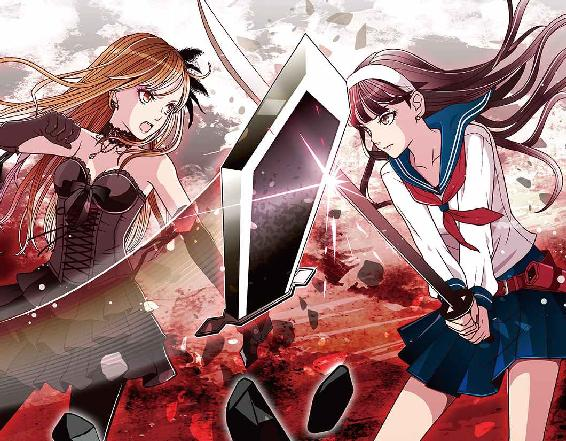
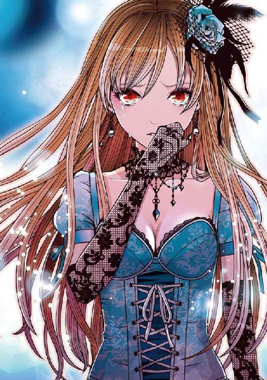
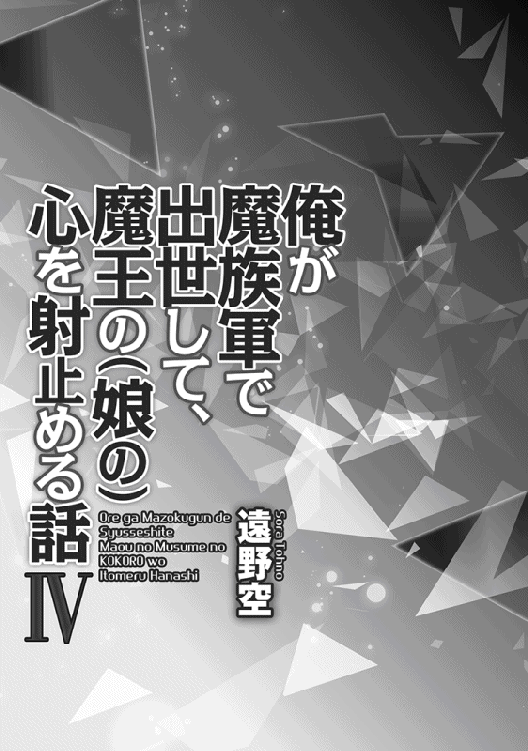
Illustrated by Eri Kamijo
Designed by ansyyqdesign(yoko)
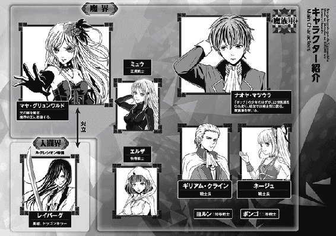
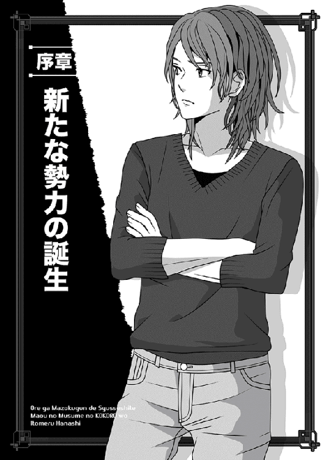
俺は目の前に広がった光景に度肝を抜かれた。
さっきまでマンションの屋上にいたというのに、なんだこの、外国風の街。
石畳の道の左右には、五階建てくらいのお洒落な木造の家屋が林立している。ほぼ全ての建物が、傾斜の急な屋根は赤で壁は空色と、なかなか統一感があってお洒落だった。
なんかのテーマパークかと思うくらいだが、もちろんそんなわけはない。
なぜなら、俺達は日本から転移してきたばかりだし、しかも周囲を歩いているのは明らかに洋風のふる〜い服装......つまり、男は裾の長い上衣で、女はコルセットとか裾の広がったふんわりしたスカート姿なのだな。
ヨーロッパ辺りの十八〜十九世紀くらいの格好だろうか。
「へぇええ......これがロクストン帝国か」
俺が感心して唸ると、腕にしがみついていたユメが激しく首を振った。
ちなみにユメという女の子は、日本で俺が出会った子なんだが......なんとこの子、後から異世界の結構名だたる女神（邪神とは呼びたくない）だとわかったのだな。
あれから紆余曲折あったが、結局俺はユメの元いた場所に日本から転移することにしたわけだ。
......なのに、着いた場所がユメの故郷じゃないって？
「違うよ、パパ。ここ......場所は間違いなく、ユメが元いたフランバール大陸だけど、明らかにロクストン帝国の町並みじゃない。あそこは石造りの街が多くて、もっと見た目が地味だもん」
途端に、俺の背後でユメの配下（女神だけに配下もちゃんといるのだ）がわんわんうるさくしゃべり出したが、どれもこれもただうろたえているだけのセリフなので、無視。
俺は可愛い顔をしかめたユメが左右を見渡すのを辛抱強く待ち、この子の判断を聞こうとした。
なんたって、このご一行の中で一番頼りになるのはユメだからな。
「それで、結局どこなんだ、ここ。ていうか、今からでもおまえの世界に戻れるのかい？」
「......そうじゃなくて」
恐ろしいことに、ユメ自身も途方に暮れた顔で、俺を見上げた。
見かけは中学生の女の子に見えるが、実はユメは、生まれてまだ一ヶ月ちょいしか経っていない。そして今は、本当に途方に暮れた幼女みたいな表情をしていた。
「どういうわけか、ユメが元いた時代より、遥かに時間がズレてしまったようなの。ここは元のフランバール大陸であって、もうフランバール大陸じゃないみたい」
ちょうどそこで、仲間の一人であるレイモンが、街の通行人を捕まえて訊いてきたらしい。息せき切って戻ってきた。
闇の軍団の軍団長みたいな立場なのに、なんという使い走り体質の奴！
「ユメ様っ。ここがどこかわかりました。どうやら、ルクレシオン帝国の帝都クレアールという場所だそうです」
「ちょっと！ そんな国、フランバール大陸にないんだけどっ。ロクストン帝国はどうなったのよ、ロクストン帝国はっ」
気の短い女ブレイブハートのサクラがいきなり叫ぶ......不機嫌そうに。
「わ、私に言われても知るものかっ。私だってうろたえているまっ最中だぞっ」
レイモンはむっとして言い返した。
日本での平凡な記憶しかない俺にとっては、その驚きは共有できないものだが、とにかくこの事態が異常だっていうのはわかる。
元の世界に帰還できてないわけだからな！
そこで俺は、おそるおそるユメにお伺いを立てた。
「ええと、つまりどういうこと？」
ユメの背後の取り巻きもみんな静まり返る中、ユメはきっぱりと言ってくれた。
「つまりこの世界はユメ達にとっては遙かな未来の世界で、ほとんど異世界なの！」
『えぇえええええっ』
いやぁ俺を含めて、全員が絶叫調の声を張り上げてしまった。
お陰で、街路を歩く異世界の皆さんが、みんなこっちを見たな！
そんな簡単に言ってくれて、これからどうすんだよー。
......以上が、半年前に俺達がこの見知らぬ世界に来た顛末である。
ちなみに俺は間宮玲次、通称レージという。
娘代わりとなったユメがとんでもない出自の割に、俺自身は単なるフリーターの十九歳だったりする。
しかも、日本じゃそこら辺にザクザクいるような凡人だ。
なのに、日本で古き女神の転生というべらぼうな女の子に巡り会い、運命が狂って異世界にまで来ちまったわけだな。
ホントに......どうすんだよ、これ。
○────○
日本から戻った俺こと松浦直也は、再びナオヤ・マツウラとして戦士将に復帰し、しかも復帰したわずか二十日後には、マヤ様は正式に魔王陛下となられた。
そう、現魔王陛下が引退し、新たにマヤ様の治世となったわけだ！
ひたすらマヤ様に仕えていた俺にとって、こんな嬉しいことがあるだろうかっ。
──などと、譲位式の最中に感涙してた俺だが......なんと、話はそこで終わらなかったのだな。
式典の真っ最中だった謁見の間に伝令が駆け込んできて、「ルクレシオン帝国が攻めてきましたっ」と来たもんだ。
当然、謁見の間にはマヤ様の怒声が響き渡り、俺は早速戦支度することになっちまった。
その間も続々と間諜やら国境砦からの伝令やらの報告が入って、ルクレシオン帝国軍の侵攻兵力は一万二千を優に超えることや、指揮官がレイバーグであることなどが確認できた。
ていうか、指揮してるのはレイバーグかよっ。
聞いた瞬間、俺は「げっ」と声を洩らしちまったな。だって、少し前にレイバーグを逃がしたのは、俺自身だもんで。
どうもあいつ、ルクレシオンに戻った途端、即軍勢を仕立ててこっちへ攻めてきやがったらしい。
ま、まあ......そりゃあいつにも勇者としての立場ってものがあるし、そもそも国王に命令されてやむなくなんだろうけど、なんだかなー！ 脱獄に協力したことに後悔はないけど、また激突することになったらたまらんぞ、しかし。
俺がそう考えて顔をしかめたのも、無理もないことと言えよう。
しかし、この後で事態はさらに二転三転するんだが──あいにくこの時の俺は、まだそれを知らずにいた。
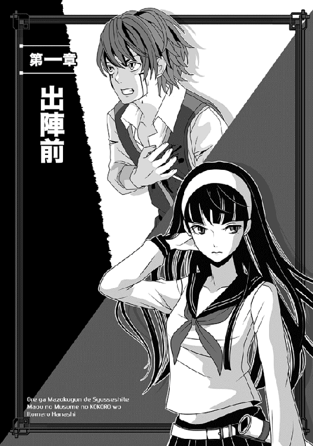
戦は時間勝負！
......前にそう言ったのは、マヤ様である。
そこで俺もなるべく急いで戦準備をしたんだが、いかんせん、これまでの下っ端生活が祟って、そうそう要領よくはできない。
ただ、俺にはギリアム・クラインという二枚目の貴族部下がいて、彼はなかなかこの手の準備に経験値が高いのだな。
自分の経験というよりは、家門であるクライン家が代々魔族軍の重鎮を務めていたから、父祖の代からの知恵だろうけど。
あと、こいつは元々俺の下に来るまでは、いわば奴隷の元締めみたいな立場だった。従って、奴隷戦士を集めるにはこの上ないほど顔が利くわけだ。
ちなみに魔界でもルクレシオン帝国でも、兵力の根幹を成すのは奴隷なんで、その数と指揮官の質が勝敗を分けると言っていい。
そこで、俺はギリアムに兵卒をかき集める方を全て任せ、自分は将帥というか指揮官クラスを集める方をがんばることにした。急ぐので半日くらいしか時間をかけられないけど、それだけありゃ、会って判断くらいはできるだろうと思ったので。
幸い、俺には「現魔王陛下」という、最強の後ろ盾がある。
だから人集めに苦労はないはずだが......実は、一つ大きな問題がある。
魔界の諸将はカシムなどのごく少ない例外を除き、だいたいは粛清されるか僻地に飛ばされちまってるってことだ！
それはつまり、先帝のナダル様に反逆したファルシオン伯についたクソッタレ貴族が、それだけ多かった証拠なんだけどな。
余談だが、ギリアムの家であるクライン家は、幸か不幸か反逆当時は長男のギリアムが俺の部隊に同行していたためもあって、断固として中立を貫いている。お陰で、マヤ様が復帰した後に家ごと潰されることもなかったが......というか、本当はそうしようとしていたマヤ様を、俺が止めた。
ギリアム自身は常に俺に従っていたわけだし、そりゃあんまりだろうと！
その代わり、全てが終わった後で「どっちつかずの態度が気に入らぬ！ 卑怯千万ではないかっ」という理由で、クライン家はマヤ様から莫大な罰金の支払いを命じられていたりする。
要はマヤ様にとっては、中立でも立派な敵だってことだ。
......世の中には、つくづく怒らせちゃ駄目な人がいるよな。
それでもクライン家は、他の貴族に比べりゃ天国と地獄ほどの差があるんだけど。
あまりに気の毒なんで、俺はギリアムの身分を自分の権限で戦士長にまで引き上げた。俺の一つ下だが、彼の能力なら余裕でそれくらいの資格はあるしな......二枚目だし。
それもあってか、なぜかクライン家の家中では俺に対してやけに評価が上がったらしい。俺がマヤ様の怒りをなだめ、クライン家の領地没収を寸前で回避したというのもどうしてだか伝わっていて、こっちの知らないところでやたら感謝されていたようだ。
ギリアムが苦笑気味に、「今後はナオヤ様に従い、何事もあの方に相談せよっなどと、両親から口を酸っぱくして言われます」と教えてくれた。
まあ、俺は全然信じてなかったんだが──。
「しかし......目の前にその証拠が現れるとは思わなかった」
俺は、執務机の前に立つ、きりりとした美女（いや少女かもだが）を眺め、呟いてしまう。わざわざ城内の客間を借りて、新たに補充する隊長格を面接していたんだが......よりにもよって、ギリアムの身内かー。
俺が座る横に並んで立つミュウも、珍しく目を丸くしている。
「ローズ・クライン二等戦士です、ナオヤ・マツウラ戦士将！」
ヤケに張り切った声で名乗ると、ローズはぴしりと踵を鳴らして気をつけの姿勢を取り、完璧な敬礼をしてみせた。
「部隊の指揮官を募集していると伺い、旗下に加えて頂きたく思い、参上致しましたっ」
な、なんという張りのある声かつ、やる気に溢れた表情......あと、声がでかいっ。リア充かよ、このねーちゃんはよぅううう。
日本じゃ堂々たるボッチの俺には、いきなり敷居が高いんだよっ。
思わず、「実戦は初めてか？ 肩の力抜けよ」と言いたくなるな！
見た目も、片目が隠れそうなワンレンの髪型に、ギリアムと同様の金髪碧眼である。だいたい魔界の貴族筋はみんなこの系統だが......いやぁ、ミュウと同じヒューマノイドかってほどの美人だな、しかし。すっげえ、気が強そうだけど......いや、考えてみりゃ、俺の周囲の女性はだいたい全員気が強いけどなっ。
しかし、彼女は気の強さに加え、やたらとお堅そうに見える。マヤ様の代から採用された、裾の長い純白上着に金色のラインの入った軍服も、決まりまくりだ。
「ちなみに、年は幾つ？」
いかん、口を半開きにして顔を見ていたせいか、思わず訊いてしまった。
でも気になるしな。
「十六歳ですっ」
おお、まだそんな年なのか......いや、十五歳の俺より上なわけだけど。
しかし、胸を見るともっと年上かと思った。
「......軍務経験どれくらい？」
「二等戦士に任官したのが、十日前です！」
物凄く堂々と胸張って言われた。
ていうか、要はど素人かーい！ 頭が痛くなるな、しかしっ。
過去形になりつつあるが、まだ貴族の力が強かった魔界では、血筋が全てといっていい。つまり、貴族の出であるというだけで魔族軍所属になった瞬間から、いわば自動的に（奴隷兵士の）隊長格である、二等戦士でスタートするのだな。
言うなれば、士官候補生である。
実際は候補もなにも、入隊即士官だけどな......その取り決めもどうかと思うんで、俺はこっそりマヤ様に改善を訴えようと思っているほどだ。
......ふと気付けば、なぜか嫌な沈黙が漂っていた。ローズはもちろん、俺の脇に立つミュウも、二人してじっと俺の反応を窺っている。
しまった、思わずあれこれ考えてしまったな。それでなくても、あまり時間ないのに。
「ええと、俺としちゃ奴隷兵士を指揮する二等戦士は、いくらでも欲しいくらいだけど......さすがに、実戦経験皆無は困るというか。そもそも、兄貴のギリアムは知ってるわけ？」
「兄は関係ありませんっ」
途端に膨れっ面になるローズだった。こりゃ、ギリアムはそもそも知らずにいるな。
「それに、機会を与えてくださらないと、戦士将の仰る経験もできませんっ」
ローズは俺の目を直視し、はっきりきっぱり言ってくれた。
とてもじゃないが、「今のセリフ、ちょっと妄想入れるとエロくなるな！」とか茶化せる雰囲気じゃない。
あと、俺が面接官みたいに座ったままで、このゴージャス美人が面接される側っての、なんか違和感あるなぁ。普通は逆だろう。
「私の主張は間違っているでしょうか」
俺のしみじみした思いには気付かず、ローズはさらに畳みかける。
「いや......そりゃ間違ってない。間違ってないが、俺に言わせりゃ、殺し合いなんてあまり喜んでするものでもないんだけどな」
思わず本音が漏れてしまったが、相手はまた何か言おうと口を開けたので、俺は慌てて手を振った。
「ちょっと待ってくれ」
ローズに一言断り、俺は傍らのミュウにこっそり尋ねた。
「この子、正直に語ってる？」
「極めて正直です」
嘘発見器など問題にならない精度で真偽を当てるミュウは、そこは保証してくれた。
腰を屈め、そっと俺の耳元に囁く。
「ただし......彼女はナオヤさんが苦手なようですね。敵視してると言っていいです」
「ああ、なるほど......そうだと思ったよ」
俺は自嘲気味に言った。
だいたい俺、日本じゃ余裕の非モテだからな。こんなハイソな美人に好意持たれるわけがない。予想が当たってかえって確信したね。
俺はミュウに礼を述べてから、今度は自分からローズを見上げた。
「君を使うかどうか決める前に、一つ尋ねたいんだけど」
「なんなりと」
「じゃあ、お言葉に甘えて」
俺はやや間を置き、思いっきり手札を広げた。
「ローズは俺を嫌ってるくせに、なんでうちの部隊に来るんだ？」
おぉ、見事に顔が強張ったぞ。俺は、いささか意地悪な感想を持ってしまった。
しかも、この子は思ったより正直だな。証拠があるわけじゃないんだし、「嫌ってはいませんっ」と言えばいいのに、衝撃を受けた表情の後は、なんだか悩んでいる様子だ。
「......嫌っているというのではなく、異世界人は苦手なのです、私は」
辛抱強く待つと、ようやくローズは答えた。
「特にナオヤ様が来てからは、魔界の根幹を成していた旧来の法が次々に崩れ始めていますし」
「例えば？」
「例えば、獣人族にも奴隷以外の道を開いたことがそうですし、それにマヤ様に対する拝礼の作法も、ナオヤ様の提案で別のやり方に変わったと聞きます」
「ああ、なるほど」
そういや、ファルシオン伯の反乱時にこの帝都に侵入する時、俺はマヤ様に獣人の身分を引き上げろと訴えたな。
結局、あの後で勝負を決めたのは俺とマヤ様とカシムの部隊だったんだけど、マヤ様は後から約束通り、獣人達の身分を引き上げた。
とはいえ、それはあくまであの時に俺が声をかけた連中に限るわけで、まだまだ特例の数は少ない。それにもう片方の、あのかっこ悪い拝礼のやり方を変更した件についちゃ、むしろ褒めてもらっていいと思うんだが。
だって前のやり方って、頭頂部を床につけて、ケツを思いっきり上げる姿勢だし。
例えば眼前のローズみたいな美人がやるなら俺は見たいが、野郎とか獣人がそんなポーズするのは、見るに耐えないんで、いらん。
片膝ついて低頭の方が、絶対にかっこいいと思うがなぁ。
この点、一部を除いてマヤ様も同じ意見だったというだけの話だ。
その辺のことを遠回しに説明してやったが、ローズはあまり納得した風ではなかった。
「理由があるのはわかりますが......でも、今のはあくまで一例です。それに、先程は言いませんでしたがその」
「怒らないから言っていいよ」
俺が愛想よく促してやると、ようやくローズは顔を上げた。
物凄く申し訳なさそうに言う。
「魔界の貴族は、同胞に親しみすぎたせいか、自分達以外の種族に慣れていません。肌の色も髪の色も目の色も違うナオヤ様を見ると、現状に納得いかないというのもあります」
「へぇええええ」
いや、俺はいよいよ感心したね。
ローズは要するに、自分の差別心を赤裸々に語っているわけだけど、普通、そういうのは隠すもんやん？ 言いにくそうであっても、真っ正直に打ち明ける度胸は買ってやりたい。こちとら、差別されるのは慣れているし。
......と俺は思ったのだが、美人度ではローズに負けないミュウは違う意見だったらしい。珍しくむっとした顔でまなじりを吊り上げた。
「つまり、差別心ですね......それも、ナオヤさんに対して」
おぉ......ヤバい。
切れ長の目が表情を失ってるぞ、ミュウ。この子がこんな顔する時は、大抵頭の中で、相手を敵に分類した時だ。「識別信号赤、敵！」みたいな感じだ。
「そ、その通りです......私には大きな差別心があります」
しかもまた、金髪のローズが顔を赤くして言うんだな。自分を恥じているわけで、この子はこの子で珍しい性格かもしれない。
自分に厳しく他人にも厳しいタイプだな、こりゃ。
「ですからっ。私はあえてナオヤ様の指揮下に入り、自分の差別心が正当なものか、それとも唾棄すべきものだったのかを、自ら見極めたいと思ったのです」
これはまた......なんとも正直な話で。
それが本当なら、ある意味では尊敬できる子かもしれない。少なくとも、自分の駄目な面を知りつつ、何とかしようとしているわけだから。
あと、恥ずかしいと思ったことを告白する時は、いちいち真っ赤になるのな、この子。
「よくわかったよ。なら、試しに今回の遠征に参加する？ 出陣はもう明日だけど」
「えっ」
驚いたように顔を上げた後、たちまちローズの顔に喜色が弾け、また見事な敬礼を見せてくれた。
「ありがとうございます、戦士将！ 必ず、お役に立ちますっ」
「期待してるよ〜」
俺が和やかに手を振ると、これも「機械人形かよ」と思うような回れ右をして、部屋から出て行ったな。
いや、なんかやたらと早足だったのが気になるが、最初から最後まで折り目正しい人だ。
「あの、ナオヤさん」
「うん？」
笑顔でミュウを仰ぐと、彼女は深刻そうな顔でこう言った。
「あの人が正直な人なのは事実だと思いますが、少なくとも最後の部分は曖昧なところがありましたよ......全部本当のことを語ったとは思えない、ということですけど」
「」
今更そんなことを言われ、俺は妙な声を洩らしてしまった。
「曖昧な部分ってどこ？」
「私の内蔵センサーがネガティブシグナルを検出したのは、この部分です」
ミュウはそっくり再現してくれた。
『私はあえてナオヤ様の指揮下に入り、自分の差別心が正当なものか、それとも唾棄すべきものだったのかを、自ら見極めたいと思ったのです』
「いや、反復する時に声まで同じにしなくていいから」
いつもながら、ミュウは限度を超えて有能すぎ。今の、ローズの声そのものだったぞ。
俺の呆れ声には反応せず、ミュウは憂い顔で続けた。
「この部分は嘘ではありませんが、あの人の真の目的は別にある......私はそう思います」
つまりアレか、細かい事実を白状する代わりに、最も大きな嘘を隠した──そういうことか。
「むううう......でも、もう採用しちゃったしなー」
頭を抱えたところで、今度はやたらせわしいノックの音がして、ギリアムが飛び込んできた。金髪を後頭部の方へとかしつけた、切れ者風の二枚目なんだが、今や顔中が脂汗に塗れている。
「ナオヤ様っ。まさか、ローズを採用したのですかっ」
「アンテナ高いな。なんでもう知ってるの？」
「私用で先程、家に戻りました時、『ローズもナオヤ殿に預ける』と両親に言われましたし──」
ギリアムは当惑顔で言う。
「それについ今し方、妹が私の部屋に来て、つんと顎を上げて、遠征の同行を教えてくれました」
「ほぉ〜」
......ていうか、「つんと顎を上げて」ってトコ、まさに情景が浮かぶぞ。
「いやまあ、ギリアムに相談しようかとも思ったけどさ」
俺は我知らず言い訳口調で述べる。
別に、美人だから採用したわけじゃないんだと言いたい。
「あの覇気がありまくりの人なら、どうせどんな手段使っても、どっかの部隊に潜り込むだろ？ なら、せめて俺やギリアムの目の届くところがいいと思ったんだよ。その方が生存率も高いだろうし」
魔族軍の実戦部隊は、おおむね生還を期さない作戦が多いからな。
「それで、採用されたのですね」
渋々、ミュウが頷く。
どうやらこの子は、俺に潜在的な反感を持つローズが同行するのは、反対らしいな......口にはしないけど。
「いえ、まさに仰る通りで、お気遣い痛み入ります。妹は、どんな手段を使っても戦闘に加わるでしょう。そういう子なので」
俺の言わんとするところはギリアムにも伝わったらしく、一応は頷いてくれた──が。
一方で、彼は呆然とこうも言ったね。
「しかし......何しろ思い込みの強い子なので」
やたら困ったように言いやがる。
......俺まで不安になるから、やめてくれよ。
レベルが上がろうと、俺は相変わらず豆腐メンタルなんだよ。
「ところで、本人に訊いたところで本当のところはわからないだろうから訊かなかったけど」
俺はふと思い出し、ギリアムを見る。
「あのローズって、腕の方はどんなもん？ いや、実戦未経験なのはもう聞いたけど」
「剣技の実力のことでしたら」
ギリアムは苦い顔でため息をついた。
「私はもう敵いません。幼少の頃から、師についてひたすら剣技の道に励んでいた子なので」
「へぇえええええ」
ギリアムだって、そう悪くない腕なのにな。
「いやぁいるんだよなぁ、そういう優等生タイプ。そういう子って、実際努力も人一倍するから、だいたい何を始めても上達早くて、劣等感つつかれまくりだー」
「いえ、妹の場合、所詮は訓練のみの経験なので」
身内のためか、ギリアムの言い方は厳しかった。
「実戦でローズの実力がそのまま通用するとは思えません。盾の奴隷を経験したナオヤ様には言うまでもないことですが......その、戦は剣技場の練習のようにはいきませんから」
「そうだなー、全くだ」
俺はそこは大いに賛成した。
「実際、戦闘では何が起こるかわからない。汚い手を使う奴だって多いし。だからこそ、最初のうちは俺達の目の届くところにいた方がいいんじゃないかな？」
「......恐れ入ります」
生真面目なギリアムは何に感心したのか知らないが、俺に向かって深々と一礼した。
○────○
その後も夕方まで面接が続き、ようやく解放されたところで──。
今度はマヤ様付きのメイドに呼ばれ、俺はマヤ様の私室に向かうことになった。
せっかく、ミュウと夕食でも一緒に摂って休憩しようとしてたんだが......まあ、俺は主君に仕える身だし、やむを得ない。
そういえば、今日は丸一日お会いしてないから、ちょっとお顔も見たかったしな。
......それはいいんだが、なんとマヤ様はこれまでの私室だった十二階を引き払い、魔王城の最上階──つまり十三階に私室兼執務室を移していた。
これは前魔王であるナダル様の思し召しらしく、娘のマヤ様──つまり新たな魔王と、部屋を交換したらしい。
しかも、ゆくゆくはナダル様は魔王城からも退去されるつもりだとか。
......何もそこまで権力の交代を印象づけることもないと思うんだが、それがナダル様のお考えなら、俺が口を挟むことじゃない。
それに、どのみちもう引っ越しは済んでしまったようだ。
俺が面接している間に人海戦術でさっさと済ませたらしいが、先に教えておいてほしかったぞ！ お陰で知らなかった俺は先に以前のマヤ様の部屋に向かい、警護の兵士に「ご存じなかったので!?」と呆れた顔で見られたやん。
ようやくマヤ様が最上階にいるとわかり、俺は機械式エレベーターを使わず、階段で十三階へ上がった。
いやぁ、久しぶりに城の最上階に出ると、感慨深いものがあった。
もはや季節は晩秋だが、つい数ヶ月前にはファルシオン伯側の兵士達やエスメラルダと死闘を繰り広げた場所でもあるからな、ここ。
──柄にもなく思い出に浸りつつ、石廊下を歩き出す。
とそこで、奥にある私室から見覚えのあるごついオヤジと、全然見覚えのない若者が出てきて、俺は思わず足を止めた。
オヤジの方は、最近になって無精髭を長く伸ばし始めたカシムで、俺を見た途端、嬉しそうに歩み寄ってきた。
「おお、ナオヤ様っ。よいところでお会いしましたな。陛下に呼ばれましたか？」
「ええ、まあ。ていうか、カシム──もかな？」
カシムさんと呼びかけ、俺は慌てて呼び捨てに変更する。
この人、身分の上下にうるさいからな。俺はさん付けで呼ぶ方が気が楽なんだが。
「いえいえ、わしは新たに召し抱えた家臣の身分を引き上げる許可を頂くのと、それから明日の出陣の同行を、陛下にお願いに参った帰りです」
「そ、それで陛下はなんと？」
「快く、同行をお許しくださいましたっ」
このおっさんがまた、嬉しそうに言ってくれるんだな！
こっちは「カシムがいりゃ、留守は安心だ」と算段してたっつーのに。
アテが外れたよ、ホント。
「魔王城の留守が心配なんですけど......う〜ん」
「はっは！ そっちはナダル様がいらっしゃるではありませんか。何も心配ありません。我々はひたすら、戦うことを考えましょうぞっ。わしも今回は、久しぶりに敵の首を刈りまくりますぞおっ」
「は......はははっ」
また相変わらず、イケイケなことを言う人だ。しかも、もう上半身は革鎧姿だしな。出陣は明日なのに、気が早いよ！
俺は内心で、ルクレシオンとの戦を結構心配してるってのにー。
引きつった笑顔で表面上は応じつつ、俺は内心でため息をついた。
「時にナオヤ様」
カシムは妙に興奮した目つきで俺を見た。
「遠征のために奴隷兵士をかき集める途中、面白い男を見つけましたぞ」
「後ろに立ってる人ですか」
さっきから気になってた俺は、カシムより数歩後ろに立つ男を眺め、ひそひそと返す。
魔界風のスーツではなく、黒シャツに黒ズボンの地味な格好で、ただ剣のみを腰に吊っている。
黒髪を長く伸ばし、ハンカチみたいな布を背中で結んでいた。
戦士のくせにやたらと落ち着いた表情だし、かなり見栄えのいい少年に見える──が。
ただ......瞳が暗い。まるで、喜怒哀楽など母親の腹に忘れてきたような目つきだ。
「実はさっきから気になってました。もしかして、身分引き上げの許可っていうのは、彼ですか？ かなりの腕だと見ましたが」
「さすがはナオヤ様です、奴の実力に気付きましたか」
カシムは嬉しそうにニヤッと歯を剥き出した。
「わしは、とんでもない宝石を拾った気がしますわい。先行きが楽しみでしてなあ」
このおっさんはホント、荒事方面の話題が大好きだなっ。密かに苦笑していた俺は、しかし次の瞬間、顎が落ちた。
カシムが......こう述べたからだ。
「こいつは、異世界から召喚された肉の盾──いえっ、盾の奴隷の最後の生き残りです！」
「えっ」
情けないことに、俺は上擦った声を上げた。
「放り込まれた部隊は全然別ですが、調べたところ、ナオヤ様とほぼ同時期に召喚されているようですぞ。しかも、その後も最後まで戦死を免れてます！」
いや、戦死してないのは見ればわかる、うん。
「し、しかしっ。異世界から奴隷兵士を召喚するのは、俺がマヤ様に進言してもう廃止になったはずじゃ？」
「廃止になりましたとも」
カシムは大きく頷く。
「マヤ様が帝位につく寸前に。......ですがどのみち、その時に盾の奴隷に残っていた異世界人は、こいつで最後のようですな」
俺の驚き顔を見て、カシムはわざわざ補足説明してくれた。
「盾の奴隷については、ナオヤ様がいた頃と状況はさほど変わりませんぞ。ファルシオン伯の反乱から帝都の動乱に至るまでの騒ぎの間、大規模な戦は数えるほどでしたからな。ミュウなどの例外は置いて、こと盾の奴隷に関してのみ言えば、当時から異世界人はこいつとナオヤ様しか残っていなかったわけです。どうも年齢も同じらしく、不思議な縁ですな」
「そ、そうなんですか......」
いや、こっちも日頃から自分と同じ立場の奴をほとんど見かけないなとは思っていたが、それでも他の部隊にはいるんだろうと思っていたよ。
しかし......そうか、肉の盾で残ってる異世界人は、あの時点でもう俺と彼くらいだったのか。あの部隊は悲惨だから、特に驚きもしないが。
そういうのって気が咎めるな、しかし。
俺は、自分が過剰に衝撃を受けた理由を、ようやく理解した。
だってほら、俺だってチンタラ遊んでいたわけじゃないけど、この数ヶ月の間に身分が大きく変化しているわけで。
少し前まで立場が同じだったのに、こんな短い間にでっかい差がついちまったと思うと、気が引けるぞ......俺が奴の立場なら、むちゃくちゃ腹立つ──ような気がする。
いや、意外と「まあ俺はボッチだし」としか思わんかったかもしれんが。
「おい、アラン！」
俺の戸惑いをよそに、カシムは後ろを振り返った。
「戦士将のナオヤ様だ。挨拶をせい！」
カシムの声に応じて、黒衣の少年はゆっくりと彼の横に並び、敬礼をした。
「たった今、二等戦士に昇格しました。アラン・リムスキーです」
綺麗に澄んだ瞳だが、やはり一切の感情が窺えなかった......少し寂しそうには見えるが。
髪と瞳の色は俺と同じだが、肌は白いし、優男風のイケメンだし、こいつは少なくとも日本人じゃないよな。
俺がじろじろ眺めていると、アランは静かに俺を見返した。
特に気を悪くした様子はないが、相変わらず感情というものがさっぱり感じられない。実は、この手のタイプは肉の盾では珍しくなかった。
絶望を通り越してある意味達観してしまうか......あるいは無闇に陽気になるかだ。
俺のような中間タイプなんてほとんどいなかったね。まあ、記憶に残ってるのは、魔界出身の肉の盾ばかりだが。
「ああ、ごめん。ナオヤ・マツウラです、よろしく」
それでも俺は、とにかく答礼しておく。
思わず敬語になってしまったせいか、カシムに咎めるような目で見られたけど。
これくらい許せ！ 俺は元々、道の向こうから他人が歩いてきたら、自然と脇に避けるようなメンタル弱い奴なんだよっ。
なぜかじくじくと気が咎めてる今、横柄な口調で話せるもんかっ。
とはいえ、どのみちアランはそれ以上は一言も話さず、カシムも俺の反応の薄さに首を傾げつつ踵を返した。
「では、明日また帝都の門でお会いしましょうぞ！」
「ええ、よろしく」
何をよろしくだか知らんが、俺は適当に愛想笑いで二人を見送る。
そのまま、なんとなくため息などついていたんだが。
俺がドアに向き直る寸前、アランが静かに立ち止まり、こちらを振り返った。カシムが気付かないまま、俺とアランの視線が真っ向からぶつかる。
──その時、なぜかアランはゆっくりと微笑した。
半ば身体をこちらへ向けたままの不自然な姿勢で。
笑い顔ではあるが、温かみは全く感じられない。肌に冷気が忍び寄るような笑みだった。微妙に威圧感があって、こえーんだよ！
どうかしたのかと訊きたかったが、アランが俺を見て微笑んだのはほんの一瞬のことで、あとはすぐにカシムを追って早足で歩き始めた。
肝心のカシムは、おそらく奴が俺に振り向いたことすら気付いてなかっただろう。
「なんなんだ......一体」
俺は人知れず背中に冷や汗をかいたまま、しばらく冷たい廊下に立ち尽くしていた。
もう部屋に入る前から疲れた気がするが、当初の目的を思い出し、俺はようやくマヤ様の私室をノックする。
「ナオヤです。ご命令により、参上しました！」
「うむ、入ってよい」
待ちかねたような声がして、俺は気を取り直してドアを開けた。
何気なく入って後ろ手にドアを閉めたのだが......そこで固まってしまった。
マヤ様が純白のピアノ前に立っている。
元々、前陛下であるナダル様の私室だったので、このピアノもあのお方が使っていたものだが、そのピアノの前でウエストに両手を当てて仁王立ちしていた。
格好がまた凄いぞ。
競泳水着みたいな黒のボディスーツに、表面が漆黒で、裏地が真紅のマントときた。
......有り体にいえば、速攻でドロンジョ様を思い出したね！
「どうだ、この姿は？ ナオヤの意見を容れてみたのだが」
「え、俺ですかっ」
口を開けていた俺は、慌てて問い返す。
「今更、何を言う？ この前、雑談で『俺の世界では、想像上の魔王はだいたいこんな格好してます』と教えてくれたのは、ナオヤであろう！」
マヤ様が眉根を寄せる。
おぉおお......そういえば、そんなことも言ったかもしれない。
夜中に呼ばれてマッサージの最中、「ナオヤの世界でも魔王という存在は認知されているそうだが、それはどのような格好をしているのか」と訊かれたのである。
疲れ切っていた俺は、あえぎながら上の空で返事した気がする。
主に、露出面積を基準にしてな！
「い、いやぁ凄まじく似合いますが、普通のドレスでもいいような」
「......自分から勧めておいて、今更その言い草はどういうことか？」
台風の目を抜けて暴風圏に入ったように、あっという間に機嫌が悪化したマヤ様である。
「いえっ、似合わないというのではなく。その、マヤ様──いえ、陛下がそういう格好をすると、男からの注目が集まりすぎて──っていだだだだだっ」
なぜか急に耳を引っ張られ、俺はずるずると引きずられてしまう。
向こうの方が遥かに力持ちなので、振り切ることなど不可能だった。二人して恐ろしく広い部屋を横断し、隅に置かれたソファーに放り出されるように座らされた。
「なにすんですかっ」
俺が耳を押さえて呻いていると、ばさりとマントを捌いたマヤ様が、俺の前にすっくりと立つ。
腰を屈め、俺に額を寄せると、一語一語はっきりと告げた。
「ナオヤはマヤを陛下と呼ぶな」
「え、どうして？」
「ど・う・し・て・も・だ！」
見開いた瞳が急激に真紅に染まっていく。
「わ、わかりましたっ。では、これまで通りマヤ様で」
なんでもいいから、真紅の目で睨まないでほしい。
「それでよい。二度と陛下と呼んでは駄目だぞ」
ようやく機嫌が回復して、マヤ様は俺の横に座った。
「戦準備の方は整ったか？」
「ええ、まあ何とか。奴隷指揮のために二等戦士をだいぶ補充しましたし、あと肝心の奴隷戦士も、ギリアムが数を揃えてくれています──ただ、人数は一万に届かないですね」
おそるおそる俺は打ち明けた。
「俺の力不足もありますが、今回、準備期間が短かすぎてなかなか。九千前後集めるのがやっとでした。それに、反動で帝都守備の部隊はだいぶ少なくなります」
「よい。どうせ敵を上回る戦力を整える余裕などない」
マヤ様はまた、あっさりと言ってくれた。
「あとは、ナオヤとマヤで何とかしよう」
「は？ 遠征に行く俺はわかりますが、マヤ様はどういう──」
「相変わらず鈍いな、ナオヤは！」
女王様が奴隷を見下すような目つきで、マヤ様は俺を見た。ていうか、一部はそのまんまだが。
「要するに、マヤも今回の遠征に同行するということだ！」
「ええっ」
正直、これは想定外だったよ！
当然、俺は慌てて口を開いた。
「しかしそれは──だだだっ」
「しかしではない」
素早く手を伸ばして俺の頬を引っ張り、マヤ様はゆっくり言う。
なぜか凄く嬉しそうである。
「前に、ヤクザ映画の話をしてくれたであろう？ 深夜にたまたまナオヤが観たという」
「そ、それがどうかしたですかっ」
じゃなくて、痛いんだよ。離してほしいぞっ。
「あれに出てくる、ヤクザの頭目と同じ理屈を、今こそマヤも告げよう。つまり、魔王であるマヤが黒だと言ったら、白いものも黒くなるのだ！ わかったか!?」
──忘れているようだが、魔界では魔王の命令が絶対ぞっ。
補足としてそんなことも囁かれた、耳元で。
しかしこの人、俺から聞いた情報を、すぐにろくでもないことに利用するなっ。
ようやく片頬を引っ張っていた手を離してくれたが......例によって絵に描いたようなドヤ顔で俺を見るのがたまらん。
いや、こういう表情も可愛いとか思ってる俺が、一番問題ありそうだが。
「た、確かに俺に拒否権はないですが」
「実際にない、ないのだ。この決定はもう覆らない。マヤもナオヤと一緒に、ルクレシオンの軍勢を蹴散らしてくれるっ」
鼻息も荒く宣言してくれた。
これは......もうどうにもなりそうにないな、ホント。
俺が穏当に「魔王親征とか危ないし、帝都に残りましょうよ」と進言しても、この件に関しては無駄そうだ。こうなったら、俺が遠征中に気をつけるしかないだろうな。
そう覚悟し、俺は肩をすくめる。
「ではそれはそれとして──さっきカシムが奴隷の昇格許可を求めに来たと思いますが、あのアランっていう若者を見て、マヤ様はどう思われました？」
俺はもっとも気になっていたことを尋ねた。
カシムの紹介のみならこんな質問はしなかったが、なにしろ最後のあの視線があったからな。
だがしかし......俺の質問をどう勘違いしたのか、マヤ様はなぜか顔中に笑みを広げた。満足しきったペルシャ猫みたいな顔つきであり、俺を見る目が嬉しそうである。
「うふふ......ついにナオヤもマヤの苛々を思い知る時が来たようだな」
「......は？」
「は、ではない。わざとらしく隠そうとしても無駄だ。普段、そんな質問などしないナオヤがあえて訊くからには、つまりあの者を意識したからではないのか？ ははは、わかりやすい嫉妬だな」
こっちの顔を覗き込むようにして、至近から言われた。
いや、どうでもいいけど、とっても......顔が近いです。唇がくっつきそうでたまらん。例によって得も言われぬよい香りもするし。
そもそも、なんで俺が奴に嫉妬せにゃならんのか......と一旦は思ったが。
少し考えて、鈍い俺にもわかった。
つまりマヤ様は、ご自分があのアランに気があるのではないか──と俺が疑っていると思ったわけだな、多分。
......正直、それは確かに俺が考えそうなことだけど、ことマヤ様に限っては、実は限りなく低い可能性だと思うのだな。
なぜならこの方は、自分で公言するように、マジで男嫌いだからだ。
ただ、それを言うとまたこの人は機嫌が悪くなりそうだからなぁ。
そこで俺は、調子よく合わせておくことにした。アランのことを訊いてみるつもりだったけど、この分ならマヤ様が何か知ってるわけでもないようだし。
「は......ははは......まあそりゃ、部屋からあんな二枚目が出てきたわけですし」
「ふふん、ようやく認めたか」
目を細めて舌なめずりなどされた。
この方ほど表情がくるくる変わる人も、あまりいない気がする。
ほけっと見てたら、素早く口付けされ、俺は飛び上がりそうになった。
い、いきなりですか！
「だが心配せずともよい......マヤは心変わりせぬ」
「そ、それは大変嬉しいこと──」
「もちろん」
俺の言葉を遮り、またマヤ様が至近から見つめる。
「......ナオヤも同じであろう？」
間近で真紅に染まっていく瞳に、俺は思わず見とれてしまう。
「同じであろうっ!?」
お陰で、たちまち膨れっ面になったマヤ様に「返事はっ」とまた頬を引っ張られてしまったが。
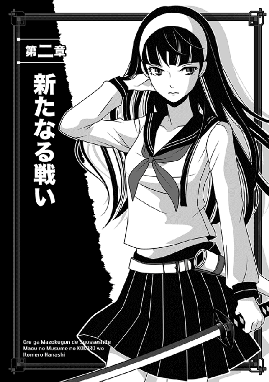
翌朝、帝都マヤを出陣するため、俺達は早朝から黒い巨大な門の前に集合していた。
今回は帝都の留守を守るのが前魔王のナダル大公（今やこう呼ばれるようになった）なので、背後の安心感が半端ない。
なにしろナダル様がいれば、後の守備を心配する必要ないしな。
そのせいか、今回は本人の要望もあり、カシムもこの遠征に同行している。無論、あのアランも一緒なのだが......幸か不幸か彼はカシムの隊に紛れていて、今日は全然目立たなかった。
余談だが、アランが肉の盾にいた頃のあだ名があって、それは「死神」というそうな。さっき雑談でむちゃくちゃ嬉しそうにカシムが教えてくれたが、そんなの知りたくなかったね！
もう、ちょっとあだ名を聞いただけで、かつての縁起悪い戦績がわかろうってもんじゃないか。今日はマヤ様も同行するとはいえ、信じがたいことにこの遠征軍の実質的な指揮官は俺なのだ。
験担ぎを重視する俺に、そんな話はやめてほしいぞ。
それはともかく、今朝は珍しく俺の部隊はほぼ全員が既に揃っていた。
ギリアムとその妹が俺より先に集合していたのはわかるとして──常に遅刻が当然のエルザまで（ギリギリとはいえ）ちゃんと定刻にやってきて、ちょっと驚いたほどだ。
まさか、前に俺が昇格してやったから、やる気を出したというのでもないと思うんだが、まあこれは素直に喜ぶべきか。
一時は間諜として絞首刑が視野に入ってた彼女も、もはや堂々たる魔界の士官クラスである。
配下にも、ギリアムがかき集めてきた魔法使い部隊（全員奴隷）が大勢揃っていたりして、なんかもう頬が紅潮している。
元から鼻梁の高いキツめの美人なのに、今や鼻が天を向きそうだ！
ついでに馬上でめちゃくちゃ得意そうに胸を張るものだから、遠くから奴隷兵士がチラチラ見ているほどだ。
実にわかりやすい人であると言えよう。
──とまあこんな感じで、俺の主立った配下の身分は、現在以下のようになっている。
戦士将──俺
戦士長──ギリアム・ネージュ
正規戦士──ミュウ
特等戦士──エルザ・ヨルン
二等戦士──ボンゴ
ミュウがエルザ達より上の身分なのは、もちろん俺の意志である。正直この子は、俺と同格かそれ以上でもいい気がする。
で、カシムは俺とは別部隊の指揮官で戦士長のままだ。
これは当然、俺の決定じゃなくてマヤ様の命令なんだけど。
本人は「むしろ、反乱騒ぎの罪があるのに、申し訳ない」と言ってたくらいで、この処置には逆に恐縮してたな。
以上──魔界の身分制度は今後大幅に変更される噂もあるが、現状はこんな感じだ。
実は正規戦士と一口に言っても、細かい内訳身分（五戦士とか十戦士とか）があるんだが、それは省いてあくまでざっくりとした身分。
いや......一人忘れてた。
昨日入ったばかりのワンレンパツキン女のローズは、二等戦士だ。軍務経験まっさらだし、これでも破格ではないだろうか。
そのローズは、さっきから一分の隙もない軍服姿で馬上にあり、チューバッカも青ざめる巨体のボンゴを、胡散臭い目で見ている。
このねーちゃん、エルザよりさらにわかりやすいな。
俺が内心で嘆息していると、いきなり覇気に溢れた声がした。
「──うむ、集合しているな」
慌てて見下ろすと、いつの間にか俺の馬の脇に、白いコルセットドレスでひだの多いミニという姿のマヤ様が立っていた。
マントのみは昨日と同じだが、今日は普通にスーパーモデルみたいに見える。いや、それでも全然普通じゃないけど。
胸元なんか、谷間がはっきり窺えるしな。
「全員、拝礼！」
危うく胸元に視線固定しそうになったが、魔界の法を思い出して、俺は慌てて怒鳴った。
しかし、ほとんど俺が注意するまでもなかった。
馬上の士官クラスは大慌てで馬から飛び降りて跪いたし、奴隷兵士はその場で這いつくばる始末......もうあ〜っという間に、周囲の眺望が改善したね。
「だ、ダークロード──いえっ、魔王陛下万歳っ」
慌てて遠くへ退避したギリアムが、掠れ声を出す。
......怯えようが凄まじいな、しかし。
頭を下げたまま、もう１ミリたりとも顔を上げようとしないという......前に殺されかけたせいか、よほど懲りたらしい。
しかもなんと、別部隊のカシムまで地面に頭をこすりつけているぞ。
ダークプリンセス改めダークロードの異名を持つ新魔王の、この恐れられよう......正直こればかりは、前魔王の大公ナダル様より全然上だ。
怖がってこそいないが、俺も当然、馬を降りて改良された拝礼をしようとしたんだが、マヤ様は俺を片手で制し、ざっと周囲を見渡した。
なぜか、特に俺の至近の部隊で、俺に近い者ばかりを。その後はたちまち笑顔が消え、じっとりとした視線で俺を睨む。
開口一番、言ってくれた。
「......女が増えているではないか？」
既に声のトーンからして怒ってるぞ、おい。
俺が何をしたよ!?
「いや、別に俺が自分のために配下に加えたわけでは──」
「ほう、面白いことを言うではないか、ナオヤは」
マヤ様が唇を尖らせて俺を見た。顔が近い上に、声がすげー嫌みったらしい。
「いやだから──」
「自分のためでなければ、誰のためだという？ 納得のいく説明を聞かせてもらおうぞ」
俺がまだしゃべってる途中だっつーのに、無理に遮ってくれた。
ちなみに、周囲を埋め尽くす全軍（その数九千！）が、まだ拝礼というか片膝ついたままであり、俺達をちらちらと見ている。
跪く九千の兵達の中で、二人だけ立って痴話喧嘩してる俺達って！
などと考えていたら、いきなり肘鉄食らった。
骨にヒビが入るような威力で、うずくまりそうになった!!
「いてえっ」
「返事はどうしたのだ、返事は!?」
「こ、声が大きいですって」
俺は必死で声を低め、針が落ちても聞こえそうな周囲を見渡す。
魔王が到着しているので、雑談なんかする命知らずがいるはずもない。よって、小声の会話でも結構、遠くまで響くのである。
「そもそも彼女は、ギリアムの妹らしいですよ。だからうちに来たのは、いわば縁故採用なんです」
「ギリアムとな？ 誰だ、それは？」
腰に片手を当てたまま、マヤ様は平然と首を傾げた。
ま、また忘れたんですか、貴女は。
もう割と何度も顔を合わせてると思うんだけどなっ。これで忘れられるんだから、ある意味すげーよ。
「ギリアム・クラインですよ、貴族の出の。ほら、あそこに這いつくばってるオールバック金髪の人です。マヤ様、前に彼の首を刎ねかけたじゃないですか」
「ふん。マヤが首を刎ねた者など、数えきれぬほどいる。それくらいでいちいち気に留めるものか」
ちらっと恐ろしいことを述べたが、それでもマヤ様は、俺が指差す先を見て頷いた。
「ああ、クライン家のあの者か......」
理解はしたようだが、機嫌はあまりよくならなかった。
前にも言ったように、マヤ様は反乱騒ぎの折にクライン家が中立を保ったのを、未だに腹に据えかねているのだ。
「だがそうか......そういうことなら、仲間思いのナオヤなら部隊に入れても不思議はないか」
「そう、そうですっ」
ていうか、なんで採用した二等戦士が女だったくらいで、ここまで言われにゃならんのかとっ。そう苦情をねじ込みたいが、もちろん俺も昨日今日生まれたわけじゃないので、あえて口にはしない。
「とはいえ、あの者の外見は悪くないな......それに、魔法使いも増えたし」
まだ納得していない様子で、マヤ様はちらちらとローズを、そしてエルザ達魔法使いを見やる。
「ナオヤの周囲にいる女は、だいたい皆が美人か──あるいは美人で胸が大きいかだが、これは偶然なのか？ うん？」
「偶然ですよっ。ていうか、細かいですよっ」
さすがに大人しい俺もむっとして、声を張り上げた。
少し大きい声だったせいか、周囲の兵士が数百名ほど顔を上げて俺を見る。
たまらんな、しかし！
「それより、今は魔界の危機ですし、早く出陣しましょう。それでなくても、敵はもう国境を突破しているようですし」
「......確かにな」
命拾いしたなおいっ、と言わんばかりにマヤ様は俺を睨み、ようやく息を吐いた。
さすがにこれだけの大軍の出陣だし、さらに魔王の地位に就いた直後でもあるので、今回は俺の馬に相乗りするわけではないらしい。
メイドさんの一人が、毛並みの綺麗な白馬を引いてマヤ様のそばに来た。
「よし、追求は凱旋の後だ（追求するんかいっ）。まずは、ルクレシオンの者どもを殺し尽くすとするか！」
ようやくマヤ様がそう言ったので、俺は正直、むちゃくちゃほっとした。
カツアゲしてくる不良よりタチ悪かったからな、今の尋問はっ。
しかし、ほっとした俺が自分の馬に戻ろうとしたその時、いきなり聞き覚えのある声がした。
「お待ちくださいっ」
「えっ」
慌てて振り返ると、なんと今話題沸騰中だったローズが、顔を上げてこちらを見ていた。横のギリアムが慌てて「ば、馬鹿者っ」などと押し止めようとしているが、それを手で振り払ってマヤ様を見つめている。
「陛下にお尋ねしてよろしいでしょうか！」
「尋ねる？ このマヤにおまえがか!? 聞き間違いではあるまいな？」
素早く振り向いたマヤ様は、ローズが着る制服の階級章を見て、一層顔をしかめた。
階級章なんか真面目につけてるしな、あの子もっ。
「軍に編入したばかりの女が、しかも二等戦士ごときが、このマヤに直接にか!?」
うわっ、たちまち瞳が真っ赤に。な、何考えてんだ、ローズ!!
俺は心底びびって寿命が縮んだし、妹を見るギリアムの顔色なんか、血の気が引きまくって古新聞よりもひどい色合いになってる。今にも頓死しそうだ。
しかし、ローズは至って本気らしく、片膝をついたまま懸命に言い募った。
「失礼を顧みずにお尋ねします。陛下はこの戦に同行されるのでしょうか？ もしそうであるなら、魔王陛下の御身を考えれば、それはお止めになるべきかと──」
途中でさすがのローズも口を閉ざした。
というのも、皆まで聞かず、マヤ様がいきなり右手に漆黒の大剣を出現させたからだ。
今回は、ヤクザ話の前振りすらなかったね！
そのまま無言でローズに向かって歩き出そうとしたので、もう何をしようとしているのか、丸わかりである。放っておけば、あのねーちゃんは二つ割り確定だ。
さすがに見ていられず、俺は慌ててて前に立ち塞がった。
「邪魔をするな、ナオヤっ」
うぇええ、これは駄目だ......目が怒り狂ってる。
しかも、マヤ様の本気の激怒と兄の怯えようを見て、さすがのローズもコトの重大さを悟ったらしい。
今はひたすら平伏しているし、もう俺が何とかするしかない。
ギリアムのこともあるし、元々ローズは俺が採用した子だし、見捨てるわけにはいかないよな。妹が殺されたら、ギリアムだって悲しむだろう。
そこで俺は、とっさの機転でローズの前に平伏して、わざと大声を張り上げた。
「ローズを採用したのはこの俺ですし、今回の礼儀知らずの振る舞いについても、俺に最大の原因があります。命令系統を無視して訴えたのは上官の監督不行届ですから、明らかに俺の任務怠慢に当たりましょう」
「そ、そんなっ」
たまりかねたのか、顔を上げたローズが何か言おうとしたが、今度はさすがにギリアムが間に合ってくれた。
ささっと妹の首っ玉を押さえつけて元の姿勢に戻し、厳しい口調で命じたのだ。
「いいから、おまえはもう黙れっ。わからないのか、ローズ！ 今おまえは、ナオヤ様の命まで危うくしているのだっ」
......いや、まあ彼女の直言も正しいっちゃ正しいんだけどな。
俺はこっそり内心で思う。間違ったことは言ってないよ、多分。
ただ、現実の軍隊だって、普通は下っ端が大将に直訴できるわけないんであって。そこはやっぱり、ローズの態度も悪い。
だから死んでいいって理屈にはならないだろうけど。
そう信じる俺は、顔を上げて必死にマヤ様に訴えた。
「そういうわけですから、俺も罰を受けるべきです。どうしてもとあれば、まずはこのナオヤの首を刎ねてください。順序からいっても、責任者であるこの俺がまず死ぬべきかと！」
ちなみに俺は、自分が絶対に安全だとは思ってないし、場合によっては首を刎ねられてもしょうがないと思っている。
この点、悪い意味で俺は思い切りがいいのだ。
しかし、俺の態度を見て感じるものがあったのか、マヤ様が苦手なギリアムまで顔を上げた。
「し、失礼ながら、そもそも兄の私が──」
「黙れ！」
沈黙していたマヤ様が、ぐわっとギリアムを睨んだ。
「貴様がナオヤの真似など、千年早いっ」
いきなり一喝され、ギリアムは慌てて頭を下げた。
「は、ははっ」
「......ナオヤ、ちょっと」
声をかけたくせに、マヤ様は俺の腕を掴んで重機みたいなクソ力で引っ張り上げ、隅の方へぐいぐい連れ出した。
かなり歩いて皆から離れると、心底迷惑そうな顔で言ってくれた。
「あのように、気安く命を粗末にしようとするな！ おまえとあの女の命、いや兄妹の命は、等価ではないのだからな。先にそれを心得よ!!」
......人権団体が聞いたら青ざめそうなことを、平気で断言してくれた。
「い、いえ、おこがましいのはわかってましたけど、しかし俺の監督不行届も本当ですよ。ギリアムの妹なら魔界の法に詳しいだろうと、油断しました。あの人、俺の想像以上に箱入りお嬢様だったようです」
頭をかきながら言い訳などする。
マヤ様は手のかかるクソガキを見るような目つきで俺を眺め、ようやく右手の剣を虚空へ戻した。
「......ナオヤの意見を無視もできぬ。では今回は、あの女ではなくナオヤのために、さっきの無用な差し出口は忘れよう」
「あ、有り難き──」
幸せ、と言いかけた途端、マヤ様がぎらっと睨む。
「ただし、マヤからあの者に警告しておく」
言うなり、マヤ様は今度は一人でずんずんと元の場所に戻った。
未だに平伏中のギリアム兄妹の前に立ち、特にローズを見下ろして宣告する。
「おまえを殺すために、ナオヤまで犠牲にはできない故、今回は忘れてやろう。これは単純に、貴様よりナオヤのためだ」
身も蓋もないことを言い切る。
......俺、かなり悪照れするんだけど！ みんなの注目浴びて恥ずかしいし。
しかもマヤ様は険しい顔のまま、真紅の瞳でローズを睨みつけたままだ。あたかも、「貴様の顔は覚えたぞっ」と言わんばかりに。
「言っておくが、例外は一度でたくさんだ。今度はナオヤが止めても首を刎ねる！ よいなっ」
「......はっ」
内心でどう思ったにせよ、ローズは今度こそ一言の異論も挟まずに額を地面に擦りつけた。その瞬間、肺の中の空気を全部吐き出したようなため息が、一斉に全軍に満ちた。
みんな、固唾を呑んで見守っていたらしい。
そりゃまあ、ほとんどの奴は人が首を刎ねられるトコなんか見たくないだろうしな......多分だけど。
しかしこの兄妹は、二人揃って俺をびびらせてくれる。
「ナオヤ、何をしているっ。さっさと出陣するぞ！」
マヤ様は既にとっとと白馬にまたがっていた。
「は、はいっ」
なぜか俺まで怒鳴られちまったよ、くそっ。
いきなり頭の痛い騒ぎがあったが、とにもかくにも、九千の軍勢が帝都マヤの黒い門を出た。
驚いたことに、門の脇の目立たぬ場所にナダル大公も立っていて、俺達を見送っていた。
前を見据えていたマヤ様は気付かなかったけど、俺はきっちり気付いたさ。
......しかもナダル様、俺と目が合った途端、物凄く真剣な顔であたかも話しかけるように口を動かしたりする。
いや、こんな距離じゃ聞こえるわけがないし──と思った瞬間、耳元で囁き声がした。
『娘の命を預けるぞ、ナオヤ！ くれぐれも、くれぐれも頼む』
「わ、聞こえたっ」
驚きのあまり、馬の鞍から尻が浮きそうになったじゃないか。
「......何が聞こえたのか？」
横に並んだマヤ様が首を傾げたが、俺は愛想笑いで誤魔化しておいた。
いやぁ、当然安全には気を配るつもりでいるけど、責任重大だよな、しかし。
向こうの方がだいぶ兵力が多いってのに、今から頭が痛いぞ。
○────○
幸か不幸か出陣した後は、街道沿いをぞろぞろ行軍していくだけで、特に問題は起きなかった。
例によって俺は頻繁に斥候を放っているが、以前のように「途中でうろついている間諜を見つけた」などという報告もない。
念のため、俺達が通り過ぎた場所にまで斥候を出したが、それでも「異状なし」の報告ばかりだった。つまり今のところ、ボクっ娘レイバーグは、妙な手段（マヤ様の暗殺とか）は使おうとしていないらしい。
未だに帝都マヤを目指し、真面目に進軍してるってことになる。
ていうか、あいつらの現在地は、今どの辺りなのかね。
正直、それが一番気になるので、当然俺は、斥候達にはそこを重点的に探るように伝えている。
今や立場が向上した、特等戦士のヨルンにまで頼んだほどだが......不思議なことに、レイバーグ率いる一万二千を越える軍勢は、全然見つからなかった。
出陣した日はもちろん、翌日になっても平和な行軍が続いたくらいで、さっぱり「敵軍発見！」の報告がない。
その日の夕方には、さすがに俺も怪しみ始めていた。
双方が相手に向かって進軍しているのだから、レイバーグの軍勢が帝都への最短コースで進軍していたら、もう敵の前衛と遭遇してもおかしくないはずだ。仮に、奴らが予想以上にのんびりしていたとしても──。
最低でも、俺が送り出した斥候がヤツの部隊を見つけてないとおかしい。
それが......未だに「影も形もありません」とは、どういうことだ？
二日目の日が暮れて夜営の時間になると、俺は報告がてら、マヤ様の移動本営を訪れた。
移動本営ってのは正式な呼称ではないが、マヤ様の取り巻きであるメイド達の大軍が資材を運搬していて、必要とあればささっと六畳くらいの小屋を組んでしまうのである。
俺はそれを、「移動本営」と呼んでいるわけだ。
余談だが、俺はこれまでマヤ様の周囲にいるのは「メイド」と「護衛」の二種類で、後者は女性兵士のようなものかと思っていたのだが......なんのことはない、時に服装が違っていただけで、中身は同じらしい。
護衛目的の時にはメイド服を脱いでただけで、一人残らずメイドさんだそうな。
つまりは、メイド頭のジャスミン率いる、主にマヤ様の世話をするために働く部隊だ。しかも今回、そのジャスミンも同行しているのだなぁ。
正直、あの人は苦手なんだが、幸い今宵はお茶の用意をしただけで、すぐに低頭して部屋を出て行ってくれた。
俺がため息をつくと、何を勘違いしたのか、早速にしてマヤ様が因縁をつけた。
上目遣いに迫力ある視線で。
「ジャスミンに言い寄るのは許さぬぞ。それどころか、親しく談笑するだけでも許さぬ！」
「な、なんで俺がジャスミンさんに言い寄るんですかっ。そこまで命知らずじゃないですよ。むしろ、俺はあの人が苦手なくらいでっ」
憤慨したせいか、思わず正直に言ってしまった。
すると、なぜかマヤ様は見る見るうちに機嫌を直し、長い足を組み直した。
......それにしても、もう晩秋で結構冷える季節なのに、タンクトップに似た上衣とショートパンツを穿いただけの部屋着姿って......相変わらずすげーな。
一応、いつもの黒いパンストは着けているとはいえ。
「なんだ、ナオヤはジャスミンが苦手かっ。はははっ、それなら問題はない。今後もそのまま苦手でいるといい」
「いや、あのですね──」
最近のマヤ様は、少し嫉妬深くなってませんか？ とぽろっと言いそうになったが、俺は危うく堪えた。逆の立場なら、俺だってイケメン執事がマヤ様のそばにいたら、嫉妬するかもしれんしな。
「ま、まあ、ジャスミンさんのことは置いて」
俺は素早く話を変え、本題に戻した。
一応、二人だけの軍議のつもりだからな、これ。他のメンツは全員、マヤ様を恐れて呼んでも来ないからしょうがないんである。
「それより、本当ならそろそろレイバーグの部隊に遭遇しないとおかしいです。このままだと、国境の森に着いてしまいます」
前に、マヤ様を奪還するために走った国境付近の道を思い出し、俺は顔をしかめる。
今まではあえて考えないようにしていたが、未だに「敵軍発見！」の報告が来ないのは、やはりおかしい。
しかし、マヤ様はあっさり言ってくれた。
「悩んでも仕方あるまい。もしも敵がいるなら、そのうち必ず報告があろう。それより、今宵はアレを頼む」
「あ、アレ？」
何となく斜め方向に想像して生唾を飲み込んだ俺に、マヤ様はわくわくした表情で頷いた。
「うむ、例のまっさーじだ。多少疲れたし、ぜひやってもらいたい！」
「......ああ、そのアレですか」
妙に期待を持たせてからにー。
密かにがっかりすると、マヤ様がじろっと睨んだ。
「なんだ、そのやる気のない態度は？ そんなにマヤに触れるのが嫌か!?」
薄着のまま、いきなりすっくりと席を立った。
胸のポッチがー、とか気にしてる場合じゃない。これはヤバい、またベアハッグとかするつもりだっ。
俺はいち早く察して自分も（逃げるために）席を立とうとしたが──ちょうどいいタイミングで、ノックの連打がした。
「失礼しますっ。ちょっとよろしいでしょうか！」
気乗り薄なヨルンの声がして、マヤ様はさっと振り向いた。
「よろしいわけがあるか！ 貴様、こんな時間にマヤの邪魔とはどういう──」
「いやいやっ、何か大事な報告かもですし」
俺は慌ててマヤ様を宥め、自分で戸口まですっ飛んでいった。
ドアを開けると、真っ黄色な髪のヨルンがいて、俺を見てほっとした顔を見せた。
「よ、よかった......ナオヤが出てきてくれて。ギリアムさん、自分が報告すりゃいいのに、嫌がるんだからなぁ」
「まあ出陣の時にあんな目に遭えば無理ないさ」
俺は苦笑して促した。
「で、こんな時間にどうかした？」
「そうだ、報告だったな......」
ぞんざいな口調をマヤ様に聞かれたくないのか、小声になった。
「その後も、俺の部下を含めて大勢斥候に出してるけど、今になって妙な報告を持ってくる奴が増えててな。有り得ない話で俺は疑ってるけど、一応はナオヤの耳に入れておこうと思ってさ」
「妙な報告？ どんな？」
「それが、レイバーグの部隊は数日前に転進して、既に魔界領内を出ているとか」
「魔界を出たぁ？」
俺が思いっきり顔をしかめると、すぐ後ろに来ていたマヤ様が声をかけた。
「ナオヤ、中へ入れて説明させよ！」
「は、はいっ。ヨルン、頼む」
目配せすると、ヨルンの顔色は一気に悪くなったが、それでも渋々入ってきてくれた。
「し、失礼致します、陛下！」
俺達二人を前に片膝をつき、マヤ様を見ないように俯く。
「報告します！ レイバーグが指揮を執る一万二千の部隊は、二日ないし三日前に軍勢を急停止させ、そのまま急ぎ退却したそうです。たまたま見ていた領内の住人によれば、まるで逃げ出すような性急さだったそうで、もはや敵部隊は魔界領内から出ているそうです」
おぉ、「領内の住人によれば」という部分を強調したな。気持ちはわかるけど。
しかし......あのレイバーグが、一戦もしないうちにルクレシオンに退却したって？
「他に、今の時点でわかってることない？」
「いや、まだレイバーグの退却くらいしか」
ヨルンは首を振ったが、いま気付いたような顔で付け加えた。
「ただ、斥候の中でも北方に派遣した連中が、妙なことを言ってた──じゃなくて、言ってたです。北の方角で、魔界ではあまり見慣れぬタイプの獣人族の群れを見かけたとか。それも、かなりまとまった数で。報告してきたそいつは、『アレは帝都へ護送する奴隷の連中だと思いますが、ただ、自分は見かけたことがないタイプだったので、一応ご報告を』と語ってました」
「獣人族？」
俺とマヤ様は顔を見合わせた。
獣人族といっても、魔界では幅広くいろんなタイプがいる。
ボンゴのようなチューバッカもどきもいれば、額にツノがあるタイプもいるし、一つ目の種族までいるのだ。
斥候に出るのはどうせ魔界の地元出身だから、獣人族は見慣れているはずだけどな。
「......なのに、見かけたことがないタイプの獣人族？」
「らしい──ですね」
俺が独白すると、ヨルンは居心地悪そうな顔で頷き、そっと声をかけてきた。
「あのぉ......俺、もう引き上げていいか？ じゃなくてっ、いいですか？」
「あ、ああ、悪い......いいよ、もちろん。ただ、申し訳ないけど、その斥候が獣人族を見かけた位置で、果たして奴隷護送の予定があったどうか、ちょっと調べてくれないかな。個人的に気になるんだ」
「わかりました！」
お安いご用とばかりに敬礼すると、ヨルンはそれこそ風のように移動本営の小屋を出て行った。
そこまで怖がらんでもと思うが、まあ下手すると首を刎ねられることもあるとなれば、びびって当然か。
「ナオヤ、今の報告はどう思うか？」
マヤ様が俺を元のテーブルに招き、座すなり尋ねた。
すっかり冷めた紅茶を啜りつつ、無念そうに首を振る。
「せっかく連中に鉄槌を下してやろうと思ったのに、一戦する前から退却とは......どういうつもりなのだ、レイバーグは」
「レイバーグの意志というより、これは本国であるルクレシオンの帝都からの意向じゃないかと思います」
そもそも忘れがちだが、レイバーグは勇者と讃えられる戦士だが、ルクレシオンの帝室から見りゃ、俺と同じ立場なんである。
つまり、主君に仕える身だ。
「もしかしたら、ルクレシオン帝国本国に、何か異変が起きたのでは？」
「異変とな!? どんな異変だ？ もはや忌々しいリベレーターは消え、この世界に残るはルクレシオン帝国と我が魔界のみ。身内の騒動くらいしか、異変など起こりようがないと思うぞ。それとも、まさにその異変かな」
「わかりませんが......今宵は警戒を怠らずにいましょう」
俺は素で深刻な表情になってしまい、呟いた。
言うだけではなく、すぐに席を立って部屋のドアを開け、近くの護衛兵をまとめて呼んだ。
「悪いけど、また新たに斥候を送るよう、各部隊に命令するのと──あと、今夜は警戒厳重にするように、各二等戦士に伝令頼む。それと、うちの隣で陣を敷いてるはずのカシムにも、『夜襲の可能性あり』と伝えてくれ。根拠は言わなくていいから」
「ははっ」
命令を聞き、彼らがたちまち四方に散ったのを見てから、俺はまたテーブルへ戻った。
本当は自分も陣地に戻りたかったけど、マヤ様を一人にするのも心配だからな。
「随分と心配しているようだが、本当に夜襲などがあると思うのか？」
「いえ......別に確信あるわけじゃないですが」
ただ、どうもさっきのヨルンの報告が気になって──と言いかけ、俺は首を振った。
特に根拠があるわけじゃないからな。あるいは、俺の勘違いかもしれない。
「まあ、よい。ナオヤのやり方が正しいのは、これまでの実績が証明している」
意外とからっと言い切り、代わりにマヤ様はにんまりとほくそ笑んだ。
「それはそれとして、とにかく今はまっさーじを頼む」
「お、覚えてたんですかっ」
もっと緊張感を持ってくれよと言いたいが、それは俺の仕事か。
嬉し恥ずかしのマッサージで汗だくになり、俺はまたしてもどっと疲れた。いや本当に、この方は俺がいくら力入れて揉みまくっても、全然平気そうだなっ。
今や俺の方が完全にグロッキーで、ソファーに倒れ込んで犬のようにハアハア喘ぐ始末だ。
例によってマヤ様は、俯せの姿勢のままで気持ちよさそうに居眠りしているが、今晩に限っては、頭にきて起こす気力もない！
「とにかく、俺も少し休もう」
目を閉じて睡魔に身を任せようとしたのだが──あいにく、またノックの音がした。
まさか無視するわけにもいかず、俺は不機嫌にドアを開ける。しかし、今回の相手はバトルスーツ姿のミュウで、たちまちすっかり目が覚めてしまった。
「お邪魔してごめんなさい、ナオヤさん」
「どうかした!?」
「ヨルンに頼まれてお伝えするんですけど、それと同時に私からもご報告があります」
まずそう前置きし、簡潔に報告してくれた。
「まず、斥候が目撃したという見慣れない獣人族ですが、調査の結果、その時間帯にそこで奴隷の輸送をするような予定はなかったそうです」
「すると......不審者の群れってことになるな、そいつら」
「はい」
ミュウは真面目な顔で頷き、さらにじっと俺を見た......なぜか心配そうに。
「それから、これは私の熱源センサーで見つけた事実ですが──現在、急速に我が軍に接近する部隊があります！」
「ええっ」
マジかっという気分だった。
そりゃ確かに何となく心配してたけど......でも、ホントに夜襲かよっ。
頭がくらくらする気分で、それだけを思った。
「しかし、レイバーグはもう撤退してるわけで。じゃあ誰だ......どこの命知らずが、魔王のいる部隊に夜襲なんか！」
「わかりませんが、敵軍兵士のほとんどは獣人族の非人間タイプです」
「そ、そうか」
心配そうなミュウの顔を見て、俺は意識して落ち着こうと努めた。
こんな大軍を指揮するのは初めてなんだが、とにかく俺は戦士将として全軍に指示を出す立場にあるのだな、信じがたいことに。
マヤ様ですら、どういうつもりか「マヤは全てナオヤに任せている」なんて指揮官クラスに伝達して、豪快に俺にぶん投げてるわけで。
大きく息を吸い込み、俺は改めて尋ねた。
「敵の兵力と、遭遇予想時間は？」
「見た限りでは、兵力は一千ほどです。今は熱源感知可能なギリギリの距離ですが、あと半時間もしないうちにここに着きます！」
「少ないな......最初から奇襲が目的か」
俺は少し考え込んだが、すぐに結論を出した。
「よしっ。なら、こっちから出て行って、敵の意表をつくっ」
俺は部屋から出て、ドアをそっと閉めた。
最後に振り返ったところでは、まだマヤ様は幸せそうな顔で爆睡中だった。まああの方は一度眠ったが最後、真横で恐竜が吠えても起きないからな。
起こせるのは、慣れてるジャスミンくらいだ。
距離を置いて待機中の、そのジャスミンの姿を見つけ、俺は即座に彼女を手招きした。
「戦闘準備に入ります！ 十分ほど後でいいですから、マヤ様を起こしてください」
「わかりました！」
「あとは──」
次に、また周囲の伝令を近くに呼び、次々と指示を出す。
「全部隊に命令伝達。すぐに戦闘準備......ただし、あくまでも密かに。向こうはまだ、こっちが奇襲に勘付いたことを知らない。だから、何も気付かないふりをしたまま、敵軍を迎え撃つ用意！ 大急ぎでっ」
『ははっ』
さっと散った伝令を見送ってから、俺は残ったミュウの肩を叩く。
「後はカシムに任せるとして──悪いけど、俺と貧乏クジ引いてくれるかな」
「......喜んで」
ミュウは夜目にもあでやかな微笑を浮かべ、肩に乗せた手に自分の手を重ねてきた。
あ、なんか膝の力が抜けた。
ギリアムは緊張気味に頷いたのみだが、ネージュがなぜか予想外に喜び、俺を面食らわせた。
この人は、頭の右側に純白の髪を寄せたサイドテールの髪型に、レオタードプラスミニスカートみたいな服装の、モロに魔法少女コスプレっぽい格好なんだが──。
実は見かけによらず、かなり年季の入った魔法使いである。
年齢も相応のはずなんだが、純血のエルフらしく、見た目は女子高生にしか見えない。
実際、年頃の女の子みたいに、その場で軽く跳んだりしたしな。
なんか、喜びの表現らしい。
「やっぱりナオヤ君についてきて正解だったわぁ」
金色の目を輝かせ、ネージュは笑み崩れた......いや、喜ぶことじゃないと思うんだけど。俺が苦笑してそう言うと、彼女は大きく首を振った。
「いえいえ、喜ぶことよ。だって、魔法使いの地位が低かった少し前だと、華々しい先陣の役目なんか、絶対にもらえなかったものね」
それを聞いて、さりげなく俺のそばから離れようとしていたエルザが、なぜか急に戻ってきた。
「あ、それならあたしも同行しようかな！ だって、また出世して俸給上がるかもだし」
何かを期待するように俺を見る。
じゃなくて、色っぽい流し目で見るのは、やめてくれ。そんな場面じゃないし。
「不謹慎だぞっ」
「不謹慎です！」
案の定、ギリアムが俺より先に叱りつけた。
ついでに、二等戦士のローズまで一緒に睨むという......彼女をギリアムの下につけたのは俺だが、一応、エルザの方が上官なのに。
さすがに膨れっ面になったエルザを、俺は慌てて宥めた。
「まあほら、エルザはより重要な本陣の警護頼む。問題の敵は前方だし大丈夫だと思うけど、万一のためにさ」
「そ、そう......残念」
いきなりやる気を出した彼女は、がっかりして肩を落とした。
いや、本陣の警護が一番重要なんだぞっと言いかけ、俺は辛うじて我慢した。今は年上のねーちゃんに説教なんかしてる場合じゃないや。
「よし、千数百ほど率いて、敵軍に逆夜襲かけるぞっ。みんな、いいなっ」
『はいっ』
やたらといい返事だけど、ローズの声が一番でかかったな。
なんかすげー不安だ。
というわけで、俺は馬に飛び乗るようにして日が沈んだばかりの荒野を駆け抜け、迫る敵軍を目指した。
真っ正面から当たるより効果は高いと思うので、わざと敵軍の脇腹を突けるように、部隊の進路をやや南寄りにズラした。
月明かりだけが頼りのこの状況だと、奇襲が成功するかどうか心配になるのが普通だが、こっちにはミュウがいるからな。
彼女の指示通りに突っ走りゃいいんだから、行き違う心配だけはない。よし、あと少しで絶好の奇襲ポイントに──
「ナオヤさんっ」
そのミュウがいきなり声を張り上げ、俺は馬上で飛び上がりそうになった。
「ど、どうした!?」
「敵軍が進路を変えました！ まっすぐにこっちへ向かってきますっ」
いつになく狼狽した声に、俺は正直、びびった。
「き、気付かれたの!?」
「そのようです。さっきまで直進してたのに、予定の行動のように進路を変えています。もうすぐ、前方に見えます！」
「ぜ、全軍停止っ」
焦って俺はそこで馬を止めた。
とはいえ、馬上にいるのは指揮官の俺以下、ネージュやギリアムなどの、二等戦士以上の兵士だけなのだ。
他の奴隷兵士はどすどす走ってついてきているわけで、このままだと大混乱に陥る。
いや、もう既に混乱が起き始めてるし！
後ろを振り返れば、奴隷兵士を指揮する各二等戦士が「停止、全軍停止っ」と喚く声が聞こえず、そのまま突っ走ろうとする奴隷が大勢いる。
「落ち着きなさい、みんな！」
見かねたのか、ネージュがいきなり魔法の明かりを灯し、俺達の上空に浮遊させた。
お陰で暗闇でもはっきりわかるが、その代わり敵からも丸見えだな......まあ、どうせ見つかってるなら、同じか。
「とにかく、早く態勢を整え──」
「ナオヤさん、あそこをっ」
またミュウが緊迫した声を張り上げ、俺は焦って前方に向き直る。
馬を寄せてきた彼女が指差す方向を、言われるままに見た。うお、敵は気合い入ってやがるな！ 騎馬兵が先頭に──いて。
「へっ」
俺は目を懲らすようにして、まじまじと敵部隊の先頭を眺めた。
そこには、白馬に乗って突っ走ってくる騎兵がいるんだが......いやあれ、あの姿......どう見てもセーラー服にしか見えん。
赤いリボンに紺色のプリーツスカート──ネージュどころじゃなく、そのままセーラー服に見えるぞ、おい。
おまけに黒いロングヘアに、純白のヘアバンドと来た。
「さ、最近のこっちはすげーな。セーラー服とうり二つの軍服なんかあるのか！」
いや、私服かもしれんが、とにかく有り得ん。俺は思わず呻いた。
しかも、スカートに赤い鞘の長大な刀をぶち込んでいるのだ。
他の連中は、眉なしの赤い巨眼に漆黒の鎧を纏った見るからに人外の兵士なのに、一人だけ思いっきりセーラー服！ どっから見てもバリバリのセーラー服っ。
目立つどころの騒ぎじゃない。
あちらも軍勢のほとんどは歩兵で、騎乗してるのはわずかだった。問題のセーラー服少女は、その騎乗した戦士の一人だ。
俺がぽかんと見つめるうちに、向こうもこっちを見て、なぜか目を輝かせた。
めちゃくちゃ凜々しい顔立ちであり、勝ち気そうな美人だ。
「レイモンっ、先頭の男はあたしが倒すわ！ あんたは他をお願いっ」
まだかなりの距離があるのに、遮るもののない荒野のせいか、その声は恐ろしくよく響いた。
「か、勝手に決めるなぁあああ！」
不服そうな野郎（これがレイモン？）の声がして、俺はやっと、隅っこの方にスーツ姿の長髪の戦士がいることに気付いた
こっちは男だが......しかし、そいつに構ってる場合じゃない。
セーラー服少女が、めちゃくちゃ勝ち気そうな少女戦士が、馬を駆って一直線に駆けてくる。しかもあの子、明らかに俺個人を狙ってるらしい。
「上等じゃないか、くそっ。俺だって昔の俺じゃ」
「ナオヤさんっ」
もはや何度目かわからないミュウの警告の声がした。
はっとしてそちらを見ると、今度の彼女は俺達が出てきた本陣の方を見ている。こちらに向き直った時は、ミュウにしてはかなり危機感に溢れた顔になっていた。
「新たに東方より接近する集団を感知！ 私達の本陣を目指していますっ」
「うおっ。出てきたばかりの本陣に！」
べ、別働隊がいたのかっ。
というと何か、俺は奇襲部隊を始末するつもりで出てきたのに、本当は逆に誘い出されたわけか。いや、偶然かもしれないが。
「それと、敵ユニット（兵士のことだろう）の幾体かは空を飛んでいますっ」
「手回しいいじゃないか、ちくしょうっ」
俺は途端に焦燥感に駆られ、俺にはまだ見えもしない彼方の空と、それから前方から迫る敵影を見比べた。
ここで踏みとどまって戦うべきだが、しかしマヤ様が気になって──
「ここはあたし達に任せて行って、ナオヤ君！」
ネージュが馬を寄せて俺の肩を揺すった。
「前方の敵はあたし達が何とかするからっ。兵数には勝るし、いざとなればさっさと撤退するわ。それより、ダークロード（マヤ様）の方が心配よっ」
言われ、俺は一瞬だけ迷った。
しかし......念のために目をやったギリアムが何度も頷くのを見て、すぐに決断した。ネージュもいるし、ギリアムもいる。
熟練の二人なら、危ないと思えば退いてくれるだろう。
確かに今は、マヤ様の方が心配だっ。
「わかった！ ネージュ、ギリアムと協力して後の指揮を頼むっ」
「任されたわっ」
「お任せを！」
二人の返事を聞いた途端、俺は即座に馬首を巡らして駆け出した。
途中でミュウがついてこようとしたが、無理に目で抑えて。いま迫る敵は敵で、簡単に片付きそうもない。
ミュウが残っていれば、みんなを守ってくれるはずだ。
「危ないと思ったら、退却しろよおっ」
最後にそう喚き、俺は一人で本陣を目指した。
さすがに遠くに篝火が見えるし、そちらへ向かって馬を駆れば迷う心配はない。
俺が離れた直後、聞いたことのない魔獣のような吠え声と喊声が聞こえ、残した軍勢と敵が激突したのがわかった。
気にはなるが、今はネージュとギリアムに期待するしかないだろう。
「せ、せめて俺が一刻も早く戻って、本陣に危機を──」
知らせる他ないっ、と言いかけたその時──。
なぜかぞっとするような殺気を感じ、思わず背後を振り返ってしまう。すると、黒髪をなびかせた例の少女が数メートルほど後ろについてきていて、ぎょっとした。
「お、追ってきたのか！」
「当然っ。言ったでしょう、貴方はあたしの獲物と決めたわっ」
言下に、なぜか鞍上ですっくりと立ち上がる少女である......嘘だろうと思ったが、本当に鞍上で危なげなく立っている。
しかも、軽く腰を屈めた次の瞬間、夜空へ向かって大きくジャンプしやがった！
あまりの光景に、俺はぽかんと上空を見上げる。
輝く満月をバックに、セーラー服の女の子がくるくると身軽に回転した後、疾風のような勢いで下降してくる。
狙いはもちろん俺だっ。遅ればせながら焦って手綱を引き、馬の進路を逸らそうとしたが、一瞬の差で間に合わなかった。
「もらったわっ」
気付けば空中で抜刀をした少女が、間近で叫んでいた。
──殺られるっ！
瞬時にそう感じた俺は、もはや馬上に固執せず、自分も鞍から跳んだ。
暗闇で危うく怪我をしかけたが、なんとか足から着地してのける。念のため、着地した地点からさらに大きく後方へ跳び、間合いを開けた。
いいさ、ならやってやるっ。相手が大勢ならともかく、今の俺がそうそう容易く負けるはずがない。いかにネガティブな俺といえども、さすがにその程度の自信はあるのだ。いや、正確には自信はあった、というべきか。
なにせ、そんな薄っぺらい自信は、たちまちにして過去形になっちまったんで。
俺が後ろへ跳んだのとほぼ同時に、もう彼女の姿がばっちり目の前にあった。ほとんど間を置かずに間合いに飛び込んできたらしい。
こいつの長大な刀も俺と同じく魔法付与の武器らしく、これまた赤い輝きでくまなく刀身が覆われている。
その赤き閃光が、速攻で俺に迫っていた！
「──覚悟おっ」
「おわあ！」
正確に心臓目掛けて襲ってきたとんでもない突きを、俺は反射的に持ち上げた自分の刀で逸らす。
きわどいところだったが何とか間に合い、突きを逸らすコトに成功した。
しかし、こいつは俺の想像以上らしい。
会心の一撃を逸らした直後、俺はすかさず反撃に出ようとしたのに、向こうは体勢を崩すどころか、踏み込んだ右足を支点にしてあっさり体勢を入れ替え、次の瞬間には風のようにこっちの死角から斬りかかってきやがった。
一年前の俺なら、もう絶対にこの時点でゲームオーバーだったね！
俺はギリギリで横っ飛びに跳んで第二撃を避け、今度は自分が瞬時に体勢を入れ替える。
お返しとばかり、真横から少女の脇腹に斬撃をぶち込んでやった。
「死んでも恨むなっ」
それこそ横殴りの突風みたいな攻撃を仕掛け、一切の手加減をしなかった。
手加減なんかしてた日にゃ、こっちが斬られて死ぬっ。
「甘いっ」
「と、跳んだ!?」
俺の方こそ完全な死角を突いたはずなのに、この少女、こっちを見もせずにその場で飛び上がってかわしやがった！
普通、自分の剣撃を外した後で敵が消えたら、まず目で相手を確かめようとするものなのに、そんな素振りすら見せなかった。
どれだけ戦い慣れしてんだ、こいつ。経験値高そうに見えないってのにっ。
それでも、俺は向こうが着地した瞬間に襲いかかろうとしてたんだが......その子が空中で鮮やかに後方回転した時、うっかりスカートの中が見えてしまって気合いが削げ、そのまま踏みとどまってしまった。
お陰で、華麗に着地した彼女に、すぐさま襲いかかられる始末である。
「くっ──」
赤い軌道と残像だけしか見えない剣撃を、俺は自分の魔剣で受けて、激しく斬り結ぶ。ちくしょう、女の子のパンツ見てて斬られたとか、情けなさ過ぎるからなっ。
ここで踏ん張らないと。
「い、いかん、さっきのピンク色が目に焼き付いて──わあっ」
危うく脳内回想に入りかけたせいで、今度は頭上を襲った剣撃に焦り、素早く横っ飛びにかわした。
ぶんっという音とともに、赤い光が俺のすぐ脇を掠める。
しかもこの子、俺の頭を割り損ねたと見るや、前傾姿勢のまま踏ん張り、振り下ろした刀を、今度は予備動作なしで豪快に横薙ぎにする。
本気で、こっちの胴を輪切りにする勢いがあった。
あんな長い刀、よく自在に操るな、しかしっ。その剣撃も辛うじて俺の刀が受け止め、俺達はそのまま何度も荒野を斬り結ぶ。
どうでもいいが、さっきから防戦一方じゃないか、ちくしょう！
このとんでもない子をどう攻めるべきか悩んでいるところへ──なぜか本人が自らぱっと間合いを開けた。
構えていた刀をわざと下げ、なぜか人の顔をじろじろ眺め出す。
「な、なんだよ？」
「......あんた、ひょっとしてこの世界の人間じゃないの？」
「そうだけど、それが──」
言いかけ、俺は自分もはっとして彼女を見返した。
そうか、なぜかそっちの可能性を全然考えてなかったな！
「お、おまえも、もしかして異世界から？」
「この場合はそうなんだけど、少し話がややこしいわね」
少女はめんどくさそうに息を吐く。
「わたしは碧川サクラ、あんたは？」
「ナオヤ・マツウラ......いや、この場合は松浦直也って言うべきなのか？」
途中で気付き、またもや俺は驚愕する。
「じゃなくて！ その名前だと、モロに日本人じゃないか！」
「今生では日本人として生まれていた、が正解よ。あいにくわたしには、この世界で生を受けた記憶もある」
「や、ややこしいな。つまりこの大陸で生活した人生と、日本人として暮らした人生の、両方があるってことか。転生前の記憶が残っている？」
「そういうこと」
今や完全に刀を下げてしまった少女──サクラは、不機嫌そうに俺を眺めた。
「そうじゃないといいと思ったのに、あんたは日本人なのね。わたしが恨みがあるのは、この世界の人間だから、やりにくいじゃない！」
「お、俺に言われてもっ。ていうか、どういうことだよ!?」
「いいから、あんたは手を引きなさいっ。そうすれば、戦わずに済むわ」
いきなり傲慢かますサクラである。
本気で言ってんのか、こいつ。
「そんなこと、できるわけないだろっ」
そこで、またいいタイミングで、俺が残してきた仲間の喊声と、今から戻ろうとしている本陣の方角からの叫び声が、同時に聞こえた。まさに西と東からのステレオである。
先に本陣の方を見ると、なんと夜空の彼方から黒い影がいくつも飛来するのが見える。これか、これがミュウの言ってた、空を飛んでくる敵かっ。
「それどころか、地上から来る奴もいたんだよな、確か」
独り言のように述べ、俺は改めて焦ってきた。
こんなところで、敵と押し問答してる場合じゃない。
「おい、やり合うつもりがないなら、このまま行かせてくれっ。マヤ様のところへ戻らないとっ」
「マヤ様ぁ？」
最初からしかめっ面だったサクラは、あっという間に機嫌を悪化させた。
「じゃあやっぱり、あんたは魔族軍の関係者なのね......しかも、さっきの連中があんたの指揮下にあったわけだし、相当に重要な地位にあると見たけど？」
「関係ないだろっ。とにかく、俺は戻るからな！」
もうサクラを相手にせず、とっととこの場から駆け出そうとしたんだが──あいにく、そう上手くはいかなかった。
背中を向けるや否や、またもや肌に冷気を感じるような殺気がして、俺は焦ってその場を横っ飛びに飛ぶ。
空中でそちらを見ると、またもやサクラの魔法付与の刀が、間一髪で何もない虚空を横薙ぎにしたところだった。
あ、危なく輪切りになるところだったぞっ。
「何すんだよっ」
「馬鹿ねっ。敵の指揮官クラスを、みすみす行かせるわけにもいかないでしょうっ。いいから、この場は降伏しなさい！ 説得は後でするっ」
「そ、そりゃこっちのセリフだ、わからず屋！」
俺は改めて刀を構え直し、サクラを罵倒する。
「初対面のセーラー服娘に『降伏しなさい！』って言われただけでションボリ降伏してたら、戦士将なんか務まるかあっ。どうしてもって言うなら、殺し合いだっ」
断固として喚き返した途端、なぜかサクラが俺を見たまま喚いた。
「今よっ」
「えっ!?」
俺が狼狽の声を上げて振り向こうとした途端、なんと「上空から」短い呪文を詠唱する声がした。
その瞬間、急速に睡魔が襲ってきて、俺はてきめんにうろたえた。
「こ、これってスリープの魔法──くっ」
改めて夜空を振り仰ごうとしたその瞬間、待ってましたとばかりに、サクラが躍り込んできた。
「チャンスは逃がさないわっ。覚悟！」
「きっ」
多分、とっさに俺は「汚いぞっ」とか喚きかけたんだろう。
しかし、既に時遅しだった。
スリープの魔法で足がもつれていた今の俺に、こいつのとんでもない剣撃を避ける余力なんか残ってなかった。
真紅の刀身が眼前で光ったと思ったら、次の瞬間、俺の意識は消し飛んだ。
絶妙のタイミングとスピードだったせいか、ろくに痛みすら感じなかった。
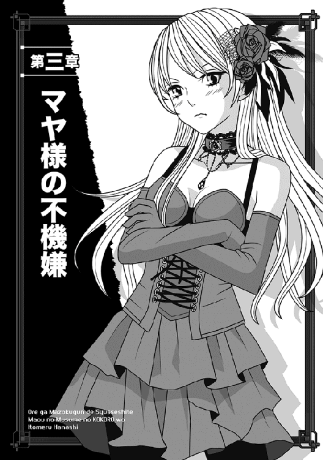
「うん？ ナオヤか？」
マヤを揺り起こす影に声をかけたが──相手はナオヤではなかった。
あの者は既に部屋の中にはいなかった。代わりに、見慣れたジャスミンの顔がマヤを覗き込んでいる。
部屋中見渡しても、ナオヤはいないではないか。
「どういうことか」
寝足りないのに加え、いるはずのナオヤがいないことに大いに気分を悪くした。マヤを放っておいて、一人で出て行くとは何事か!?
「それどころではありません、マヤ様っ」
ジャスミンがきっぱりと言いおった。
未だにマヤを名前で呼ぶのは、もはや父上を除けばこのジャスミンとナオヤだけだ。もちろん、マヤにとってはその方が嬉しいからだが......一体、何を慌てているのか。
「そう言えば、周りが騒がしいようだな」
コルセットドレス姿のまま起き上がり、マヤはマントのみを手早く着ける。武器は引き寄せの魔法でいつでも出せるから問題ない。
「当然でしょう。現在、全軍が戦闘準備中です」
「なにっ」
途中でマヤはジャスミンを睨みつけた。
「マヤは何も命令していないぞっ。誰が勝手にそのような命令を出した!? 首を刎ねられたいかっ」
「ナオヤ様ですが、問題がありましたか？」
ジャスミンは顎を上げて即答で吐かしおった。
いつも思うが、こいつもナオヤと同じで、時に生意気になるな......どうせナオヤの命令なら、マヤが怒らないと思っているのだろう。
確かにその通りなので、余計に腹立たしい。
「......む、ナオヤの命令か。では、それなりに理由はあるのだな？」
「もちろんでございます」
ジャスミンは手際よく語ってくれた。
それはいいが、ナオヤが一人で軍勢を率いて陣を出たという部分で、マヤはもう最高にむっとした。これが怒らずにいられようか！
「マヤが眠っている隙に、勝手に陣を離れたのかっ。なぜマヤに声をかけぬっ」
腹いせにベッドを蹴飛ばすと、少し加減を誤ったせいか、ベッドはそのまま壁まで吹っ飛び、バラバラになってしまった。
ふん、ヤワなものを運び入れおって。
「マヤ様を起こして許可を求めたら、まず間違いなく『では、マヤも一緒に行く』と仰ったからでしょう」
「当たり前ではないか！」
足早に部屋を横切り、マヤはドアを開けた。
「ナオヤが奇襲に赴くなら、参加しないわけがなかろうっ」
「ナオヤ様もそう思ったからこそ、『十分ほど後でいいですから、マヤ様を起こしてください』と仰ったのでしょうね」
「小癪なっ。ナオヤは、何かというとマヤを置いていこうとする。水臭い奴だっ」
部屋に残ったまま低頭して見送るジャスミンを後に、マヤはズカズカと本陣の前へ前へと出る。
マヤの怒鳴り声が聞こえていたのか、兵士どもが慌てて道を空け、たちまち大軍の中に道ができてしまう。
お陰で、実に楽に進めた。
マントの裾を翻して歩くこと数分、とうとう全軍の先頭まで出たが、彼方を見てもナオヤの姿はもちろんのこと、その側近の姿もない。
一番気に入らんのは、現在この陣地にミュウを始めとする女どもと──それから新任の無礼なローズとかいう女の姿が見えんことだ。特にミュウがいないのが腹が立つ。どうせ、みんなナオヤにくっついて行ったなっ。
「ミュウ達を連れて行き、マヤだけ置いて行くとは！ ふざけたナオヤめぇえええっ」
ギリギリと歯を食い縛っていると、背後で「ひっ」という声が聞こえた。
振り向けば、やたらと胸が目立つ、エルザという魔法使い女が蒼白な顔で後ろの方にいた。
「ほう、ナオヤはおまえは残したのか」
「あ、あああああたし、ですかっ」
「......他に誰もいまい？ 今のところは頭を割る気もないから、もっと前へ来るがよいっ。そこでは話ができぬ！」
「す、すいませんっ」
ようやく前へ出てきたエルザに、改めて質問した。
「なぜおまえは残っている？ ナオヤの側近だと思ったが」
「あたしもそのつもりでしたが──陛下の本陣警護に就けと言われまして」
失礼にも、気が進まなそうに言う女だ。
慣れているからいいが。
「本陣警護だと？ おまえが立っているのはもう最前線だ、愚か者」
「わかってますけどぉ。ナオヤの場合、本陣警護と命じたのは、つまり陛下をお守りしろという命令だと思います」
言われ、マヤはまじまじとエルザを見返した。
「......ふむ、そうか」
珍しく怒る気になれず、気持ちよく頷いたのだが。
しかしその直後、遠くからカシムの怒声が聞こえてきた。
「全軍、警戒！ 帝都の方角──東方の空より、飛行して接近する者ありっ。魔法使いどもは、すぐに迎撃態勢をとれっ」
「空からだと？」
マヤが振り返ると、確かに遠くの空より、ぐんぐんこちらへ接近してくる物体がある。大型の鳥のように見えるが、真っ黒で見たことがない魔獣だ。
魔界育ちのマヤが知らぬというのも珍しいが。
「た、大変っ」
遅れて気付いたエルザは、慌てて背後にいる自分の部隊に命令を出し始めた。
「炎──いえ、雷撃系でいいわっ。詠唱の準備を!?」
「対応が遅いぞ、エルザっ」
マヤは呆れて指摘してやった。
やはりこいつは、ナオヤがいないと駄目だな。まだ戦慣れしていない。
「飛行してくるあいつは、想像以上に速い。もう先頭のヤツはこっちへ降りてくる。集団詠唱はいいが、最初の奴には間に合わぬ」
「──きゃっ」
上空を見上げたエルザが息を呑む。
人の忠告を無視して詠唱に入ろうとしているようだが、もう遅いというのに。敵の飛行型魔獣は、急降下しつつある。
というより、どうもあいつはこのマヤを狙っているようだ。
「小癪な魔獣めっ。よい、マヤに任せておけ」
殊勝にもマヤの前へ出ようとしたエルザを、無造作に押しのけた。これでも一応は助けるつもりでそうしたのだが、これも勢いが余り、エルザは五メートルほど吹っ飛んでしまった。はははっ、スカートがめくれて、黒い下着まで晒してひっくり返ったぞ。
まあ、死ぬよりよかろう。
とにかく、エルザを押しのけた瞬間、頭上がすっかり黒い影になり、鋭いくちばしを持った魔獣はマヤの頭上から一気に降下してきた。
こちらをひと飲みにするつもりか、あるいは炎でも吐くつもりか──。
「いずれにせよ、相手が悪かったな！」
ああ、実感する......気分がいいっ。
マヤの悪い癖だ。戦での命のやりとりや、そこまで行かなくても勝負ごとになると、どうもわくわくして困る。
さぞかし今は、真っ赤な瞳をしていることだろう。
ナオヤがいれば、慌てふためいてマヤの前に出てくるのが見られて、少し気分がよかったのだが......まあ、いないものはしょうがない。
「代わりに、おまえで楽しもうぞっ」
マヤが手を上げて不可視の力を発揮すると、図体がデカいだけの魔獣はマヤのすぐ上で絡め取られたように静止した。
「グガアアアアッ」
狂ったように鳴いて暴れているが、マヤの力をふりほどくことはできない。それどころか、マヤはそいつを己の力で抑えたまま、手を下ろして巨体を眼前にまで引きずり下ろした。
見下ろされるのは、気分が悪いからな。
ボンゴ十人分はありそうな巨体を見て、周囲の味方は随分と引いたようだ。それでもエルザとやらは尻餅をついたまま詠唱に入ろうとしている。
ナオヤが旗下に加えただけに、最初に思ったよりは、骨があったようだ。
「へ、陛下ぁああっ」
遠くでカシムの声も聞こえたが、マヤはそちらを見もせずに叫び返した。
「よいっ。おまえ達は後から来る飛行魔獣を始末せよっ」
命令を下し、未だにマヤの鼻先で暴れ続ける魔獣をしげしげと観察してみた。......少なくともこいつは、魔界の生物ではないな。いや、ルクレシオンにもいるかどうか。
「グガァアアアアアアアッ」
観察するうちに、空中で静止したままのドラゴンもどきは、マヤを憎々しげに睨んだ。感情があるとは思えないし、あくまで本能的なものだろう。
だが、その目つきは気に入らんっ。
「中身をぶちまけて死ねっ！」
突き出した片手越しに遠慮なく力を解放すると、マヤの言葉通り、巨体が爆砕して内蔵を撒き散らした。
この手の力に対する抵抗力は、さしてないようだ。
地面にどさどさ中身が散らばって、ひどい有様になったな......頭を斬り飛ばした方がよかったかもしれぬ。もう遅いが。
遅れて接近していた残りの数体が羽ばたく音が近付いてきて、マヤはそいつらも後を追わせてやろうとしたが──。
待ち構えていたエルザ旗下の魔法射程に入ったらしく、奴らの黄色い声が響いた。
『ブルーサンダー！』
数十名の魔法使いによる雷撃系の魔法が、急降下してきたドラゴンもどきどもを一斉に襲う。絶妙なタイミングだったのと、数を頼んでいたお陰でことごとく命中し、連中は次々に落下してきた......やはり、本物のドラゴン種よりはヤワだったようだ。
それはいいとして、地面に叩き付けられて苦しむ魔獣どもから、一斉に兵士達が避難している。
いちいち言われんと動かん奴らだっ。
「何をぼおっと見ているっ。今のうちに、さっさとトドメを刺すがいい！ ここからは魔法使いの仕事ではないぞっ」
やむなく、マヤは命令を下した。
『は、ははっ』
活を入れてやったためか、ようやく全員が一斉に動き、墜落した魔獣達にざくざく斬りつけて仕留めた。
「被害はどうか!?」
「い、今のところは、他に敵の姿はないみたい──じゃなくて、ないようですっ」
嫌そうな顔で戻ってきたエルザが、腰が引けた姿勢で言う。
「そうか......むっ」
ぬめっとした液体がマヤの頬に滴り落ち、唇に垂れてきた。
そうか、エルザがマヤを見て怯える理由はこれか。
さっきのドラゴンもどきを破裂させたせいで、しこたま奴の血を浴びていたらしい。
好奇心でちょっとなめてみたが、恐ろしく苦くてまずい。
思わず顔をしかめて周囲を眺めると、見渡す限りの兵士が一斉にマヤから離れていくところだった。どいつもこいつも......この程度で、いちいち怯えるなというのに。
「ナオヤなら、タオルの一つも寄越してくれるだろうに......気が利かん奴らばかりだっ」
そこでようやく、マヤは気付いた。
......ナオヤ達が向かった方向で、剣撃と喊声が微かに聞こえる。
そうか、ナオヤもがんばっているようだな！
こらえようとしたが自然と笑顔になってしまい、マヤは伝令を呼んだ。
「向こうの様子が知りたい。誰か、ナオヤ達の戦況を見てくるようにっ。話せるようなら、ナオヤに援軍が必要か尋ねて参れ！」
「ははっ」
すぐに伝令が馬に飛び乗り、闇の向こうへ消えた。
これでずっと待つだけだったら退屈すぎたのだが、幸か不幸かそういう展開にはならなかった。
陣地の遥か後方、つまりマヤが最初にいた本陣の辺りで、兵士達が騒ぐ声がした。
ちょうどそこで後方から伝令が来て、マヤの前に跪く。
「東より、新たな敵部隊を発見！ こちらは歩兵中心で、急速に接近してきますっ」
「待て！ 先程も尋ねるつもりだったが、ナオヤは東方にも斥候を放っていたはずだ。どうして早めに見つけられなかった!?」
軽く兵士を睨むと、途端にガタガタ震え出しおった。
「も、申し訳ありませぬっ。ナオヤ戦士将は確かに大勢の斥候を出しておられましたが、東方に送った斥候は、まだ誰一人戻らぬままですっ。その件を報告しようとしましたが、戦士将は既に出陣されておりましたのでその」
「馬鹿者っ。ならば、なぜマヤに報告しない！」
「い、いえっ......そうは思いましたが、なにしろお休み中だったので」
「言い訳にはならぬっ」
危うく愛用の剣を引き寄せそうになったが、辛うじて我慢した。
今はこやつを斬っている暇などない。
「前衛のおまえ達はここを動かず、西から来るはずの敵に備えよっ」
伝令を呼ぶほどでもないので、マヤ自ら大声で前線の諸将に命じておく。
それから即、本陣へ戻るために駆け出した。
「ええっ!?」
後ろから、焦ったような声がして、バラバラと足音が追いかけてきたな。
「ま、待って待って、護衛のあたし達も一緒に行きますからっ」
エルザがそんなことをほざきおったが、マヤはあえて無視した。
役に立つのは否定しないが、今は何よりスピードが大事だ。
幸い、前線に来る時と同じく、マヤの行く手の味方は飛びすさるようにして道を空けてくれるので、戻るのも楽だった。
それとどうやら、敵は本当にマヤを倒すことのみが目標だったらしい。
既にマヤの目にはこちらへ駆けてくる敵部隊が見えるが、騎馬兵の数は少なく、九割以上は歩兵のようだ。
それは我が軍も似たようなものだが、しかし......あの歩兵はなんだ？
黒い鎧の上下というのも珍しいが、それを着込んでいる兵士も真っ黒な肌で、人型タイプ以外の種族に見える。しかし、獣人族ではないはずだ......影のような肉体に真っ赤な瞳の獣人など、見たことも聞いたこともありはせぬ。
数はおよそ千五百ほどだろうか。篝火が無数にあってわかりやすいためだろう......脇目も振らずに我が本陣へ駆けてくるな。
「馬鹿めっ。その人数で何ができる！」
東方を睨み付け、マヤは今度こそ愛用の大剣を右手に出現させた。
既にカシムが矢継ぎ早に命令を下し、二等戦士達に警戒態勢を取らせているが、ついでにマヤ自ら大声で命令を下してやった。
「全軍、聞けえっ。敵は千五百ほどに過ぎぬ。警戒を怠るのは論外だが、首は取り放題ぞ！ 各自、マヤの眼前で死力を尽くすがよい!!」
『ははあっ』
珍しく全軍一丸となって応じる声が聞こえた。
この呼吸を捉え、マヤは遠くにいるカシムに直接命じた。
「カシム、西はナオヤが行ったから、東はおまえに任せよう。旗下の部隊を率いて、奴らを踏みつぶして参れっ」
「ははあっ。有り難きご命令!!」
髭だらけの顔に満面の笑みを浮かべ、カシムは剣を引き抜く。
今気付いたが、こやつは馬上で指揮を執る気などさらさらないようで、戦士長のくせに歩兵の真似をして馬を降りている。
部下への合図代わりに剣を振ると、まず自分が真っ先に飛び出して行ったぞ。
「よぉーーし、皆の者、わしに続けえええええっ」
しかしなんだ......嬉しそうに叫ぶな、カシムは。
まあナオヤは別として、こういう時には実に役に立つ男かもしれぬ。
カシムの配下も指揮官に似たのか、随分と喊声が激しいな。落ち着いているのは、新たに加わった......そうだ、確かアランだったな。
とにかく、あの女っぽい少年くらいだ......なぜか同じく歩兵の真似事をして、カシムのすぐ後ろにいるのが気になるが。
カシムが配置したのか？ 彼はそこまであの男を気に入ったのか？
とにかく、カシム率いる我が軍も敵の軍勢も全く速度を落とさず、両軍はそのまま本陣の近くで激突した。
......敵の指揮官がどういう奴かは知らぬが、なんのつもりか理解できぬ。
戦力差は明らかなはずだと思うが。
たちまち、本陣にまで怒声と剣撃の音が聞こえてきた。ただ、喚き声が聞こえるのは、どうも味方のみだな。
敵軍は退くことを一切せず、ただひたすら突撃して味方に攻撃をしかけているようだ......まるで、以前地下道で出くわした、太古の人形兵士のように。
そう言えば、奴らは動きが速い上に狙いも正確だが、攻撃にためらいがなさすぎる。自分がやられそうになっても、全く頓着していない。
それどころか、首を刎ねられた者は、その場で黒い煙と化して消えているぞっ。なんだあれは！
「まさかっ。奴らは人工的に創造された兵士なのか？」
思わず呟くと、近くに控えた警護兵が顔を上げた。
「はっ。何か仰いましたか、陛下」
「いや、よい」
マヤは首を振り、左足の爪先で軽く地面を蹴る。このままマヤもあの戦の現場に飛び込み、思うさま暴れたいところではあるが......敵軍の狙いがわからぬ以上、命令を出す者が消えるのはまずかろうな、ちっ。
一人で悔しがっていると、カシムのすぐ後ろまで迫っていたアランが、なぜかマヤの方を振り向いた。
そこで唇の端を吊り上げ、ニイッと嫌な笑い方でこちらを見おった。
「なんだ、何が言いたい？」
呟いたその瞬間、マヤは息を呑んだ。
あやつが、よりにもよって前で戦うカシムの背中に斬りつけたからだ！
とっさのことでもあり、味方がいるはずの背後からの攻撃でもある。
カシムは寸前で殺気に気付いて振り向きかけたようだが、あいにく間に合わず、そのまま仰け反るようにして倒れ伏した。
あの傷は──かなり深そうだっ。
しかもアランは、近くにいた二等戦士を馬から引きずり下ろし、喉を切って瞬殺で倒してしまう。そのまま、今度は自分が馬にまたがった。
「なんの真似かっ」
マヤが思わず声に出すと、途端にアランがこっちを見て哄笑した。
驚いたことに、今の音量でもちゃんと聞こえたようだ。
それに、驚愕した味方はもちろんのこと、なぜか敵兵士どもも動かなくなっている。声を上げるでもなく、ただ誰かが時間を止めたかのように、黒い軍勢は動きを止めていた。
「そんなに驚くことかな、魔王陛下──いや、マヤっ」
静まり返った戦場に、アランの狂気を帯びた声が響き渡った。
「無理に召喚されて肉の盾で死ぬような思いを何度もしたんだ。最近はまだしも、召喚されたばかりの頃は、本当に毎日が死線をくぐる連続だった。僕の人生を破壊しておいて、忠誠を期待する方が間違ってる！」
「ほざくなっ」
怒りを抑える努力すら放棄し、マヤはアランを睨み付けた。
「その言い分は筋が通っているように聞こえるが、貴様は今、悲惨な生活から救ってくれたカシムを背後から闇討ちしたっ。戦士としてあるまじき卑怯な行いを、平然とやったのだぞ！ もはや、くだらん言い訳を並べる資格すらないっ」
「はっ」
呆れたようにアランが首を振る。
「成り立てとはいえ、仮にも魔王が『卑怯な行い』なんてセリフを吐くとはね......なんだか、がっかりしたよ」
失望したような顔であり、しかも奴はマヤを見て嘲笑してくれた。
「魔王なら魔王らしく、暴虐非道なやり方にも悪びれずにいればいいのに、中途半端な正義感を振りかざしてくれるね！ よけいにむかつくんだよっ」
途中から笑みを消し、吐き捨てるようにほざく。
「首を洗って待っているといい、マヤ。僕は必ず戻ってきて、あんたの細首をぶち落としてやるからさ。あとは記念に、塩漬けにでもしておくかな、あっはっは！」
「貴様ぁあああっ」
怒りに任せて呻いたマヤを無視し、アランは突然、夜空を仰いだ。
「なあ、聞いてるんだろ、誰とも知らない貴方っ。僕は鈍い魔界の連中とは違うよ。この兵士達が誰かの統一した意思で動いているのは、僕にはそばに来た瞬間にわかっていたんだ。ちゃんと感じたからね、視線を。多分貴方は、今もこの戦場を見ているはずだ──違うかい!?」
特にどこからも声は聞こえなかったが、その代わり、敵の黒い軍装の兵士達が全員赤く光る瞳をアランに向けた。
バラバラに動いたわけではない。
少しの遅延もなく、全員が同じタイミングでアランを見たのだ。
アランの言い分は置いて、誰かの指示を受けたような統一された動きだったのは確かだ。
「やっぱり、どんぴしゃりだった！」
アランは一人で得心したように頷く。
しかも、さりげない動きで馬を敵軍へと進めている。
「間違いなく、まだ見ぬ貴方はこの僕の声を聞いているし、認識しているんだね。少し前からずっと視線を感じていたのは、勘違いじゃなかった。ならば、僕の申し出を受けてほしい！ 貴方がどんな意図を持って魔界を狙うのかは知らない。知らないが、僕は貴方と共に魔界を滅ぼすために戦おうっ」
そこで少し間を置き、力強く言い切る。
「どうせ死を覚悟した身だ。後悔はないっ」
静まり返った中、アランの肩がぴくりと動いた。
「え、なに、なんて言ったのかな？」
驚いたように左右を見渡し、やがてまた哄笑を始める。
「ははは......あははははっ。ああ、聞こえる、聞こえるとも！ そうか、貴女は女性だったのかっ。こりゃいいや。いよいよやる気が──」
「戯れ言をほざくな、裏切り者めえっ」
ずんずん歩き出していたマヤは、途中で怒鳴りつけてやった。
我ながら大声だったので、この距離でも十分に両軍に聞こえただろう。
「ええい、カシムの配下どもは何をしているかっ。さっさと奴を斬れ！ 目の前で堂々と裏切り行為をしているのが見えないのかっ」
マヤが思うさま叱声を叩き付けると、ようやくぽかんとしていた味方が動き始めた。
「へ、陛下のご命令が下った！ カシム戦士長に代わり、アランを倒せえっ」
生き残りの二等戦士の命令に応じて、歩兵が今更のようにカシムを抱き起こしてその場から下がらせ、代わりに全軍が一斉にアランへ迫ろうとする。
しかし、なぜか時を同じくして再び敵軍も動き出し、アランを追い抜いてカシム軍の前衛とぶつかった......それも、あくまで無言のままで。
そのくせ、自分達の軍勢に紛れ込んだアランは攻撃しようとしない。明らかに異様な光景だったし、どう見てもアランめを庇っているように見える。
マヤはそれ以上の観察を放棄し、本陣に待機していた諸将のうち、足の速そうな馬に乗った二等戦士に命じた。
「そこのおまえ、今すぐ馬を降りるがよい！」
「は、ははっ」
泡を食って降りたそいつの代わりに、マヤがひらりと馬上にまたがった。
「そこで待っているがいい、アランっ。貴様の首、マヤ自らがぶち落としてくれる！」
「だ、駄目ぇええええっ」
すっかり忘れていたが、慌てふためいたエルザの声がして、魔法使いの配下を大勢引き連れ、マヤの進路上に立ち塞がった。
「行っちゃ駄目ですっ。殺されますよ！」
「マヤが奴に負けると言うのかっ」
「そ、そうは言いませんけどぉ。でも、陛下が自らが前線に立つのはやっぱり護衛としては反対──」
黙れっと言いかけ、マヤは辛うじて我慢した。
差し出口は片腹痛いが、しかしエルザの護衛としての立場から見れば、止めるのは当然なのだろう。マヤもそこまでわからず屋ではない。
それに、そもそも既に遅かった。
アランは未だに狂ったように笑っていたが、その声はどんどん遠ざかりつつある。
理由はさっぱりわからないが、敵軍がアランを保護したまま急速に退いていくのだ。しかも、敵の殿軍が死力を尽くして我が軍の追撃を阻み、完全に捨て石として踏みとどまっている。感情が全くない人形兵士でもないと、有り得ないことだった。
「みすみす逃がすのかっ」
マヤはアランの姿が遠ざかるのを、歯軋りして見送るしかなかった。
馬に飛び乗って追いかけたいのは山々だが、さすがにマヤ一人で敵全軍を追うほど無謀ではない。いずれ連中の本拠を突き止めて思い知らせてやるにしても、ナオヤが戻ってからのことだ。
ナオヤと相談して、もしも可能ならルクレシオンの方は一時放置して、新たな敵に専念するのもよかろう。
そこであの者の帰還を待つ間、カシムの様子を見に行ったが......こちらは一刻を争う状態だな。というより、物心ついてから戦場で過ごしたカシムだからまだ生きているが、そこらの二等戦士ならとうに死んでいるような傷だった。
アランの奴め......あえて、瀕死の状態になるように斬りつけおったな！
とにかく、既に治癒を始めている魔法使いに加え、ついてきていたエルザにもカシムの治癒を命じたが、「な、内蔵はみ出てるぅうううっ」などと涙目になっているほどで、今一つ頼りない。
これは正直、ネージュにやらせるのが一番だろう。
傷口からして、ネージュクラスでないと手に負えまい。
「陛下、ご報告がっ」
本陣に戻り、苛々して西の方角を見る間に、前線の方から伝令がやってきた。
「どうした？」
「先程、陛下が始末された空飛ぶ魔獣と、後から魔法使い部隊が落とした魔獣どもですが」
「ああ、潰したあいつか......それがどうしたのか？」
「その......ご報告すべきだと上官が言うのでご報告しますが」
「前置きが長いっ。さっさと言え！」
「は、ははっ。散らばっていた死体の群れが、すっかり消えております」
地面に額を擦りつけ、震えながら伝令が言いおった。
「なにっ。それはまことか？ 死体が回収されたわけではないのだな？」
「いえ、誰も近付いておりませぬ。ただ、死んだ後も内臓が蠢いていたので、皆が気味悪い思いで眺めていたところ......痙攣が止んだのを境に、全て煙のように消えましてございます」
「......ふむ」
ふと思い出し、マヤは魔獣の血がかかった頬を撫でてみた。
しかし、もはや完全に乾いていて、全くぬめりが残っていない。あたかも、最初から血など浴びてなかったように。
「つまり、今攻めてきた黒い兵士どもと同じか......完全に死滅すると消えてしまう」
不機嫌に呟くと、伝令がまだ平伏して震えているのに気付いた。
「わかった、報告ご苦労。下がってよい」
「ははっ」
すっ飛ぶようにして戻っていく伝令を見もせず、マヤはまた西の方角を遠望する。
いい加減、ナオヤが戻ってもよさそうなものだが。
今判明した事実を踏まえ、一刻も早く今後のことを話し合わねばな。
「......おっ」
長らく見ていた甲斐あって、ようやく西の彼方から軍勢が戻ってくるのが見えた。
とっさに、前線まで出迎えに行こうかと思ったが、さすがにそれはまずいだろう。多少は心配していたし、気持ちとしてはそうしたいところだが──今回は、そもそもマヤを置いて行ったのを叱責せねばならんからな。
仮にそういうことがなくても、さすがに出迎えに赴くのは、少し照れくさい。
それに今思い出したが、ジャスミンが「男はよくつけあがる生き物なので、ベタベタ接しすぎるのはまずいかと」などと、前に真面目な顔で忠告したことでもあるし。
そう考えて我慢していたが、どこかそわそわした様子だったのは隠しきれなかったようだ。本陣付きの武官どもが、首を傾げてこちらをちらちら見ている。
それはどうでもいいとしても......ナオヤの軍が我が陣に接近するにつれ、マヤはいつもと違う点に気付いた。
こういう場合、いつも先頭を進むナオヤの姿が、今回はなぜか見えない。
遠望する限り、軍勢の先頭にいるのはネージュとギリアム、それに妙にきょろきょろと我が陣中を見渡しているミュウだ。
しかも、ネージュとギリアムはどうもかなり疲弊しているらしく、表情に疲れが見える。
これは余程に激戦だったらしい。
待て──そういえば、嫌なことを思い出したぞ。
マヤは確か、ナオヤに援軍の有無を尋ねる伝令を送ったはずだ。その伝令が未だに戻っていない。
マヤが眉をひそめていると、陣地をやたらと見渡していたミュウと、マヤの目が合った。途端に、どういうわけかミュウの顔から血の気が引いて、こちらへすっ飛んできた。
それこそ、脇目も振らずにだ。
この時、既にマヤは嫌な予感がしていた。
当然、さっきの裏切り騒ぎの後なので、本陣もぴりぴりしている。たちまち護衛兵がミュウの前に壁を作った。
「止まれっ！ ここから先は陛下の本陣だっ。所属と用件を言えっ」
マヤは、職務に忠実な護衛達を下がらせようとしたが──。
なんとあの女は、一言の抗弁もせずにいきなりその場で跳躍し、このマヤの眼前まで跳んで来おった。
......軽く数十メートルはあったのだが......さすがに機械仕掛けの女だな。
「ぶ、無礼者めっ。陛下の御前だぞ！」
「よいっ」
さらに大勢の護衛兵がマヤの周囲を固めようとしたが、マヤはそれを制止した。今は礼儀云々は後だ。ナオヤの方が気にかかるっ。
「ナオヤの配下だ、その者に話させいっ。ミュウ、どうし──」
言いかけ、マヤは心の中にブリザードのような冷気を浴びた気がした。こんな気分になったのは、父上が亡くなったというデマを聞かされて以来のことだったはずだ。
というのも......いつも冷静なミュウが、なぜか今はひたすら動揺していたからだ。
正直にいえば、マヤはミュウの報告を聞きたくなかった。
しかし、ミュウは拝礼もせずに、マヤの胸ぐらを掴みそうな勢いで言ってくれた。
「あの、ナオヤさんはっ。ナオヤさんは、まだ戻ってないんですか!?」
「どういうことか......なぜそれをマヤに訊く？」
信じがたいことに、マヤの声は震えていた。
「ナオヤはおまえ以下、配下を引き連れて敵部隊に奇襲に向かったそうではないか。なのにどうして、マヤに居場所を尋ねる──ミュウっ」
仮にも魔王たるマヤが尋ねているというのに、この女は全く人の話を聞いていなかった。こちらの返事を聞くや否や、なぜか青い瞳が不自然に光ったかと思うと、今までにも増して激しい勢いで陣中を見回した。
その合間にぶつぶつと「レンジ内のユニット検索開始。身長及び推定体重が誤差５パーセント以内で一致する者を全てリストアップ......終了......さらにそこから、髪と肌の色が異なるユニットを排除......以上、該当者候補を全て検索。......違う違うっ、全員ナオヤさんじゃないっ。どこ、ナオヤさんはどこっ!?」などと、わけのわからないセリフを吐き出している。
「駄目、センサーの有効レンジ内にはいないわっ。これ以上範囲を広げるなら、自分が動かないと!?」
どうもナオヤを探しているらしいが、マヤに全然説明しないのが、ほんっきでむかつくぞ！
「ミュウっ。これ、マヤの質問に答えるのだ！ 奇襲に向かった後、何があった」
「ナオヤさんは途中で抜けました......貴女を助けに行くと言って」
「抜けただと!? それはどういう意味かっ」
きょろきょろするのをやめ、ようやくミュウがマヤを見た。
それでも、動揺丸出しで瞳が落ち着かない......馬鹿者、おまえがそんな顔をすると、マヤまで焦ってくるではないか。
「あのっ。私達が陣を出た後、戦闘があったんですよね？ 敵はもう撤退したのですか」
「おまえ、マヤの質問を無視して自分が質問するとは、よい度胸ではないか」
しまいには、いつぞや口を滑らしてしまった側室の話もなかったことにするぞっ──とむっとしたマヤだが、しかしこやつが冷静さを失うのは、唯一ナオヤ関係の時だけだ。
それがわかっているだけに、今は叱責は後にすることにした。
というより、とっととこいつを落ち着かせないと話にならん。
「敵は確かに攻めてきた。しかし我が軍と一当たりした後、そのまま裏切り者と一緒に撤退した」
「その方角はっ」
「......今、唾が飛んでマヤにかかったぞ？」
それほど真っ二つにされたいのか、この女はっ。
不機嫌さがどんどん増していくものの、それでも親切なマヤは、黙って東の方角を指差す。
本来、そちらは帝都マヤがある方向なのだが、本当にそちらに逃げたのだから仕方ない。
「飛行魔獣と歩兵、つまり空と陸からの両面作戦──あ、待たぬかっ」
ミュウの無礼さは、実にマヤの想像以上だった。
あの者はなんと、そこまで聞いた途端、いきなりまたジャンプしおったのだ。
大きく跳んで本陣の外に着地すると、その足で東を目指し、脇目も振らずに駆け去ってしまう。
その足の速いことと行ったら、見る見るうちに遠目も効くマヤの視界外に消えたことでも明らかだ。
『おおっ』
陣中の兵士どももさすがにざわめいた。
「あの人、ミュウっていうんだぜ。話したことないけど、すげぇえ」
「おお、俺も知ってるぞ！ 戦士将のコレなんだってな」
「おいマジかっ。いい加減なこと言うと、殺すぞっ」
「俺も憧れてたんだよなあ......スタイルいいし」
「おい、それよりさっきの話は」
「美人でスタイル抜群の上に、足も速いとかなんて女神──」
「黙れっ」
周囲に怒鳴りつけると、ようやくざわめきが止んだ。
どうでもいいが、さっきまでそばにいたエルザは、どうもいち早く遠くに避難したらしい。
「ミュウめぇえええっ」
マヤはエルザに腹を立てるより先に、本気で地団駄を踏んだ。
いつもは「帝王の威厳もあるし、以前より控えねばな」と自分を抑制していたのだが、今はそんな自制も消し飛んだぞっ。
「マヤだって、この場で走って探しに行きたいのだぞ！ それを自分だけとっとと行ってしまうとはどういう了見だっ」
──ではなくだっ。
「そんなに速く走れるなら、なぜマヤも連れていかないのだあっ」
その時、ようやく護衛兵に先導され、ギリアムがびくついた態度で戻ってきた。ネージュがいないのは、既にマヤの命令を受けた兵士に言われ、カシムの元に行ったせいだろう。
「ようやく来たかっ」
マヤはギリアムを見て、苛立って手招きした。
「ミュウでは話にならん、近こう寄れっ。奇襲に行ったと聞いたが、あれからどうなったのだ」
「いえ、ご報告は致しますが」
その場で跪いたギリアムは、薄く血の跡が残った顔を上げた。
「ナオヤ様はまだご帰還では──」
「その質問はさっきも訊いたっ」
マヤはにべもなく遮ってやった。
「それより奇襲に向かった後のことを、詳細に報告せよ！」
......マヤは久しぶりに、声を限りに怒鳴りつけていた。
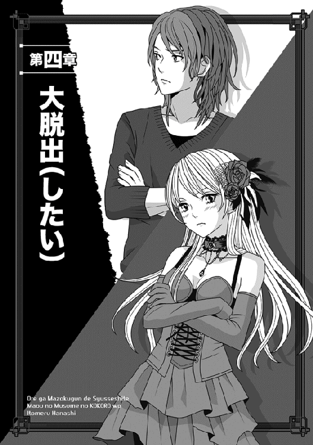
目を覚ましてまず感じたのは、妙によい香りだった。
しかもこれ、マヤ様の髪の香りとはまた違っているようだ。あと、何やら後頭部に妙な感触があるな。
「......なんだこれ？」
俺は寝ぼけ眼で手を伸ばし、自分が何を枕にしているのか触ってみた。
「──っ！ だ、だめっ」
「へっ」
声が聞こえた気がしたが......それよりなんかこれ、やけに手触りよくて生暖かいぞ。
不審を覚えた俺は、ぐらぐらする頭で考えつつ、さらに手を下に伸ばして触りまくってみる。途端に、「お、お尻に触るなってば！」と悲鳴みたいな声が聞こえ、俺はようやく目の焦点を合わせた。
「......えっ」
いやもう、まだ夢でも見てるのかと思ったね。
なぜなら俺の真上から見下ろすようにして、見覚えのある知人が見つめていたからだ......真っ赤になって。
「お、おまえ──レイバーグぅうう？」
途端に俺は、自分が何をさわさわと撫でているのか理解した。
つまり、枕と間違えてレイバーグの腰の辺りを撫で回していたらしい。道理で手触りいいはずだな。相手が生粋の男だと、こうはいかない。
──いやいや、そうじゃなく！
俺は慌ててふらつく身体で起き上がり、周囲を見渡す。
なんか、馬小屋かと思うような、暗くて冷たくてじめっとした場所だった。よくよく見れば鉄格子に囲まれてもいるので、どうも牢屋の中らしい。
だいたい、似たような鉄格子の部屋が、まだ幾つも並んでるしな。俺達の入った端っこ以外、全部空だけど。
俺とレイバーグはこの牢屋の隅に積まれた藁布団（藁溜まりの上にシーツかけたもの）の上に、二人して横になっていたようだ。
しかも、レイバーグの奴は両足を投げ出すように座っていて、どうやらその上に俺の頭を乗せてくれていたらしい。つまり、ある意味膝枕というわけ。
「感謝するけど──でも普通、膝枕って横に頭置かないか？ なんでおまえ、両足の真ん中に縦に俺の頭置いてたんだ」
「目覚めた第一声が、それか！」
無理もないが、レイバーグは赤い顔でぷりぷり怒っていた。
まあ、散々身体を撫で回された挙げ句にいきなり文句言われたら、そりゃ怒るだろう。
「ボクの元の世界じゃ、膝枕はこうするんだよっ。膝に横向きに頭乗せたら、全然気持ちよくないじゃないかっ」
「そ、そうか......いや、ごめん」
そう言われても、俺は縦だろうが横だろうが、膝枕なんぞには無縁だし。
「悪い、ちょっとタイム。俺、まだはっきり目覚めてないようだ」
未だにぐらぐらして眠気が兆す頭を振り振り、俺はまた座り込む。
何とか頭をはっきりさせようと努めてみた。お陰でかなり目が覚めてきたが、その代わり重要なこともどっと思い出しちまった。
そうだよ、俺はあそこで敵の汚い手にやられてっ。
「ちくしょうっ。あれからどうなった！」
再び跳ね起きてレイバーグを見下ろしたけど、こいつは粋な仕草で長い髪を背中に払っただけだった。またふわっとよい香りがしたが、どうも諦めモードなのが苛つくぞー。
「悪いけど、君の方の事情は知らない」
しかも、きっぱりと断言してくれたしな。
「ボクがここへ連れてこられたのは一昨日で、君は昨日の夜だよ。君はあれから丸一日眠っていて、ようやく目覚めたところさ」
「つ、つまり俺は今現在、敵の捕虜ってこと？」
「早く言えば、そういうことだね」
「遅く言ったってそうだろっ」
俺は思わず、駄々っ子みたいに両の拳を握りしめてしまった。
「おまえもいるってことは、おまえだって立場は同じだろっ。そもそも、仮にもドラゴンキラーの勇者が、あっさり捕まっていいと思ってんのかあっ。またしても、俺の美しい他力本願を台無しにしやがってえっ。今後の共闘をちょっと考えてたのにっ」
自分を棚に上げて、もう一息に文句を言っちまったね！
レイバーグは座り込んだまま、びっくり顔で俺を見上げてくれた。
「う、美しい他力本願ってなに？」
「それは置いて、おまえはどうやって捕まったんだ」
「今回は、不覚を取ったわけじゃないよ。人質を取られたんだ」
さすがに少し恥じらいの表情を見せ、レイバーグは語ってくれた。
「そっちの帝都に進軍途中で、ルクレシオンの帝都クレアールから、早馬が来たんだ。『謎の敵軍に王都上空に攻め込まれたから、急ぎ帰還せよっ』てさ」
なるほど......それで、こいつの一万二千を越える軍勢は、回れ右したわけね。
今になってようやく謎が解けた。
「それで、戻ろうとしたんだろ、当然？」
「もちろん」
レイバーグは頷きはしたものの、顔色は冴えなかった。
「可能な限り急いで戻ろうとしたけど、連絡を受けた時点では、もうそっちの魔界領内深くに入った後だからね。そうすぐには戻れない。しかも、帰還途上の翌日、帝都の方角から黒いドラゴンみたいな飛行魔獣がきて、その上に乗っていた女の子がボクに告げたんだ。......ここでボクが降伏しないと、陛下を始め、二人の王族の命はないと」
「......ちょ、ちょっと待て」
俺は片手を上げてレイバーグを押し止めた。
よくよく考えてから、おそるおそる尋ねる。
「それって......もうそっちの帝都クレアールは落ちたってことか？」
「......というより、帝都の城──クレアール城が制圧されたそうだ」
浮かない表情でレイバーグが言う。
「ボク達に急を告げる早馬を出した直後には、もう何もかも手遅れなほど押し込まれていたようでさ」
ふうっと悩ましいため息をつく。
「陛下だって、まさか空から大量の軍勢に侵攻されるとは思ってなかったから、そっちは全くの無警戒だったしね。あの翼のある魔獣モドキが大挙して襲ってきたとなれば、制圧されても不思議はない......軍の主力はボクが率いて国外にいたんだし」
「なるほど。そりゃ災難だったな」
俺は同情しつつも、どうも引っかかっていた。
忠誠心の厚いレイバーグにしては、随分と投げやりに見えたからだ。
「あのさ、あえて訊くけど──おまえ、今回はなんでそんなにふて腐れてるわけ？」
「ふて腐れてるように見えるなら、それは当たってるね」
レイバーグは自嘲気味に笑う。
相変わらず藁布団に座り込んだまま、動こうともしない。
「飛行魔獣に乗ってた、ユメとかいう名前の黒いドレスの女性が教えてくれたのさ。陛下は自分達が助かるために、喜んでボクの命を差し出したと」
「へっ!?」
いま一つ状況が飲み込めない俺のために、レイバーグは詳しく説明してくれた。
つまり、敵軍の指揮官だったその女性は、ルクレシオンの帝都クレアールにある城を襲って制圧した際に、ベルグレム王（本来は皇帝だが、大陸全土を統一するまでは、王を自称するそうな）と王族達をまとめて取り押さえてしまったのだが──。
敵のユメがまだ何も要求しないうちに、王自らが申し出たそうな。
『敗戦の責任としてレイバーグの首を差し出すから、どうか我々の命は助けてくれ』
──てな浅ましいことを。
「うわぁあああ......そりゃひでーな」
今回ばかりは、俺も本気で同情した。
どうも以前から、ベルグレム王はレイバーグをこき使うばかりで、大してその武功に報いてない気がしていたが......こうなると報いるどころか、内心じゃレイバーグを疎ましく思っていたのだろう。
「ボクはさ、自分が嫌われていることは知ってたんだよ」
レイバーグが寂しそうに言う。
「ただ、王子と王女の二人とは仲が良かったし、身分は宙に浮いたままでも最前線で使ってくれるから、信頼くらいはされているつもりだった。でも......結局はただ利用されていただけだったみたいだ」
「......むう」
これは否定しようにもできないな......なんか俺もそんな気がしてるから。
第一、そんな腐れ王とは、さっさと縁を切った方がいい気がするぞ！
「でも、一応おまえはそんな王のために、ユメとやらに降伏したんだな？」
「まぁね。でも、さすがに陛下のためじゃないよ。彼の息子と娘のためさ。あの二人は嫌いじゃないし、殺されてほしくない」
「うん、俺もセシール達は好きだ」
そこは賛成するぞ、喜んで。王子の方もまあそんな嫌いじゃないし。
「それで、降伏した途端に捕虜としてここへ連れてこられたんだけど......なんかもう、どうでもよくなってきちゃって」
仮にも勇者と呼ばれる男──いや女の子が、疲れたように俯く。
長い前髪が瞳を隠していて、今や哀愁漂う麗人って感じだ。少なくとも、戦士には絶対見えん。
腰の辺りのラインなんか、完璧女の子だし......いや、これは関係ないか。
「この世界に迷い込んでから四年、ルクレシオンに仕えて二年......本当に、裏切られてばかりだよ」
「おい、俺はベルグレム王とは違うぞ！ まあ、敵同士だったから、裏切るもなにもないけど」
俺は隣に座りつつ、強く主張しておいた。
「うん......君は数少ない例外だな」
レイバーグはゆっくりと微笑んだ。
「君のことは信頼している、ナオヤ。なにしろ、最後はボクを魔王城から逃がしてくれたしね。あの恩は忘れていない......あの後、マヤ殿に叱責されなかったかい？」
「されたけど、俺は慣れてるからいいって」
慌てて手を振り、俺はしんみりした空気を追い払おうとした。
というよりだ、もはや今の俺はレイバーグを女の子としか見られないわけで、ちょっと雰囲気作ると、いろいろ意識してヤバい。元々、異性相手にべらべらしゃべれるタイプじゃないしな。
「と、ところでさ！ 他にもいろいろ訊きたいことはあるけど、その前に思い切って先に申し出ておこうと思うんだ──つまり、早いトコ唾つけるという意味で」
回りくどかったせいか、レイバーグは小首を傾げて俺を見た。
「どういう意味なの？」
今のモロに女言葉だぞ、おい。
演技を忘れるなよ、レイバーグよぅう。
「つまりだ、おまえ......こっちにつく気はない？」
おぉ......息を呑んで固まっちまった。
長い前髪の下の瞳が、モロに俺を直視している。同じ黒い瞳なのに、こいつのようなイケメン──もとい、こういう綺麗な女の子の瞳は、どうしてこう全くの別物に見えるのか。顔の造作も別次元に整ってるしな。意識するじゃないか。
「それは......ナオヤ個人が......ボクを欲しているという意味なの？」
いや、なんでそんな囁き声で言うんですか、君は。
俺は思わず正座しそうになり、なんとか我慢した。
い、今のセリフって、もちろん「ナオヤ個人の臣下になれという意味？」って問いかけだよな？ いや、他に意味もないと思うけど。
「もちろん、そういうことになるな」
俺はどう説得するか考えながら答える。
「だいたい、マヤ様は直臣なんかほとんど取らないから、直接仕えてるヤツ自体が滅多にいないしさ」
滅多にどころか、実は本当の意味での直臣は、未だに俺一人かもしれん。
それ以前に、マヤ様の御代になってから貴族どもの粛清を思いっきり強行したお陰で、もう指揮官クラスの身分もガクッと減ってるな。
まともな能力があって、きちんと戦場で兵士を統率して戦っている人となると、カシムとあと二〜三人くらいじゃないかね。
その彼らだって、実はマヤ様の直臣じゃなくて、後ろでエラそうにふんぞり返ってるだけの、魔神将とかの臣下のはずだからな。
（カシムの場合、上官はこのレイバーグが帝都潜入時点で肉片にしちまったから、身分が宙に浮いてるけどな！）
「辛うじて残った雲の上の人だって、そろそろマヤ様が大ナタ振るって、整理しちゃう感じだし......まあ、これも粛清と同じようなもんだけど」
などと俺が説明したのは、一つには「文句もあるだろうけど、形としてしばらく俺の下で我慢してくれ」とこう、やわらかーく説得したつもりだった。あと、「おまえの実力なら、どうせそのうち俺を抜くんじゃね？」という、慰め半分と。
しかし、レイバーグは説明の途中で呆れたようにため息つきやがった。
「いや......どのみち、マヤ殿の臣下になる気は全くない。そうじゃなくてさ」
と途中で横向いて俺の顔を呆れたように眺め、
「君は女心のわからない人だな」
的確な寸評だけに、むかつくなっ。
「い、今更そんなこと言うなよ」
少なからずむっとして言い返してしまう。
「だいたいおまえ、ずっと男で通してきただろうに」
「別に好きでそうしてたわけじゃないもの。そうしないと、やたらと嫌な人が寄ってくるから、やむなくそうしただけ」
「まあ、おまえがちゃんと女の子の格好して、ドレスとか着るとヤバそうだものなあ。あっという間に誘拐されそうな気がする」
レイバーグを横目で見つつ、俺はしみじみという。
こいつはホント、エルザとは違ったタイプの美人だからな。多分、ミュウと同じで絵になる美少女ってヤツだ。
「そう？ じゃあ、女の子に戻ってドレス姿になろうかな」
レイバーグはなぜか小さい声で言った。
「えっ」
思わず声を上げた俺から目を逸らし、レイバーグは早口で続ける。
「まあそれは置いて。それなら、こうしないか？ 囚われの身となった、ルクレシオンの王子と王女の二人が解放される時点まで、ボクの返事を保留するということにさ。一応、それまではまた共闘でどうだい？」
「ああ、文句ないな、それで上等だ」
俺はほっとして何度も頷いた。
ようやく話が戻って嬉しい。
「それじゃ、まずあいつらについてわかってることを教えてくれ。誰が総指揮官で、どこから来たのかと」
「そんな長く話せなかったけど......でも、どうやらボクに降伏を迫った、あのユメとかいう女性が王に当たるらしい」
「へぇええええ、女帝か！ なら、マヤ様と同じだな」
「......ただ、あの女性はちょっと違うな......見かけは人間だけど、とても普通の人間だとは思えない」
「と言うと？」
だいたい、マヤ様だって全然普通の人間じゃないぞ。
そもそも人類ですらないし。
「奇妙な術を使うんだよ」
レイバーグは顔をしかめて言った。
「だいたい、率いてる軍勢......まあ、人造人間みたいなの？ アレのうち何割かは、彼女が自分で創造したようだし」
「えぇえええっ」
さすがに俺は呆れてレイバーグを見た。
「さすがにそれは、なんかの間違いだろ？ あの真っ黒い兵士、数からして半端なかったぞ」
「いや、もちろん創造したものじゃない兵士もいるよ。ルクレシオンから寝返った兵士の部隊もあるし。ただ、画一的な外見なのは、みんな人造だね。アレの材料はそこらにあるものであって、特殊な何かじゃないんだ。ただ、創造時に人の血を少し使うだけで。実際にボクは見て──」
言いかけたレイバーグがはっとした顔で話をやめ、そして俺もすぐに緊張した。
もちろん、どこかでドアが開く音がして、靴音が近付いてきたからだ。
二人同時に振り向くと、遠くから見覚えのあるセーラー服の少女がやってきて、俺達の牢の前に立つ。
立つというか、腰に両手を当てた仁王立ちだな......なんて偉そうな奴なんだ。
黒いロングヘアでヘアバンドした少女で、例のサクラとかいうとんでもない戦士である。格好はセーラー服なのに、腰に赤い鞘の刀を差してたりして、違和感がすげー。
「......そっちは、随分と美形なのね」
サクラは、まずレイバーグを見て、どうでもよさそうに首を傾げる。
「まあ、それはどうでもいいわ。あの子が捕まえた方はあの子が説得するでしょうから、わたしはあんたね」
今度は俺の顔をじっと見る。
「あんた、なんで人間のくせにこの世界の魔界にいるわけ？」
「その前に、おまえは一体、どういう事情なんだよ？」
俺はレイバーグを見習い、ふて腐れたように座ったまま、セーラー服少女を見つめる。「あと、なんで誰彼構わず攻める？ ルクレシオンと魔界の両方を攻めるって、そりゃこの世界全部を敵に回しているのと同じだぜ」
「それがなんか問題あるわけぇ？」
いきなり反抗的な態度で即答しやがる。
「わたし達はこの世界全てを征服して新しい時代を作るんだから、そりゃ二正面作戦だってやるわよ」
俺とレイバーグは思わず顔を見合わせたね。
こんな堂々と世界征服とか公言するヤツ、マヤ様以外で初めて見たな。
「......わかった、堂々たる侵略者だな？ しかし、なんだって......ええと、サクラだっけ？ サクラみたいなセーラー服の子が、その軍勢にいるんだよ？」
「あんた、あたしが前にした説明、忘れてるの？ 頭ボケてる!?」
な、なかなか口が悪い子だった。
「今生では、日本人として生まれたって言ったでしょ。でも、その前はこの世界でブレイブハートとして邪神退治をしていたこともあるわ。どちらかというと、異世界である日本へ転生したこと自体が、イレギュラーな事態だったしね」
「ああ......そう言えば、そんなこと言ってたな」
俺はこんがらかりそうになった頭を、整理しながら呟く。
「要するにアレだ。物語でよくあるように、日本から異世界へ転生したんじゃなくて、元々は異世界から日本へ転生してたわけだ......ところが、途中でまた元の世界であるこっちへ戻ったと。で、なんでまたこっちへ戻ったんだよ」
「正確には、こんな世界に戻る気はなかったわよ。本当に戻って制圧するつもりだったのは、もっと遥か昔の時代。ロクストン帝国という国が栄えていた頃ね」
「ま、またややこしいことを」
俺は弱り切ってレイバーグを見た。
「俺は聞いたことないけど、おまえはロクストン帝国って知ってる？」
「......傭兵時代にちらっとね」
おお、さすがにこいつは知ってた！
「確かにそんな大帝国があったらしいけど......でも、それって本気で太古の昔だよ。それこそ、二千年近くも前じゃないかな」
「に、二千年前だぁ？」
「......だから、戻るはずの元の世界に戻れなかったんだってば」
絶句した俺に、サクラは苛々したように言う。
「それより、そっちのハンサムは知らないけど、少なくともナオヤは元日本人でしょ？ それなら、魔界なんかに味方しないで、わたし達と一緒に戦いなさいよ。力を合わせて大陸を統一し、人間どもに思い知らせてやるのっ」
鼻息も荒く言ってくれるが......こいつなんか、言ってることおかしくないか？
日本へ転生したけど、訳あって元の世界へ戻ってみたら、なぜか二千年も過ぎてました......という部分までは、まあわかる。理由を全部省いてだけど。
だけど、どう見ても人間であるところのこいつが、なんでまた人間どもに思い知らせるとか言い出すんだ。
その辺を突っ込んで訊くと、この女がまた、堂々と吐かすんだな。
「わたしはこの世界の人間に恨みがあるからよっ」
きりきりと柳眉を逆立てて言う。
「他の仲間はあの子（ユメとかいう子か？）のために戦っているんでしょうけど、その点、わたしは違うわね。人間への恨みが動機だもの」
「じ、自慢にもならないことを、堂々と言うなって」
俺は顔をしかめて言い返す。
「あと、ブレイブハートってどういうことだよ？ そういや、それも聞き慣れない......というか、意味はだいたいわかるけど、こっちじゃ聞いたことないぞ」
「いいえ、昔は有名だったはずよ。それこそ、二千年前はね」
サクラは年頃の少女にしては凄みのある笑みで俺を見据えた。
「ナオヤにわかり易い言い方で教えてあげると、ブレイブハートっていうのは、世界を救う勇者のことよ。それも、邪神を倒すための使命を帯びた勇者」
「うおっ」
今度こそたまげて、俺はレイバーグに注目した。
いや、レイバーグ本人は首を傾げてるだけだったけど、俺個人としては驚きだ。だって、今のこっちで勇者って言えば、ルクレシオンの民衆的には、ほぼレイバーグってことになってるからな。
「嘘つけぇー......と言いたいところだけど、俺はサクラの腕を見てるからなぁ」
「もしかして、ナオヤはこの子に敗れたの？」
さすがに驚き顔でレイバーグが言いやがった。
「負けてないわいっ。戦ってる最中に汚い手で後ろから眠らされただけだっ」
唾を飛ばして力説したが、当のサクラが鼻で笑った。
「別に魔法使いの援護がなくても、最後はわたしが勝ってたわね。これでもブレイブハートの生き残りですからね！」
「やかましいっ。昔ならともかく、今の俺がそう簡単に負けるかああああっ」
実はそこまで自信なかったのだが、勢いで啖呵を切ってしまう。
「なんですってぇ！ 負け惜しみは男らしくないわよっ」
そうすると、サクラも気圧されてうなだれるような可愛い性格ではないわけで、たちまち辛気くさい牢屋の向こうとあっちで、ギャンギャン喚き合いとなった。
しかし、途中で捕虜と怒鳴り合うことの馬鹿らしさに気付いたのか、サクラはたちまち元のしかめっつらに戻り、俺達をぎらっと睨んだ。
「ふんっ。どのみち、味方になるか首刎ねるか、二つに一つだからっ。しばらくはこの黴びた牢屋で反省するといいわっ」
「あ、こら待てっ。まだ質問が──」
慌てて呼び止めようとしたが、既にサクラはずんずん歩いて立ち去った後だった。
すぐに、遠くで力任せにドアを閉める音がした。ここからだと見えないが、おそらくあの難儀な女が去った向こうに、外へ出るドアでもあるんだろう。
「......今の話、おまえわかったか？」
呼び戻すのを諦め、俺はレイバーグに尋ねる。
「あれだけでわかったら天才だね。でも、簡単に言えば二千年前に大勢力を誇った集団が、なぜか未来の世界であるこの大陸に現れたってことだろう」
説明の途中で、レイバーグはふと眉根を寄せた。
「そう言えば、傭兵時代に気になる文献を読んだことがあるよ。もしかしたら、あれと関係あるかも」
「じゃあ、そのことは後で聞くとして」
俺は今成すべきコトを思い出し、声を張り上げた。
「とりあえず、やることは決まったな」
「当然、脱獄だよね」
レイバーグも打てば響くように頷く。
「でも、策はあるの？ ここ、嫌なマジックシフトもあるんだけど」
何を期待したのか、頼もしそうに俺を見てくれた。
「おお、任せとけって！」
そこまで確たる作戦ができてたわけじゃないが、こうなると俺も引っ込みがつかない。そこで力強く言ってやった。
「これからさ、俺は全力でおまえを襲うんだ！ もちろん、女のおまえをっ」
「......え？」
レイバーグの笑顔が見事に強張った。
「い、意味がわからないんだけど」
「その説明をする前に──今更の質問で悪いが、ここって場所的にはどこら辺なんだ？」
「ルクレシオンと魔界の国境近くにあるちいさな城だよ。ルクレシオンの地方貴族の持ち城だけど、彼は既に降伏して敵に寝返っている」
「国境というと、北と南のどっち？」
「位置的に言えば、君がかつてボクの仲間だったリグルスと戦った森に近いね」
「そ、そうか」
危うく死にそうになった戦いと、かつての上官であるダヤンの死を思い出し、俺は一瞬だけ暗くなる。しかし、しゅんとしている場合でもないので、重ねて尋ねた。
「となると、ここは城の地下牢かなんかだな？ 元が城なら、牢番というか、食事を運んでくる兵士も当然ながらいるよな？ まさか、あのサクラだとか言うなよ」
さすがにあいつが相手だと、簡単には倒せない。
「いや、違うよ」
幸い、レイバーグはすぐに首を振った。
「むさ苦しい男の二人組。これは貴族の部下でも敵の部下でもなくて、雇われみたいだ。どちらも無精髭生やしてて、ボクは好きじゃないな」
いや、おまえの好みは訊いてない。
どうせおまえのことだろうから、好みもうるさいんだろうな。容易に想像できる。
「そうか、じゃあ作戦が上手くいったら、存分にぶち倒してくれ」
俺はようやく、手早く自分のやろうとしていることを説明した。
思った通り、レイバーグはいい顔をしなかったが、マジックシフトもあるというのなら、魔法を使えるこいつですら、尋常な手段では出られない。
結局最後は、渋々ながら賛成してくれた。
「し、仕方ないけど......そんなので引っかかってくれるかな？」
「そこは、俺とおまえの演技力が要求されるところだ」
俺は真面目くさって頷いた。
「今から俺は、食事を持ってくる兵士が来るまで（おまえをオカズにして）エロ妄想全開で本番に備えるからな。おまえも自分の正体は一時忘れて、か弱い女の子だと信じ込んでくれ」
ちなみに、オカズ云々の部分は心の中で言うに留めた。
さすがに恥ずかしい。
「ボクは元々、女の子だよっ」
レイバーグは膨れっ面で言った後、すぐに戸惑ったように俺を見た......横目で。
「だいたい、エロ妄想って何？」
「そのまんまだ......あまり詳しく訊くな。説明するとドン引きされるのが目に見えてる」
しかしこれは必要なことなのだ、と俺は自分を納得させた。
なにしろ、俺達を見た牢番が信じ込んでくれないと、どうにもならんからな。というわけで、俺は今から本番に備え、レイバーグを横目で眺めつつじっと待つ。
いざその時が来たら本気で演技しないと駄目だけど、俺はそんな都合よく迫真の演技できるほど器用じゃないし。小学校の学芸会だってあまりにもひどい演技で、モブの通行人役すら務まらなかったほどだ。
というわけで、今からその気になっておく必要があるので、もう遠慮なくレイバーグの胸をガン見し始めた。
当然、今からテンション高めるためであって、決していやらしい気持ちではない......ないはずだ。......しかしこいつ、改めて見るとなかなか胸もありそうだな。
「な、なんだかナオヤの目つきが......なんというかその......卑猥な印象を受けるんだけど」
空気を読まないレイバーグ──いや十六歳の女の子が、わかりきったことを言ってくれた。なんだか寒気がしたような顔で自分の身体に手を回す。
「おまえ、俺の話を聞いてたかっ。だから、音がしたら即演技に入るくらいの気合いがいるんだよ、俺は大根だからっ」
ガミガミと怒鳴りつける。
「これも脱獄のためなんだし、我慢しろって。本番じゃ、そのブラウスみたいな白いシャツも豪快に破くからな。ぜひとも素に戻って盛大に悲鳴上げてくれ。ちょっと胸に手が触れるかもしれないけど、気にすんな！ くれぐれも本気で取り乱すなよっ」
「無茶言わないで」
体育座りの状態からさらに身を縮め、レイバーグが即座に抗議する。
「そりゃ気にするし、取り乱すよっ」
しかし時既に遅しで、またしても通路の向こうでドアを開ける音がした。
「わっ、もう食事の時間だったのか」
レイバーグが小声で呟いた途端、情報通りに足音がする。
俺はその場で深呼吸してから、覚悟を決めた。
ここを脱出してマヤ様の下へ戻るためだ。この際、遠慮してる場合じゃない。
本気になるには、イマイチ妄想分が足りないけど、もう演技で何とかするしかないっ。
「ぎゃははっ。ねーちゃん、まさか女だったとはなあ!? ちょっと俺の前で脱いでみろやああっ」
多分、酒が入ったエロオヤジはこんなセリフを吐き出して女襲うんじゃないか？ という想像の下、俺は喚きながらレイバーグに襲いかかった。
一瞬もためらわなかった。
「ちょっ、な、ナオヤ!?」
こいつがまた、二枚目（に見える美少女）のくせに、俺を上回る大根役者ぶりを発揮して、まだ声音使ってしゃべってやがる。
驚いた目つきも、まだまだ全然、いつものままじゃないか！
むかついたせいか、シャツにかかった俺の手に、必要以上に力が入ってしまった。
結果、予定した以上の豪快さでシャツがびりびりに破け、その下の包帯みたいな白い布が丸見えになった。
どうやらこいつ、胸の膨らみを出さないために、わざわざ包帯みたいな布きれを胸に巻いて押さえつけていたらしい。
それでもまだ膨らみがわかるというのは、割と凄くないかっ。
「ええいっ、けしからんっ。こんなモン、着けやがってぇええええっ」
怯えた顔のレイバーグを無視して、俺はその包帯みたいなのも豪快にむしり取ろうとする。
「や、やめっ。目が本気だよ、ナオヤ──いやあああああああっ」
おお、迫真の演技だな、レイバーグ！
途中から、悲鳴がすっかり女の子だぞおっ。
俺は思いのほか演技が上手く行ったので、調子に乗っていたかもしれない。
時代劇の悪代官が、手込めにするねーちゃんの着物の帯を持って転がす、あの要領である。あれそっくりのやり方で、包帯だか晒しだかの端っこを持って、豪快に引っ張ってやった。
すると、まさにその時代劇そのものに、レイバーグの身体がコロコロ転がって胸がほとんど露わになっちまったじゃないか。
「うわっ」
さすがに正気に戻り、俺は慌てて身を離そうとしたんだが、こういう時に限って本来の鈍くささが蘇るわけで──結果的に俺は、何もない場所で蹴躓いて、レイバーグの上に倒れ込んでしまった。
しかも、バランス取ろうと慌てて右手で支えたその真下が、レイバーグのおっぱいの上だったという......つまり、半裸のこいつを押し倒し、胸をがっつり掴むという暴挙に及んでしまったわけだ。
後で話を聞いたら、百人が百人とも「わざとだろうがあっ」と弾劾して当然の仕打ちである。ていうか、立場が逆なら俺だって絶対に事故だなんて信じない。
「い、いやごめんっ。これはその──」
死体置き場の死体みたいに固まって目を見開くレイバーグに向かい、俺はゴニョゴニョと言い訳などする。
ていうか、背後がヤケに静まり返っているけど、牢番の狼狽の声はどうしたよ!?
止めるために慌てて入ってきてくれないと、計画そのものが崩れるんだけどっ。
そこに思い至って、俺は遅ればせながら振り向いてみる。
なんと、予想外の光景がそこにあった。
つまり......黒い下地に白いラインの入った、いつものバトルスーツ姿のミュウがいて、涙目で両手を口元に持ってきていたという......。
しかも、今にもへたり込みそうなほど内股になり、震えている。
正直、あまりこの子が見せないような動揺ぶりだった。
「......ナオヤさん」
レイバーグと同じく固まった俺に、ミュウが震え声を出す。
「私には手を出さないのに、そんな......合計しても三時間分も会ってもいないような人と......性交渉を持つんですか」
「いやいやっ！ これは違う、違うからっ」
半ば振り返った姿勢の俺の下で、おっぱいが──じゃなくてレイバーグが喚いた。
「なんでもいいから、わたしの胸から手を放してぇーーーーーっ」
「わっ、ごめん！」
そういや、ずっとよい感触を楽しんだままだった！
俺が慌てて跳ね起きると、レイバーグはたちまちさっと両腕で胸を隠す。まあ、今更そんなことしたって、もう全部見た後だけど。
多分、余裕で高画質脳内再生できるほどに。
......そんな後の楽しみは置いて、今はこの場面を何とかすべきかもしれない。女の子二人分の非難の視線を浴びて、俺は今頃になってだあっと脂汗をかき始めていた。
二人に言い訳して、曲がりなりにも納得してもらうに当たり、俺は一生分の忍耐を使い切った気がする。最後には一応、二人ともわかってくれたようだが......内心でどう思ってるか知れたもんじゃないな。
だいたいレイバーグなんか最後にぽつっと、「ナオヤに胸揉まれた」と涙目で呟きやがったしな。いや、揉んでないし！
ないけど......力が多少入ったかもしれない。
感触を思い出すとヤバいので、俺は何食わぬ顔で逆にミュウから事情を訊いた。
話を聞けば、意外にもこの子は独自行動を取って、一人で俺を追ってきたらしい。
「当初は東へ撤退したという敵を追いましたが、でも最初に現れた敵が北方で住人に目撃されていたことを思い出し──」
「それで急いでこっちに来たと？ でも、よくここだとわかったな」
「全力疾走で国境まで来たところで、その辺りを警戒中の人間の小部隊を見つけ、問答無用で倒して情報を入手しました。彼らは雇われの傭兵で、この支城にレージ軍の拠点の一つがあるというので、早速侵入したのです」
「レージ軍!?」
俺とレイバーグは、二人して素っ頓狂な声を上げる。
「こいつら、そんな名前の軍勢なのか？」
「わかりませんけど、傭兵達は指揮官クラスの男に、『そう呼ぶように』と言われたそうです」
「ここの一番上って、ユメって名前の女帝だと聞いた気がするけどな」
「確かにそのユメという人が総指揮を執っているらしいですけど、陰の支配者的な人が別にいるそうです。その人の名前がレージというらしいです」
「陰の支配者て......ゲームのボスキャラじゃないんだから！」
よくわからんが、あのサクラみたいな凶暴女も従ってるくらいだからな。きっとそのレージとやらは雲をつくような大男で、顔中が傷だらけのマッドな奴に違いない。
「よ、よし」
俺は武者震い──というのは建前で、内心では大いにびびりつつ、立ち上がった。
「とにかく、とっととここを出ないと。ミュウが去った後どうなったかも心配だし。ミュウ、外はどうなってる？」
「この地下牢までは、さほど障害もなく来られました。ただ、途中で何名かの雇われ兵士には眠ってもらいましたが」
「なら、今のうちに俺達も逃げよう」
ミュウはしっかり頷いてくれたが、レイバーグの返事がない。
一応、俺に応じて立ちはしたけど、どうも心ここにあらずの様子だ。
「おい、トイレなら俺だって我慢してんだよ。どうしてもって言うなら、お互いに隅っこの方でやるか？」
レイバーグはすぐには返事をせず、なぜか俺の顔をしげしげと眺めた。
そのうち一人で赤くなり、元通りに着込んだ服の胸を押さえてしまう。
「ああ......ナオヤの顔見る度に、胸を揉まれたことを思い出しそう」
「だから、揉んでないって！」
わざとじゃないんだから、いつまでも引きずるなっ。
流れを断ち切るためにも、俺は率先してミュウが開けてくれた牢を出ると、さっさと地下牢の通路を進むことにした。
この地下牢の入口は、突き当たりの壁際にあった石段を何十段か上がった先にあるらしい。幸いにして俺とレイバーグの武器は、その石段の下に置かれた空樽に、無造作に突っ込んであった。
しかも、床を掃くホウキと一緒に。
「ひでー扱いだな......まあ戻ったんだから、文句ないけど」
ぶつくさ言いながら、俺は早速、刀を回収する。
この刀はマヤ様から拝領したものなので、無くすとシャレにならん。俺自身が愛着あって手放したくないというのもあるが、「敵に奪われました」とかマヤ様に報告した日にゃ、何言われるかわかったもんじゃない。ぶっ飛ばされるからな。
レイバーグもほっとしたように、例の刀身の長い刀を腰に装着している。こいつの武器も確か魔剣だったし、もはや鬼に金棒だろうな。
「そういや、牢番はどうしたの？」
俺がミュウに訊くと、彼女はあっさり言った。
「気絶させて、階段の上に寝かせてきました。しばらくは目覚めないと思います」
「おお、相変わらず有能だなあ。じゃあ、脱出の最短距離は？」
「一階に出たところで廊下を進み、建物を出てまっすぐ裏門の方へ向かうのがいいと思います。もちろん、裏門にも警備兵はいますが、私がだ......抱いてジャンプすれば、越えられるかと」
「な、なるほど」
いいけど、なにも「抱いて」の部分で赤くならんでも。この子も人間臭くなったなあ。
釣られて俺まで照れるじゃないか。......実際に少し頬が熱くなってそっぽ見てると、なぜかレイバーグが俺とミュウを見比べて眉根を寄せた。
「いつも思うけど、ナオヤの周りって美人が多いね......わざとなの？」
「お、おまえはマヤ様かっ」
反射的に憤慨して叫んだね。
「似たようなこと言うなよっ。んなわけ、ないだろ！」
「でも、金髪で胸の大きなローズさんは、ナオヤさんが選びましたわ」
ミュウがふいに口を出した。
それも、すげー不満そうに。
「胸が大きいのは関係ない、関係ないって！」
なぜか俺は、こんな場所でいらぬ弁解をしてしまう。
「あれはギリアムの身内だし、同じく有能だし、最初は目の届くところにいた方がまだ生存率高いかなと」
「でも......あの人の胸を見る時は、他の部分を見る時より、ナオヤさんの視線固定時間が少し長く──」
自分の胸を見下ろし、ミュウが哀しそうに言いかける。
「はい、ストップ！」
レイバーグの目つきが段々険悪になってくるのを見て、俺は慌ててミュウを止めた。
「俺だってまだ男の子だし、そりゃ女の子の胸くらい見るよっ。今はそれより脱出をだな」
「ボクなんか、胸を直に触られたしね......大きくなくて悪かったね」
人の言い訳を遮って、レイバーグがまた吐かしやがる。
君ら、心が狭いよっ。
ちょっと胸に関心持ったり触ったりするくらい、大目に見てくれよ。それと、ミュウもレイバーグも別に小さくないだろ......普通よりは、十分上だと思うぞ。
そうは思ったが、言えるようなことでもないので、もう俺は黙って先頭切って石段を上がり始めた。
なんでもいいから、とっとと逃げよう。
長い石段を最後まで上がると、ミュウの言う通り踊り場みたいになっている平坦な場所に、無精髭の兵士が二人転がっていた。
そいつらは無視して、俺はそっと頑丈な鉄製のドアを開ける。
左右を見たが、今は人の姿はない。壁に松明の明かりが等間隔であるので、別に歩くのに不自由はないな。
ただ、天井のあちこちに妙な切れ込みがあるのが気になるが。
「あれは廊下の天井に収納した鉄板を、下へ落とすための切れ込みのようです」
俺の視線で気付いたのか、ミュウが背中に覆い被さるようにして言う。胸が当たるんだけど......わざとじゃないよな、まさか。
「そ、そりゃまたなんで──あ、もしかして防御のための隔壁みたいな意図か？」
「おそらくは」
「そうか......そんなの落とされて逃げ道塞がれたらたまらんから、早く出よう」
振り向いて告げると、ようやく二人とも頷いてくれた。
それで、三人揃って廊下に出ると、ミュウの先導でびくびくと歩き始める。いつ人が来るかわからないからだが......これがまた、ものの二十メートルも歩かないうちに、ミュウが立ち止まった。
「階段から誰か下りてきます、人数は二人っ」
曲がり角を指差してミュウが囁く。
ここからは見えないが、あの角を曲がったところに階段があるってことだろう。まだ足音すら聞こえないけれど、俺はもちろんミュウを信じた。
この子の場合、距離があっても見破るからな。
「くそっ......この際、そいつも眠らせてしまうか」
「でも、一人は足音からして女性ですよ？ いいんですか？」
俺が女に弱いのを知っているミュウが、心配そうに告げる。
「それとも、なんなら私がやりましょうか？」
「じょ、女性っ!? いや、待って」
この時、俺が速攻でサクラを思い出したのは、言うまでもない。
もう一人が誰かにもよるが、さすがにあの自称ブレイブハートは強敵だ。だいたい、やり合ってる間にドカドカ他の兵士も寄ってくるだろう。
「いや、駄目だ！ それはやり過ごす方がいいと思う。と、とりあえずあそこへっ」
俺は一番手近なドアを見つけてそっと開けてみた。
幸い、中は空の客間っぽかったので、大急ぎで三人ともそこへ避難した。
「みんな、気配を消せよ？ サクラは鋭いからな」
「もちろん！」
「ご安心を」
レイバーグもミュウも頼もしい返事で、俺は安心した。
これがヨルンとかなら、まず気配を消すこと自体が無理ゲーだからな。
で、客間で足音が通り過ぎるのをやり過ごそうと思ったのだが......なんと、問題の足音はこの部屋の前で止まりやがった。
俺達は慌てて部屋の奥に退避し、三人揃って唯一の隠れられそうな場所、つまり壁際の暖炉の中へ飛び込む。
馬鹿みたいにでっかいサイズなので、腰を屈めれば、三人とも辛うじて死角に隠れられる。まあ、壁際まで来られたら、そこで中が見えてしまうから、もう終わりだけどな。
ささっと隠れるにあたり、足音を立てず、そして気配も殺したまま実行できたが、本当にギリギリだったね。
なぜなら次の瞬間にはドアが開いて、聞き覚えのある声がしたからだ。
「レイモンが前線指令としてここに来てるんだから、あのヒューネルって奴は、帝都クレアールで待機中なのね？ じゃあ、レージは？」
忘れもしない、サクラの不機嫌そうな声がした。
「あの者はユメ様と一緒に、南の国境沿いにある砦だ。それより、おまえはいい加減に、ユメ様のことを様付けで呼ばぬかっ。我らの主君なのだぞ」
聞き覚えのある声が言う。
俺が危険を冒してそっと覗いたところ、かなり古いタイプの裾の長い上着とクラバットをした、白銀の髪のイケメンがいた。
ああ、俺が奇襲に出た時、サクラのそばにいた奴だ。
そういや、レイモンって呼ばれてたな。確かめた後、俺は即座にまた顔を隠す。こんなところで大立ち回りをするわけにはいかんしな。
「わたしはあくまで自分の意思で応援してるだけで、別にユメを主君と思ってないもの。だいたい、本当の主君はレージでしょうに」
「ユ、ユメ様はそう仰るが、私はまだ納得してないっ。だいたい、あれはただの人間ではないかと、今でも疑っている」
「ただの人間だろうと、ユメが自分のパパで主君だって言うなら、あんた達下っ端は、従うのが筋じゃないの〜？」
もう、聞くだにむかつくサクラの声である。
こいつはどうも結構フリーな立場らしく、軍勢の司令官クラスのレイモンを、からかっているらしい。
途端に大きく息を吸い込む音がして、レイモンが押し殺した声を上げた。
「もうよい！ 闇の軍勢を支えるダークピラーともあろう者が、元ブレイブハートと言い争うほど、馬鹿げたことはない。サクラに意見を訊きたいのは、こっちについたあの若者のことだ。あの者、簡単に魔界を裏切りおったが、本当に我らに協力する気があると思うか？」
「そんなこと、わたしにわかるわけないでしょ！」
「喧嘩越しでそう言わず、少しはサクラも悩まぬかっ」
いや......二人の言い争いは置いてだ。
魔界を裏切っただとー......誰がぁ？ え、それって誰の話だ？
俺は暖炉の中で、思わずミュウの顔を見つめる。しかし、ミュウも首を傾げていた。まあ、俺が戻ってないのを知ると、すぐに陣を離れた（それも問題あるな、しかしっ）らしいから、知らなくても無理ないのか？
しかし......裏切るような奴なんか、いたかぁ？
俺がぞわぞわした気分で考え込んでいる間に、二人の会話はどんどん進み、やがて根負けしたレイモンが「しばらくは様子を見るしかあるまい」となって、話は唐突に終わった。
靴音がまた遠ざかっていくが、部屋を出る前に仕返しのようにレイモンが訊いていた。
「サクラの方こそ、あの若造をどうするつもりだ？ こっちにつかないのなら、とっとと斬るしかないだろうに」
「わたしはこう見えて気が長いのよ。転生しても恨みを忘れてないほどだし！」
「説得を中断するなら、今はルクレシオンの兵士達を検分してくれ。こっちにつきたいと申し出る者が、予想以上に多いのだ」
「人間はホントに度しがたいわねえっ。裏切り者ばっかりじゃない！」
鼻息の荒いサクラの声を最後に、二人は無事に部屋を出て行った。
三秒ほど待ち、期せずして三人とも大きくため息をつく。
「いやぁ、どきどきしたな」
「......レイモンとやらも、相当な実力者のように思うな......強い魔力を感じたよ」
「おい、迂闊にフラグ立てるなよ」
俺はぞっとしてレイバーグに文句をつけた。
「あの女勇者だって、たいがいやっかいそうなんだぞ。強敵は、もう十分過ぎるほど間に合ってんだよ！」
小声で唸り、それからまた呟いた。
「しかし......裏切ったって誰だ」
「今ここで考えてもわからないだろうし、とにかくこの支城を脱出しよう」
「それもそうか」
俺もそこは異論なく賛成し、ミュウに頼む。
「じゃあ、また案内頼むよ」
「はいっ」
ミュウがドアを開けてそっと廊下に戻り、俺達も彼女の後に続く。そのまま、当初の目的通り、石廊下を進んでいく。ところが、突き当たりのごつい扉が見えたところで、いきなりミュウがびくっと肩を動かして振り向いた。
「ど、どうした──てまさかっ」
「気配がっ」
センサー装備のミュウに遅れはしたものの、俺とレイバーグもすぐに気配に気付いた。
二人して焦って振り向いたが──。
いつの間にか廊下に立っていたそいつは、別に敵ではなかった。
それどころか、ある意味では俺と唯一、同じ立場の仲間かもしれない奴だ。
色白のどこか物静かな優男って雰囲気なんだが、見かけを裏切るしぶとさで、肉の盾に放り込まれて生き残った奴でもある。
もはや、俺とあいつしか召喚組は残ってないらしいが。
「おぉー、確かアラン!?」
小声で呼ぶと、ちゃんと応えてくれた。
「お久しぶりです、戦士将」
アランも微笑して片手を上げる。
なんとまあ、助けに来てくれたのか!? これは幸先いいなっ。
「ちょ、ちょっと待ってください、ナオヤさん。あの方、一人でここへ来たなんて、有り得ますか!?」
「そうだよ、ナオヤっ。どう考えても、妙じゃないかい？」
アランをよく知らない、ミュウとレイバーグが俺の袖を引っ張ったが、俺は笑って手を振った。
「いやいや、あいつなら有り得る有り得る。なにしろ、肉の盾で生き残るくらい根性入ったヤツだからなぁ」
別に真の実力を知っているわけでもないのに、俺は半ばむきになって言ったね。
だが、実力を見たことなくても、あそこで生き残るのが奇跡に近いのは誰よりも知っている。俺の場合、本当に奇跡というか悪運かもしれないが、そんな奇跡や悪運がそこらにゴロゴロしているわけないさ！
「戦士将、ちょっとこちらへ」
アランがにこやかに手招きした。
「いやいや、俺のことはナオヤって呼んでくれよ」
当然ながら、俺はさしたる警戒もせず、笑顔でノコノコと前へ進み出た。
釣られて、後ろの二人もそれに続こうとしたんだが......途中でアランのヤツが、廊下の壁に手を伸ばす。
なぜかそこの窪みというか、ヘコんだ部分にある「何か」を操作した。まあ、レバーみたいなものか？ その瞬間──いきなり俺の背中でドガッと凄まじい音がして、緩んだ顔で歩いてた俺は、飛び上がりそうになった。
「な、なんだよっ」
振り向くと、なんと俺とミュウ達の間に、でっかい鉄板みたいなのが落ちてるじゃないかっ。こ、これは確か、天井の切れ込み部分に収納されてたヤツ？ 俺自身が防御のための隔壁か？ とか予想してたようなっ。
後ろを塞ぐ鉄の壁に呆然としてたら、次はいきなり背後で殺気がした。
底冷えするような本物の殺気であり、人がバタバタ死ぬ戦場でも、滅多に感じないほどの凄まじいものだった。
「──っ！」
こういう時、俺の身体は勝手に反応することがあるのだが、今もそうだった。
振り向く動作すら惜しみ、俺はその場から大きく横に跳んだ。
そっちに逃げる根拠など何もなかったのだが、勝手に身体が反応したんだから、しょうがない。
しかしその反射行動は、今回も俺の命を救ったようだ。
なぜならまさにその瞬間、背後からとんでもない速度で剣撃が襲ってきて、すぐそばを掠めたからだ。おそらく俺が振り向く手間をかけていたら、間に合わずに斬られていただろう。今だって、袖の辺りがすっぱり切れてるほどだし！
「な、なんっ」
「あっはっは！」
俺の焦った声と、アランの狂ったような哄笑が、廊下にガンガン響く。
なんで笑えるのか知らんが、大振りに振り切った刀を引き、アランが再び構え直す。女性のような繊細な顔は狂気に歪み、綺麗に分けた髪が乱れて目にかかっていた。
「嬉しいな、一撃で死ななくてぇええっ」
アランは哄笑しつつ、なおも斬撃を繰り出してくる。
こっちの頭を真っ二つにするような勢いがあり、これも反射的に抜刀した俺が、辛うじて受けるのに間に合ったほどだ。
隔壁じみた鉄壁の向こうで、微かにミュウとレイバーグの叫ぶ声がしたが、構っている場合じゃないっ。
いま俺の目の前にいるのは、どう見ても俺と互角かそれ以上の剣士なのだっ。
「心配してたよ、戦士将──いや、ナオヤっ。実のところ、僕はあんたのことを聞いてから、ずっと心配だった」
慌てふためく俺とギリギリ鍔迫り合いを演じつつ、アランが唾を飛ばす。
初対面の時に見た澄んだ瞳は、見る影もなく血走っていた。
「もしかしたら、あんたがあの呪われた肉の盾で生き残ったのは、マヤとかいう女に贔屓にされたお陰だったのかなってね！ 魔王城の十三階で初めて会った時、未だに正気を失っていないあんたを見て、僕は本当にそれが心配だった。でも、違ったよ！ そんなズルじゃないや。あんたは本当に強いっ。それだけは嬉しいなあっ」
「──っ!? くそっ」
ふっと力が緩み、アランがわざと後退しやがった！
今の今まで、力比べのように刀と刀で押し合っていた俺は、たまらずよろめいてしまう。その隙を逃さず、再び風のようにアランが踏み込んでくる。
というか、本当に風切り音がしたぞ。こいつ、凄腕なだけじゃなくて、動きも速いっ。
「はあああっ」
「くっ」
受けた手が痺れそうになり、俺はよろよろとよろめく。
向こうは嬉しそうに笑いっぱなしだ。
「そうそう、その調子だ、ナオヤ！ 肉の盾で生き残った底力を出してくれっ。そして、少しは僕の溜飲を下げてくれよっ。僕とまともに斬り合える奴って、もうほとんどいなくなったからさあっ」
「お、おいっ」
そう広くもない廊下で何度も斬り結びつつ、このアランは平然と話しかけてくるのだ。殺し合いなど日常的にやっていたせいか、全く死の恐怖を感じていないように見える。
「はははっ。やり合えて良かったよ、ナオヤ！ 君も僕と同じで、あの地獄を実力で生き延びてたんだねぇええ。刃を交えた今、初めてそれが実感できた。僕と君の違いは、多分、その後の運命だけなんだろうねっ」
「わわっ」
不意に、アランの姿が魔法のように消失した。
もちろん、これがとんでもない反応速度で動いたせいだと、俺には理解できた。
未だにうろたえている真っ最中の俺と違い、こいつは終始冷静だったしな。実際、俺がとっさに感じた殺気で「下かっ」とさっと目線を下げると、腰を落としたアランが狂気の笑みを浮かべているのと目が合った。
「だからこそ、僕はあんたが許せないんだよぉおおお」
大声で喚いた瞬間、アランの刀がふっと霞む。
再び、風を切る音がして、アランの斬撃が逆袈裟斬りに俺を襲ってきた。
──や、ヤバいっ。
背後に退いたはいいが、俺の背中が鉄壁に当たっちまった！ 顔に迫る刀身が、ヤケにはっきり見えた。
「──！ つっ」
痛いというより、焼け火箸を押しつけられたような感じだった気がする。
派手に宙を舞う自分の鮮血を、俺はどこか他人事のように見ていた。アドレナリンが体内を駆け巡ってたお陰で、この時は痛みなんか感じるどころじゃなかったんだ。
とにかく、俺は頬から額にかけてざっくり斬られつつも、半瞬遅れて腰を落とし、反撃の斬撃を放っていた。
これは、本当に身に染みついた反射行動みたいなものだ。心のどこかでは、まだ信じられなかったし。
とはいえ、俺が放った斬撃も、無駄にはならなかった。
真紅の閃光みたいにアランの下方から襲った剣撃は、あいつの腹から胸の辺りを一文字に斬り裂いている。
それを見届けてから、俺はなぜか膝の力が抜け、がっくりとその場にへたり込む。
アランの方も、今は鮮血を撒き散らし、背後に飛び退いている。ただ、恐れも怯懦も相変わらず表情には全然出てなくて、薄く笑ったままなのが不気味だ。
正直、俺は混乱していたし、斬られたダメージもあった。これ以上の戦闘継続だとヤバかったかもしれない。
幸か不幸か、そこで邪魔が入った。
背後の鉄壁をガンガン殴りつける音がしたかと思うと、頑丈なはずの隔壁モドキがベコベコにへこみ始めたのだ。
もちろん、こんな剛力を発揮できるのは、ミュウだけだろう。
「ナオヤさん、今お助けしますっ」
「がんばれ、ナオヤっ」
実際に二人の声も聞こえたし。
......アランは、身体の前を真っ赤に染めたまま、本当に残念そうに俺を見た。
「お互い、実力が伯仲してるねぇ。残念だなあ......ここから僕の底力を見せるところだったのに、今は互いに退いた方が得策かな。二人とも、どうせ邪魔が入るしね」
「おまえ......なんで平然とそんな......」
切れ切れの俺の声に反応せず、アランはあっさり背を向けて歩き始めた。
「またそのうち、改めて！ もちろん、君が嫌だって言っても、僕は必ず現れるけどね......うふふ......あははは......あーはっはっ！」
気が触れたような哄笑を残し、アランはそのまま廊下の向こうに立ち去っていく。
まるで舞台から一時退場するように、ゆったりとした歩みで。
代わりに、むさい顔の連中が走ってくるのが見えた。
「ああっ、あいつ逃げてやがるぞ！」
「捕まえろっ」
アランと交代するように、この城の雇われ衛兵？ とにかくそんな連中が廊下の向こうからどっさり駆けてきたが、俺は反応するどころではなく、そのままアランを見送っていた。
頭がぐらぐらして、どうも上手く考えが働かない。
あいつは一体、どういう──どこかぼんやりとそう思った途端、背後で壮絶な破壊音がして、ミュウがこっちへ来た。
「ナ、ナオヤさんっ」
「うわっ」
ミュウとレイバーグの叫び声がして、俺はいきなりミュウに抱きかかえられた。
そう、ミュウのヤツ、へたり込んだ俺の怪我を見た途端、いきなりお姫様だっこしやがったのだ。
これでちょっとだけ我に返ったけど、抗議する暇もなく、ミュウは走り始めた。もちろん、向かってくる衛兵達とは反対方向の、壁の向こうへ。
まあ、どのみち追っ手がもうすぐ俺の間合い内に来る寸前だったから、逃げて正解は正解だけど。
「でもミュウ......下ろしてくれていいよ。自分で......走れるし」
なぜか息が切れて、ゆっくりと頼む......もちろん、まだ抱かれたままで。
「そんなの駄目ですっ」
即座に却下されてしまった......しかも、泣きそうな声で。
いつも冷静なミュウが半べそだし、レイバーグまでおろおろと併走し、俺を覗き込んでいた。
「そ、その傷、かなり深いよっ。下手すると出血多量で命にかかわっちゃう！ 早くどこかで下ろして、魔法治癒かけないと」
「えぇえ？ そうかぁ......俺は割と普通に走れる気が......気が気が......はれ？」
左目に血が入って見えないのはともかくとして、見上げる石廊下の天井がぐるぐる回り出し、俺は首をひねった。
なんだこれ......これなんだ......もしかして、レイバーグ達の言う通り、思ったよりも重傷なの──か。
そこで俺の思考はふっつり途切れ、完全に目の前が真っ暗になってしまった。
ただ、最後にこう考えたのを覚えている。
......いつかまたアランと再会するにしても......あいつと戦うのは嫌だなと。
さすがの俺も、もうあいつが裏切ったんだと理解していたけど、でもほら、あいつって俺と唯一同じ立場の......奴......だし......さ。
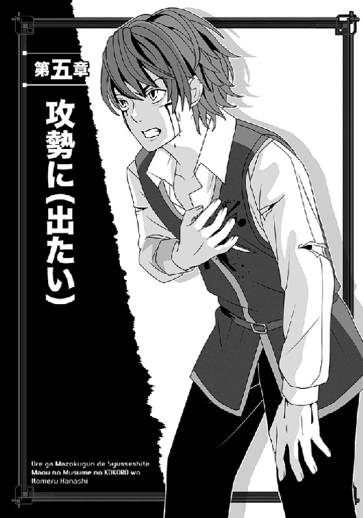
どうも俺は、気絶していたらしい。
目が覚めると外にいて、しかも夜だった。
我ながら情けない話だが、気力はともかく、出血多量による急性貧血はいかんともし難かったようだ。意識が戻った時もまだ頭がふらふらしていたが、今度はちゃんと、事前に膝枕されているのがわかった。
なぜなら、普通に俺がよく知るやり方だったので。
......ちなみに相手はミュウで、俺を心配そうに覗き込んでいる。
「よかった......目が覚めたのですね」
「う、うん」
俺はひどくどぎまぎして頷く。
慌てて起き上がろうとしたが、まだそこまで体力が戻ってなくて、全然無理だった......あと、なんか顔が痺れてるんだが。
「傷......レイバーグさんが、治癒魔法で塞いでくださいました。失った血液はどうにもなりませんが、傷痕はそのうち自然と消えるとか」
聖母マリア様みたいな優しい目つきで、ミュウが俺の頬を撫でてくれた。
俺は、あんまり甘やかされることに慣れてないっつーのに。
「傷痕くらい気にしないって。元々が元々だしさ」
「そんな......あまり、痕が残らないようにしてくださいませんと」
珍しく、ミュウが抗議するように言う。
それはいいけど、膝の上からこうしてミュウの顔を見上げていると、いつもの戦闘スーツを持ち上げる胸の膨らみがばっちり見えてヤバいな！
煩悩に弱い俺はなるべくガン見しないようにして、さりげなく周囲を見る......結果、ここはどうも、北方にある国境付近の森だとわかった。
俺達の座っているのも、枝振りがいい黒い樹の根元だしな。
周囲がまんべんなく、真っ黒で巨大な葉を持つ辛気くさい大木が林立する森みたいで、景色に見覚えがある。
ここは確か、ブラックリーフという名の森だったような。
リグルスとやり合った時の深い森だな。
「もしかして、逃げられた？」
「まだわかりません」
ミュウは少し表情を引き締めて首を振った。
「城からは出ましたが、追っ手に追いつかれる可能性が高かったので、私がナオヤさんを──だ、抱いたまま、レイバーグさんも背負って、全力疾走で振り切ったんです。今は治癒のために、少し休止していたところですわ」
抱いた、の部分で照れて目を逸らされると、俺まで思い出して恥ずかしくなるやん。
俺は頬が熱くなってしまい、ミュウから目を逸らす。
「そ、それで、レイバーグは？」
「周囲の様子を偵察に行ってくれてます......今のところ、計測レンジ内に誰もいませんと申し上げたんですが、どうも信じてくださらなくて」
「まあ、探知装置なんて概念は、異世界出身のあいつにもないみたいだしなあ」
置かれた状況を知り、俺はようやくほっと息を吐く。
ミュウの全力疾走で振り切ったなら、おそらくしばらくは時間があるだろう。本当はアランのことで落ち込みまくっていたんだが、俺はなるべく顔に出さないようにした。奴がどんな裏切り方をしたのかは、戻ればわかるさ。
それより、忠実なミュウに心からの感謝を込めて、俺は彼女の手を取った。
「ありがとう、ミュウ。ミュウがいなきゃ、そもそも逃げられなかっただろうし、凄く助かったよ。いつもありがとう」
「い、いえ......私はナオヤさんにお仕えするのが喜びです」
どっちかというと、立場がなきゃ俺がミュウに仕えたいところなのに、そんなことを言う。しかも、俺が笑って否定しようとしたら、ミュウは白銀の髪を払ってから、素早く顔を寄せて俺にキスした！ それも、唇にっ。
「い、いやミュウ、あの──」
「私の気持ちはご存じのはずです」
赤い顔をして、懸命な声音でミュウが言う......そう言われると、何も言えなくなるけど、しかし──
「──あっ」
いきなりミュウが本来の鋭い表情を取り戻し、息を呑んだ。
「ど、どうしたっ」
「動体センサーに反応が出ました。かなりの人数が接近してきますっ」
「追っ手かっ!?」
さすがに俺も余計なことは考えている場合じゃなく、無理に身体を起こした。幸い、今度は目眩もだいぶマシになっている。
「わかりませんが、北から来ますっ」
立ち上がった俺を支えようと、ミュウが慌ててこっちの腰に手を回す。
「無理をなさらないでください。敵なら、私が撃退しますから」
「いや、ミュウでもヤバそうな奴が向こうにはいるんだよ、それが」
「でも──えっ」
またミュウが声を上げ、本当にうっすらと光る碧眼を北へ向ける。なぜか、驚いたように目を細めていた。
「ひ、一人、集団から抜け出して物凄い速さでこっちへ接近してきます。でも、おかしいです！ まだ相手の姿を確認できませんけど、これって人間が出せる速度の限界を遥かに超えていますっ」
「下がれ、ミュウっ」
俺は断固としてミュウを押しのけ、刀の柄に手をかけた。
脳裏には、前傾姿勢で疾走してくるサクラの姿がある。あの女勇者モドキなら、人間の限界なんか超えてたって不思議じゃない。
今の俺には、ヤバすぎる敵だ！
とりあえず、ミュウまで巻き添えにしないために、俺はわざと敵が来るとおぼしき方角へ駆け出した。
というのも、この敵さんの移動速度は本当にシャレにならないほど速く、もう今の俺でも気配を感じるのだな。
周囲が暗いからまだ姿は見えないが、足場の悪い森の中を駆け抜ける音まで、もう微かに聞こえるほどだ。
対して、まだ俺は夜目に慣れない──どころか、そもそも体力も回復してないんだが、サクラを相手にするなら、おそらくミュウよりは生存率が高いだろう......多分。
そこで、俺自身もブラックウッドの巨木を利用して、幹から幹へと身体を隠しながら駆けた。俺だけ向こうからばっちり見えてるのも困るからな！
だから、まだ刀も抜かない。
抜刀したら、むちゃくちゃ目立つんだ、これ。
忍ぶように駆けたお陰で、俺達の距離はぐんぐん詰まってくるわけだが......ていうか、この敵、全然速度が落ちないんだけどっ。
こんなとんでもないスピードで走るような奴だし、気配を読むのもお手の物だろうと思ったんだが、そうじゃないのか？
俺は一応、気配を殺してるけど、さすがにこの距離ならもう悟られてる気がするんだがな。でもって、普通は敵の存在を感じ取ったら、足を緩めて様子見るとか、後続の味方を待つとかあるやんっ。
（くそっ。ナメくさりやがって、セーラー服女が！）
まだ完全ではないが、それでも俺はかなり腹を立てていた。前にしてやられてるのもあるしさ。
ここらで、あのイケイケねーちゃんにも思い知らせないとな。いつも魔法使いの援護があると思うな、ちくしょうっ。
ざざざっと森を駆け抜ける音が接近し、黒い影がちらっと見えた。敵は俺そっくりに木々を縫うように疾走していて、今は眼前のブラックウッドを回り込もうとしている。
その刹那、俺はいきなり進路を変更してそちらへ駆け出す。
向こうが幹の向こうから間抜け顔を出した途端、電光石火で真っ二つという寸法である。
名付けて、「問答無用のマヤ様戦法」だっ。
サクラ相手に直撃は無理としても、上手くすれば戦いの主導権を握れるはず。
というわけで、俺は敵が幹の向こうから飛び出す瞬間を狙い、自分もぱっと幹を回り込んだ。当然、その時は抜く手も見せずに抜刀している。
ところが敵もさる者で、俺と同じく思いっきり剣を脇に引きつつ、飛び出してきやがった。
くそっ、先制攻撃する気満々かっ。
「く、食らえっ」
「死ねぇええええいっ」
お互いの喚き声が重なって──
──て、ちょっと待てぇえええええええっ。
まさに、心臓が口からはみ出すような気分だった。相手の細首に刀身を叩き付ける寸前で、俺はようやく気付いた。
間近に見えた、萌える──じゃなくて燃えるような真紅の瞳を。
「うわあっ」
冷や汗をかきつつ、攻撃動作をなんとか止めて飛び退く。
しかし、向こうは全く躊躇せずに、豪快にでっかい剣を横薙ぎにしやがった！
扇風機の強回転かよっと思うような風切り音がすぐ目の前でして、見覚えのある黒い大剣がちらっと空を斬る。
それをギリギリで回避し、俺は木の根が盛り上がった大地に背中から倒れた。
ヤバかった、本気でヤバかった！ 前髪がちょっと持って行かれたしっ。
しかも、空振りした大剣はそのまま、一抱えもありそうなブラックウッドを両断しちまったんだ。ベキベキベキッなんて臨場感たっぷりの音がして、ごつい樹が斬られて倒れちまいやんの。
さらに、向こうは据わった瞳で、すぐさま剣を大上段に持ち換えている。ま、前、じゃなくて、下を見ろ、下をようっ。
貴女は、相手も確認せずにそんなモン振り回すんですかっ。
焦って声が出なかったが、ようやく喚くことに成功した。
「俺、俺です俺俺っ──てわあっ」
「な、なんとっ」
俺が半ば背中を浮かせ、身体を横向きにしたお陰で、二度目もなんとか回避したっ。ドガッと聞き覚えのある嫌な音がして、小石混じりの土塊が跳ね上がる。
地面に大剣を食い込ませたまま、相手はようやく俺を認めて、息を吸い込んだ。珍しく、額に冷や汗をかいている。
よく好んで着る、漆黒のゴスロリドレス姿のマヤ様が、俺を見て目を丸くしていた。
「あ、危ないではないかあっ」
「そりゃ、俺のセリフですよおおっ」
死にそうになった腹いせに思いっきり喚き返したが、ひっくり返った亀よろしく倒れている俺を見て、なぜかマヤ様は大剣そっちのけでいきなりその場に膝をついた。
そして俺の胸ぐらを掴んだかと思うと、ぐわっと顔を寄せてくるのだな。
なんなんだ、この人......会えたのは嬉しいが、やることがいちいち突発的すぎるぞ。
「怪我をしているではないか！」
「いや......不満そうに言われましても。レイバーグに治癒してもらったので、もう平気」
まだしゃべってる途中なのに、マヤ様は俺の頬を片手の掌でごしごし擦り、畝みたいに盛り上がった傷痕を確かめていた。
「誰にやられた!? 傷痕が残ってしまったら、なんとするのだっ。傷痕がなくても、いろいろ惜しい顔なのに」
「か、顔のことは放っておいてくださいっ」
俺はさすがにむっとして言い返した。
○────○
情けない話だが、その辺りで俺はまた体力の限界が来たらしい。
加えてマヤ様の顔を見て、戦闘寸前だったところにガタッと気が緩んでしまったのもある。結果的に、また目眩がして座り込んでしまったのだな。
でもって、気付いたら意識が闇に落ちていたと......まあ、気絶したってことだけど。
当然、マヤ様は慌てるわ、追いついてきたミュウが青くなるわ、ややこしい時にレイバーグが戻ってくるわで、あれからまた結構な騒動だったようだ。
ただ、さすがにレイバーグが冷静に「さっさと逃げないと危ないよ？」的なことをまず教え、話し合いは後のこととして、全員がその場から遁走したそうだ。
あいにく俺はその時には気を失っていたので、全ては後から聞いた話だが──。
俺を救出に来たのはなにもマヤ様だけではなく、ギリアムやネージュやエルザといった面々も引き連れ、さらにいざ戦闘になった時のために、数百名規模の部隊も率いてきていたらしい。
俺が連れ去られたことに気付いたマヤ様は、もうその直後から素早く行動に出ていたということだ。情報が入り乱れる中、ルクレシオン側の支城に謎の部隊が駐留しているという報告が入ったそうで、その情報を特に重視し、マヤ様は国境に急行した。
そして、あの森の周辺で敵側の傭兵らしき連中を見つけてとっ捕まえ、尋問したわけだ。
そこでようやく、俺の居場所が判明したそうな。
......それはともかく、その後の魔族軍の惨状を聞くにつれ、俺はかなり落ち込んだ。特にカシムが大怪我して伏せったという部分にがっくりきたな。
俺は、マヤ様という俺にとっての巨星があったのと──元の世界で自暴自棄になる寸前だったという二つの大きな理由があり、肉の盾に放り込まれてもなんとかやっていけた。
身も蓋もなく言えば、「死んだところで、当初の予定通りだしな」なんてナメた考えがあったからこそ、日々を乗り越えられたとも言えるのだ。
ただ当然ながら、アランを始めとするその他の大勢は、元の世界で俺ほどヤケクソな生活を送っていたわけではないだろう。
俺も自分が例外だってのはわかっていたから、当時マヤ様に改めて呼ばれた時、早速にして召喚の取り止めを言上していたが──マヤ様がナダル様に俺の考えを伝え、その願いが通った時には、もう手遅れなほど大勢の死者が出てしまっていた。
だから俺は、アランの裏切りについては当然ながら責める気にはなれない......マヤ様はめちゃくちゃ怒ってたそうだけど。
俺だって、マヤ様がいなくてあのままだったら......アランと共謀して寝返っても、おかしくない立場だったわけだし。
なのに俺は、致命的な勘違いをしていた。
魔王城でアランが俺を振り返って笑っていたのを見た時、俺は後からこう推測したのだ。
あの笑みの意味は、「もうおまえの好きにはさせないぞ」ということかと。つまり、同じ立場だったという俺が、ここまで出世したのを知ったアランが、「そのうちおまえの地位を追い抜いてやるぜ」的な敵対宣言のつもりで、こっそり俺にだけ笑って見せたんではないかと。
実際は、全然違う。
あの時点でもう、あいつは魔族軍を敵に回す決心をしていたのだろう。
そんなアランにとって、ちょうど現れたサクラ達のような存在は、まさに渡りに船だったんだ。
「ところでマヤ様──」
俺はじくじく考えるのをやめ、部屋の中を見渡した。
一応ここは魔族領内の小さな街であり、今俺がいるのは、そこの一番大きな宿の中である。当然、魔王陛下がご滞在ということで、四階建ての宿の最上階をマヤ様が占領している......一人で。
目が覚めて一部始終をギリアムやエルザから聞いた後、俺はそのマヤ様に呼びつけられ、取るものもとりあえず駆け付けたわけである。
「何かごけけね......じゃないや」
必死に言葉を思い出し、言い直す。
「ええと、何かご懸念でも？」
「無理に難しい言葉使いをしようとするでない。そうやってトチるのがオチだ」
恐ろしく不機嫌そうにマヤ様は言ってくれた。
既にまた一日過ぎて、もう次の夜になっているらしいが......この人は肩が剥き出しのタンクトップというかビスチェというかそんなぴっちりした上衣であり、下はショートパンツである。そういうとんでもない格好でベッドの上であぐら座りをし、俺をじっとりと見下ろしていた。
言い忘れたが、俺はベッド前の固い床で、ちんまりと正座中である。
......正座苦手なんだけど、入るなり「まずは謹め！」と言われ、思わず正座しちまった。いや、もう話す前からマヤ様の瞳が真っ赤で怖いし。
「その前に、マヤに言うことはないか？」
地獄の底から響くみたいな声音だった。鳥肌立ったし。
まるでＲＰＧのラスボスが、最後のステージで言いそうなセリフだな。しかも、そのまんま魔王だし。
「い、言うことですかっ」
必死に考え、俺はようやく言葉を絞り出した。
「え、ええと......連れ去られたせいで、肝心な時に指揮が執れなくてすみませんでした──みたいな？」
途端に、くわっとマヤ様の両眼がでっかく見開かれた。
「なにがっ、みたいなだ！」
「おおうっ」
いきなり拳骨で頭を殴られ、俺は呻いた。
ていうか、今のって叱責の前に、もう殴ってたぞ！ 手が早すぎるだろっ。おまけに、俺はまだ病み上がりだっていうのに、また昏倒しかけたし。
しかし、文句を言おうとして顔を上げた俺は、マヤ様の真紅の瞳が微妙に潤んでいるのを見て、言葉を失った。
しかも、俺が見ているうちにどんどん目の縁に水分が盛り上がってくるわけで......いや、あれはどう見ても涙なんだろうな。
俺の視線に気付くと、マヤ様はふいに頬をうっすらと赤め、乱暴な手つきでごしごしと両目を拭った。
その後でしゅんとしている俺に向かい、「マヤをじろじろ見るな、ばかっ」と喚いたかと思うと、また鉄拳をお見舞いしてくれた
い、いちいち手が早いよっ。
しかも遠慮ナシの連打である。い、痛いっ、痛すぎるっ。
脳みそが耳からはみ出るかと思ったじゃないか！
「いや、涙を見て反省しましたけど、このまま感情の赴くままに頭をガンガンやられると、また気を失いそうですっ」
俺の頭は木魚じゃないしっと言う代わりに、辛うじてそう言った。
返事の代わりに、マヤ様は無言でベッドを下りてきて、いきなり俺の胸ぐらを掴んでくれた。
そのまま俺を引きずり起こして近くの壁まで連行し、どかっと叩き付けてくれた。
「ナオヤは強くなったはずではないのかっ」
ほんの数センチの距離まで迫った真紅の瞳が、恐ろしくも綺麗だった。泣き濡れていたせいかもしれない。
当然、俺も言い訳する言葉とてなく、素直に頭を下げるのみである。
「......ご心配かけました」
俺の謝罪を聞いてもマヤ様はしばらく睨んでいたが、ようやく本気だとわかってくれたのか、押し殺すように述べた。
「本当に......心配したのだぞ」
「......はい」
申し訳ない気持ちで答えると、なぜかそのまま抱きついてこられた。いつもより薄着なのでちょっと焦ったが、動くのも悪い気がして、俺は自分も素直にマヤ様の背中に腕を回した。
そのまま、しばらく二人で抱き合っていた。
多分、その間に涙を引っ込めるか、あるいは俺のシャツでこっそり涙を拭くかしたのだろう。二人で備え付けのソファーに座った時には、もうマヤ様はいつもと同じ凜とした表情......にかなり戻っていた。
一応、この部屋に来る前にギリアムやエルザから情報は聞いていたので、俺は改めて自分の方の事情をマヤ様に話した──もちろん、思い出せる限り、全部。
話し終わった後、渋い顔のマヤ様に尋ねてみる。
「向こうには、元ロクストン帝国のブレイブハートを自称する、サクラって娘がいたんですが......今お話しした通り、あいつの腕はレイバーグに勝るとも劣らないものでした。本人の話じゃ、今の時代よりももっと前の時代の勇者だ、みたいなことを言ってたんですけど、マヤ様に心当たりはありますか？」
「マヤにはないが、あれから情報を集めさせた」
さりげなく俺の肩に頭を預け、マヤ様は教えてくれた。
「......それによると、少なくともその女の言うことは間違っていない。ロクストン帝国は、かつてこの大陸全土を支配する寸前までいった大帝国で、百名の一際腕の立つ戦士──いわゆる、ブレイブハートを抱えていたらしい。つまり、今の世に伝わる『勇者』の元祖だな」
ひゃ、百名!? 思ったより多いな......あんなのがあと九十九名いるとか、勘弁な。
俺は内心でびびりつつ、さらに質問した。
「じゃあ、ロクストン帝国とやらが二千年近く前に栄えた大帝国だっていうのは、事実なわけですね。あいつ、俺の世界で生まれたけれど、元のロクストン帝国に戻るつもりでこっちに来た、みたいなことを言ってましたけど」
「待て。ナオヤの世界にいた？ なぜ過去の帝国のブレイブハートが、ナオヤの世界にいたのだ」
マヤ様が不審そうに横目で見る。
「そこがややこしいところなんですが、どうやらあいつ、俺が元いた日本で転生していたようです。おまけにレージ軍の関係者も多くは日本に来ていて、そこで何らかの事件があった後、元のロクストン帝国に戻るはずが──」
もったいつけて間を置いた後、俺は一気に言った。
「......なぜか、時代がズレた未来のこの世界に来ちまったということらしいです。ただし、別にサクラが軍の指導者ってわけじゃなくて、どうも最高指揮官は別にいるらしいですけど」
「それは聞いた。どうやらレージ軍とやらの指揮官は、太古の女神らしい。しかも、かつてクレアル大陸全土を席巻してロクストン帝国を滅ぼしかけた、暗黒の女神だ。女神は女神でも、邪神の側だな」
クレアル大陸ってなんだとしばらく考え、俺はそれが今いるこの大陸の名称であることを思い出した。久しぶりに聞いたせいか、すっかり忘れてたな、そんなの。
「するとなんですか、敵の総大将は......神様......とか？」
「とかもなにも、そのまんまであろう」
これまた、マヤ様は危機感もなくあっさり言ってくれたね！
「ロクストン帝国は、ブレイブハート百名を先頭に戦い、最後はその邪神を退けた。しかし、その後で内紛のために消滅してしまった故、もう記録自体がろくに残っていない。ただ、邪神ヴァレンティーヌという名前だけは、辛うじて伝えられている。マヤも幼少の頃に父上に聞いたことがあるぞ。他に邪神の女神などは知らぬから、おそらくトップはそいつのことだな」
「いや、それはおかしくないですか？ だって、俺がやりあったサクラってブレイブハートを自称してたわけで、本来ならその邪神と敵対してるはず......あ、でも、あいつは人間に恨みがあるって言ってたな」
ぶつぶつ呟くと、マヤ様が苛立ったように言った。
「昔のことはどうでもいい、ナオヤ。今はそのサクラとやらもまとめて敵だ。既にナオヤと戦っているのだから、我々の敵だとはっきりしているではないか」
相変わらず、竹を割ったように価値観のはっきりしている人だなっ。
そこは見習うべきかもしれないな、俺も。
「そうですね、サクラは間違っても俺達の味方じゃありません」
マヤ様中心に作戦を考える立場の俺も、素直に頷く。
「ただ、そのヴァレンティーヌって女神、おそらく今はユメって名乗ってますよ、俺、敵がユメ様がどうのって話してるの、聞いてますから。あと、ダークピラーがどうとか」
「なら、やはり邪神ヴァレンティーヌで間違いない」
マヤ様がきっぱりと言った。
「ダークピラーとは、そのヴァレンティーヌを支える傑出した戦士の総称らしいからな」
「そうですか......じゃあ、あの時の会話って俺が思ったよりも重要だったかも」
俺はレイバーグやミュウと盗み聞きした、サクラとレイモンとかいう戦士の会話を思い出す。あの支城で、暖炉に飛び込んで盗み聞きした時だ。
俺は見つからないかだけを考えてドキドキしてたからアレだが、ミュウならあの会話も正確に記憶しているかもしれない。後で確かめないとな。
よく考えたら、レージ軍の誰がどこにいるって、結構詳しく話してた気がするし。
「でもって、その女神ユメを陰で操るレージって奴がいるって聞いたんですけど──」
ついでに俺は、ミュウが仕入れた情報を思い出した。
「何かの間違いではないか？ 仮にも女神を、ただの人間が操れるものか？」
いや......そんな真顔で言われると、俺としても反論できませんが。だいたい俺だって、又聞きの話だしな、これ。
「まあ、それは今は置いて──それで、俺がいない間、問題のレージ軍の動きはどうなってますか？」
かなり緊張して尋ねたが、これに対するマヤ様の返事は意外なものだった。
「今のところ、我が領土で奪われたのは、南の国境上にある砦だけだ。以前、ナオヤとマヤで奪取した場所だな」
「ああ......俺がマヤ様にロープから落とされたあそこですか」
顔をしかめて頷き、俺はほっと息を吐く。
「よかった......意外と押し込まれてません──ねぇえええ」
最後の方で悲鳴になったのは、俺の責任ではない。
マヤ様が横から手を伸ばして、いきなりヘッドロックなどしてきたからだ。
「よいわけがあるものかっ」
ぐいぐい締め付けながら、マヤ様が叱り飛ばす。
俺が腕を叩いてチョークを宣言してるのに、ハナから無視である。
「あれほど苦労して占領したのに、今度は別の敵に落とされるなど、もっての他ではないかあっ」
「お、俺が落とされたんじゃないですよおおおっ」
必死に喚いて、なんとか腕を外してもらった。
実はちょっと頬に胸が当たって嬉しかったのもあるんだが、それに倍する──いや数倍する苦しさだからな。
この方はすぐに自分のクソ力を忘れるから、油断ならん。
胸の感触と引き替えに命を落とすのは、さすがの俺もご免だ。
「げほげほっ。と、とにかくそこ以外は、全部ちょっかいかけられただけなんですね？」
喉元をさすりながら俺が聞くと、マヤ様は嫌そうな顔で頷いた。
「うむ。どうもあやつらは、今のところはルクレシオンの残党を相手にするのに忙しいようだな。帝都クレアールを占拠したはいいが、各地に散るルクレシオンの貴族どもが一斉に蜂起して、それぞれの領地から帝都に攻め寄せようとしているらしい......まあ、いきなり帝都を占領して王族を押さえただけでは、ルクレシオンは落ちなかったということだ」
マヤ様は皮肉な笑みとともに言った。
そりゃまあ、魔界も散々ルクレシオンに苦しめられているからな。あまりにあっさり倒れてしまったら、切なすぎるだろう。
「ええと、確か連中の会話じゃ、今話に出た元魔界の砦に、その邪神女神とレージとやらがいるそうなんですよ」
多分、こういうことじゃないかと思う。
ルクレシオンと魔界の国境地帯は、ほぼ南北にわたって山岳地帯になっている。
そのせいか、軍勢が通過できるほどの余裕がある軍道というと、実は主立った場所が二ヶ所しかない。
その一つが、俺達が脱出してきたばかりのルクレシオンの北の森付近で......そして今一つが、俺が以前に散々──もう本当に散々苦労して落としたはずの、南のあの砦なのだ。 現状、敵のレージ軍とやらは、ルクレシオンの北の支城と俺達が保有していた南の砦を押さえてしまっている。
つまり敵は、俺達を魔界領内に完全に閉じ込めてしまっているわけだ。
お陰で連中から見れば、俺達を攻めるにせよルクレシオンの制圧を完了するにせよ、自分達の方に主導権があることになる。
サクラは二正面作戦とかフカしてたが、実際には、彼らもまずどちらかの国を重点的に制圧するつもりだろうと思うのだな。いくらなんでも無限に魔獣が出せるわけじゃないだろうから、均等に戦力を配分するわけない。
片方を攻めている間に邪魔をされないよう、国境を押さえているわけだ。
......今考えたばかりの推測を話すと、マヤ様は納得したように頷いてくれた。
「有り得る話だな......それに、その推測が正しいと仮定するなら、敵が力を入れているのはルクレシオンだろう。こっちの帝都マヤはそう簡単に落ちぬと見て、まずはルクレシオンを打倒することに力を注ぐ気に違いない。だからこその撤退だとすれば、つじつまも合う」
「あの......敵がこっちの帝都を、『簡単に落ちぬ』と判断したと、どうしてわかります？」
引っかかった俺が尋ねると、マヤ様はあっさり言ってくれた。
「さっきはいちいち話さなかったが、マヤとナオヤが攻められている頃、帝都マヤでも空を飛ぶ魔獣達の攻撃を受けていたのだ。父上から早馬が来て、教えてくださった」
「ちょっ」
いきなり背筋が伸びたじゃないかっ。
「そういう話は、先に教えてくださいよっ。それでどうなって──」
勢い込んで訊こうとしたが、マヤ様が余裕の表情で片手を上げた。
「父上が撃退したに決まっておろう。仮にも魔王だった方だし、マヤの父上ぞ？ あんなホムンクルスもどきの魔獣などに後れを取るものか」
「はぁああああ」
一応、ほっとして、俺は胸を撫で下ろした。
確かにまあ、あのナダル大公とまともにやりあって勝てる奴は、あんまりいないだろうな。特に魔獣なんかじゃ無理だ。
「ならば、ひとまず帝都マヤは安心として──俺達は俺達でできることをしますか？ マヤ様が置いてきた軍勢、まだ退いてないんですよね？」
「当たり前だ。マヤがまだ命じてないのに、勝手に退却されてたまるものか」
「では、俺達がそっちへ戻るより、軍勢の方をこちらへ呼びませんか？」
俺が恐る恐る提案すると、マヤ様は切れ長の瞳をぱっと見開いた後、唇の端を吊り上げて、ニィイイイと微笑んだ。凄みがありすぎてこぇええ。
しかも、できたてほやほやの俺の傷痕を撫でて、興奮したように囁くのだな。
「こちらから攻め入るわけだな？」
押し倒されかねないほど隣から迫られ、俺はたじたじとなってしまった。
豪華な金髪から漂う香りにくらくらしつつ、まだまとまってない考えを話す。
「そういうことです。彼らの当面の狙いが、ルクレシオンの制圧行動を盤石なものにすることだとすれば、俺達が座して待っていることに、なんの意味もありません。むしろ、時間が経てば経つほど、不利になるでしょう。それくらいなら、南の砦を攻め落とすべきです──そこには、ユメとかいう邪神とレージとやらもいるそうですし」
マヤ様を同行させていいのか迷い、俺は最後に口ごもったが......ぐっと拳を固めたマヤ様を見る限り、こりゃ止めても無駄だな......むうう。
しまった、考えがまとまらないうちに意見するんじゃなかった。
「いいな、実にマヤ好みの策だっ。採用！」
しかも、即座に叫ぶマヤ様である。
「はやっ。いやしかし、よく考えたら敵の戦力がまだ──」
「よしっ。早速、軍勢を呼び寄せようぞ！」
き、聞いちゃいないしなっ。
決めた途端、もうマヤ様は立ち上がっていた。
「これ、誰かいないかっ」
......でもって、すぐにドアを開けて伝令を呼びつけるという。
ま、まずいな......邪神が敵とか、さすがにちょっとまずそうな気がするんだが。
自分で立てた作戦なのに、早速俺はびびっていた。
だいたいあの砦には、さっぱりいい思い出ないしな！
○────○
その後、俺は深夜までマヤ様のマッサージの相手をさせられ、あの方が眠りについたのを確認してから、へとへとになって宿の一階に下りた。
いや、マヤ様に呼びつけられる前は、みんなそこにいたので、一応どこか隅の方で休む前に覗いておこうかと思ったからだが──。
呆れたことに、みんなまだ、普通に一階に揃っていた。
ここは、いわば俺の世界のホテルで言えば、フロント前に開けた空間みたいな場所で、壁際の暖炉を囲むようにして、赤い布地の三人掛けくらいのソファーが並んでいる。
でもってそのソファーで雁首揃えるように、ギリアムを始めとして、ほとんどのメンツが揃っていた。
俺が階段を下りてくると、全員が立ち上がって迎えてくれた。
「おぉ......ナオヤってば、明るいところで見ると、ホントに顔に斜めの線が入ってるじゃん！ うわぁ、痛そうだなあ、おい」
真っ先に、俺が最初に目覚めた時にはいなかったヨルンがほざいてくれた。
どうせあの時は爆睡してたんだろうが......久しぶりに出会って開口一番それかよ。
「こ、これっ」
ギリアムもいい加減、ヨルンの態度を改めるのに疲れたのか、今や注意する口ぶりも諦め口調である。まあ、俺自身があまり気にしてないせいもあるんだけど......。
「あれ、ローズは？ 最初に俺が目覚めた時は、いた気がするけど」
何気なく訊いただけなのに、その時に漂った微妙なこの雰囲気！
一瞬で、ささっと顔を見合わせた面々の気まずい顔とかなっ。
「い、妹は......先に休みました、はい」
しかもなんだその、ギリアムの焦った声わー。
こういう時、昔ボッチだった俺は、敏感に感じるね。「あ、こいつら『おい、みんなあのコトは黙ってようぜっ』と目線で会話してるなっ」てさ。
そこで、空気を読むのに長けた俺はあえて訊かないでおこうと思ったのに、ヨルンが全然空気読まずに教えてくれた。
「なあ、ナオヤよう！ あいつの採用、ちょっと見送った方がいいんじゃないかぁ？ なんか態度悪いんだけどっ。特にだ──」
真っ黄色の髪を掻きむしるにようにして吐き捨てる。
「特に、上官に対する態度がなってねぇよっ」
......さてはこいつ、何かきっついこと言われたな、彼女に？
「き、君が言うんだから、よっぽどなんだろうな」
暖炉近くに座ったレイバーグが、呆れたように口を挟んだ。いつの間にかみんなと打ち解けたらしい。
だけどうん、実際、ヨルンに言われたくないだろうな、あのローズも。
「ま、まあほら......ローズも初めての出陣だったんだし、いろいろ思うところもあるんだろうさ」
俺はなんでもないように笑い、ミュウがいそいそと場所を空けてくれた隣へ座る。本当はもう寝たいけど、なぜかみんな起きてるしな。
「どうもねぇ、彼女にしてみれば、初陣で上官が拉致られたっていうのが、ショックだったみたいねぇ」
いつもの魔法少女みたいな格好のネージュが、俺の正面で意味ありげに笑う。
うう......わかってる、皆まで言うな。どうせ俺は美人にウケが悪いんだよ。
言うな、言わんでいいって俺が必死に目で訴えてるのに、ネージュはそのままあっけらかんと吐かしてくれた。
「ショックというか、早い話がナオヤ君に失望しちゃったってことかしらー。あたしとしては、タイミング悪かったと同情してるんだけど」
「もっと早い話、ナメられてるわよ、ナオヤっ」
最後にショートパンツ姿のエルザが思いっきりトドメを刺してくれた。
だ、だからっ、言わんでもわかるってのにっ。あと、わざわざ俺を指差すな馬鹿たれ！
俺は頭を抱えて呻いてしまった。確かにまあ、新兵に見せる上官の姿としては、「いきなり敵に拉致られました、てへっ」てのは、まずかった気がする。
くっそー、俺だって初めての経験だったのに、何もこんなタイミングで、美人にかっこ悪いトコを見られなくてもなぁ。
「す、すみませんっ。どうも、不肖の妹で......なんとお詫びすればいいか」
俺の斜め前で一人で小さくなったギリアムが、俺以上に小さい声で言い訳する。
「その......あの後で本陣に戻った陛下がナオヤ様が囚われたのを知って、怒り狂ったのです。そこで、我々全員が兵士を引き連れて後を追ったのですが、その間、同行した陛下に散々なじられたのも、ローズがへそを曲げた原因かもしれません」
ああ、それ想像できるな、うん。
マヤ様は割と八つ当たりする方だからな。「いなくなりましたですむか、馬鹿もーんっ」てことで、ギリアム達は怒鳴られまくられたのだろう。つーか、俺の関係者じゃなきゃ、首が飛んでたかもしれん。
ホント、こういうところは魔王と呼ばれるに相応しい性格だからな、あの人は。
「関係ありません。ナオヤさんの臣下なのですから、普段から粉骨砕身し、いざとなれば命を捨てる覚悟で日々仕えるべきです」
珍しく、ミュウが断固として口を挟み、みんな目を丸くしていた。「あんた、そういう性格だったのぉ？」みたいな視線で、ミュウのさらに隣に座るエルザなどがガン見してるわけで。
俺は気まずくなって無闇にスーツの衿を直し、座り直した。
「い、今はローズの機嫌を論じてる場合じゃないんだよ、うん。俺達、これからまた、困難な任務をこなす必要があるからさ」
金髪ねーちゃんローズのことを頭から追い払いたい一心で、俺は自ら話題を変えた。
「例の国境砦、俺達が三度攻略に向かうことに──」
「えぇえええええっ」
エルザが黒髪を揺するようにして、真っ先に黄色い悲鳴を上げた。
「またなのぉおおお」
......反応はえーよ！
まあ、不協和音が内部にあろうとなかろうと、マヤ様の決定に従い、策を立てるのが俺の役目である。そもそも今回は、提案したのがこの俺だしな。
ところが、翌日遅くに呼び寄せた九千の軍勢が村へ到着するなり、マヤ様はまた俺を呼びつけた。
「ナオヤに異論がなければ、すぐに南の砦へ進軍を始めようと思うが？」
「え......？」
さすがに俺は、多少の驚きを持ってマヤ様を見つめた。
以前の悪役魔王じみた格好はもはや辞めたのか、今日はお気に入りの黒いゴシック衣装に、裏地が真っ赤なマントをしている。
マヤ様的に、魔王になってからはマントを着けることが多くなったような気がするな。おそらくナダル大公を意識しているのだろうけど。
......いや、そうじゃなくて。
俺は、今度はベッドに横座りしてしれっと告げたマヤ様に、首を傾げてしまった。
「ええと、皆を集めて軍議とか開かないのでしょうか？」
「相変わらず、何をボケたことを言ってるのか？」
マヤ様は、光沢のあるストッキングを穿いた足をぶらぶらさせて、呆れたように俺を見上げた。
「だから、これが軍議ではないか。今のマヤは魔王ぞ」
いわずもがなのことを断言すると、マヤ様は心持ち胸を張る。
おお、今日も胸の谷間が深い......すぐそっちに目が行くのが、我ながらアレだが。
「であるからには、下々の者と軍議で相談などする必要はない！ 今後は、全てマヤとナオヤで決めていくのだ」
「え、えぇえええ」
何その、一昔前の立身伝的シミュレーションゲームで、主人公の身分が上がったような展開わー。
「俺とマヤ様で、ですか」
「そうだ！」
「でもって......俺には相談して頂けるわけで？」
恐る恐る訊くと、マヤ様はぶらぶらさせていた足で、軽く俺の足を蹴飛ばした。
「いでえっ」
思わず右膝を抱えてうずくまっちまった。
軽く見えて、むちゃくちゃ効くからやめてくれっ。
ほっそい足なのに、いつもハンマーでぶっ叩かれたみたいな威力なんだよっ。
「ナオヤはマヤの直臣ではないか」
人の苦情は無視して、マヤ様が顔をしかめる。
「ならば、ナオヤに相談するのは、当然であろう」
「はああああ」
そ、そういう理屈になるんですか......まあ確かに、魔王がみんなとシコシコ相談して決めるとか、有り得んだろうけど。
しかし、それだとかなり俺の脳内予定が変わってしまうな。
せっかく、軍議になったら昨晩みんなと検討した案を出そうと思ってたんだが......これじゃ、俺が直接言うしかないか。
「ええと、ではネージュの意見を聞いて、俺もよいと思ったので──」
「それも無用だ！」
「えっ」
いきなり遮られて、俺はまた慌てた。
「何がでしょう？」
「ナオヤが誰を臣下にして、何者の意見を聞こうと、それはマヤには関係ないというのだ」
きっぱりはっきり言われてしまった。
「そ奴らの意見を検討した後に、ナオヤがマヤに進言した時点で、それはもはやナオヤの進言だ。ナオヤが臣下を得る権限を有するのと同時に、その臣下の身分を自由に引き上げる権限もあるのは、そのためだぞ。臣下の功罪は全てナオヤのものなのだ。いい加減、今の身分に慣れよ。......だいたい、ナオヤの周囲にいる女どもなど、どうでもよいわっ」
ぶちっとマントを外してそこらに放り投げ、マヤ様がじろっと上目遣いに睨む。
......今の、セリフの前半は建前で、後半が本音じゃないですか？
当然ながら行儀よく立つ俺はそう思ったが、それは言わずに黙って頷いた。余計なことは言わずに限る。
「ええと、じゃあ申し上げます。こういう手で行こうかと思いますが、どうでしょう？」
昨晩、散々皆の文句を聞かされた後、とにかく全員で検討した案を出してみた。
意外にもマヤ様はにんまりと笑い、即決で採用してくれた。
「おもしろいではないか！ なるほど、軍勢の大半は敵への見せかけだな」
「はあ。まあ、最初はそういうことです」
「よろしい、その策で行くっ」
うわぁ......相変わらず、俺みたいな中坊の作戦案に即決て......まあ、信頼されているのは嬉しいけど、俺は自分の肩に五トンくらいの重荷がかかった気がするよっ。
失敗したらどうするよ、失敗したらよぉ〜......とすぐ考えちまうからな。
「そうと決まれば、んっ」
なぜかマヤ様は両手を俺に差し出した。
「は？」
「は、ではないっ。マヤとナオヤの関係は、主君と臣下という単純なものではないだろうっ。昨晩、ジャスミンが言っておったぞ。女がこうして手を差し出して甘えた時は──」
そこまで言いかけ、なぜか頬を赤らめるマヤ様である。
「い、いちいち言わねばわからんのか。とにかく、手を取って起こしてくれというのだっ」
「そ、そうですかっ」
い、言ってくれないとわからんよ、そんなのっ。
だいたい、ベッドに座ってるだけだから、すぐ立てるじゃないですか！
言いたいことはいろいろあったが、手を握れて嬉しいという小市民な喜びもあり、俺はいそいそとマヤ様の手を握ってゆっくりと立たせて差し上げた。
すると、なぜか勢いよく立ち上がったマヤ様が俺の胸に飛び込んできたので、思わず受け止めて抱きしめる。ちゃんと、マヤ様も両手でこっちを抱きしめてくれた。
ちょっとドキドキしたが......次の瞬間、俺の腕の中でマヤ様が問うた。
「話は変わるが、あのレイバーグを臣下にするようだな？」
物凄く不機嫌そうな声だった。
なんですか、その不意打ちっ。
「ええまあ、そのつもりでいますけど......今のところ」
「......気に入らぬなっ」
腕の中でぷいっとそっぽを向いて、マヤ様がぶすっと言う。
同時に、こっちの胴に回してくれた手に力が入って苦しかったりするっ。
だいたい、さっきと言ってること違うくないですかっ。臣下を選ぶのは自由、みたいなこと言うたやんっ。
ギリギリと胴体を締め付けられながら、俺はだらだら汗をかいていた。
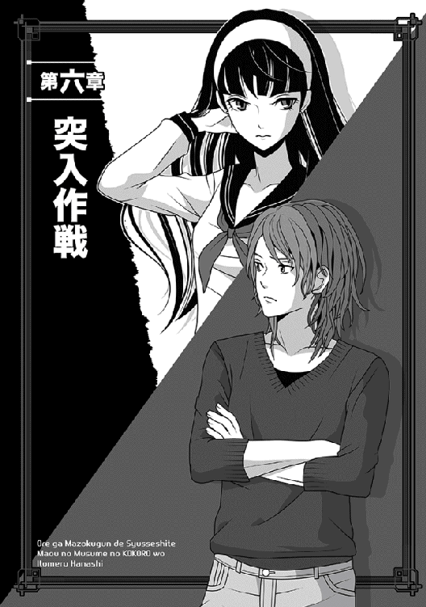
マヤ様は決断すると常にやることが速い。
翌朝には、俺達は九千の軍勢を率いて、国境線を目指していた。
ただし、近隣の街や村に近付いて触れを出す時は、「北部の国境付近にある敵の拠点を攻める」なんて大々的に宣伝している。
敵が間諜なんか使っているかどうかわからんが、もしそういう戦法を採っているなら嫌でも耳に入るくらい、熱心に広めた。
もちろん、軍勢が北の国境を攻めるなんてのは、大嘘である。
マヤ様に進言した通り、俺達の本命は南の砦であり、そこに籠もるレージと太古の女神だ。
ただ、情報を集めた限りじゃ、敵の盟主ともいうべきそいつらがいる割には、そこの守備兵力は大したことないのだな。
俺が放った間諜はことごとく、「兵力の推定は五百程度。しかもその大半は傭兵であり、雇われ兵士です」と報告してくれた。
万一、予想以上の兵力が詰めてたら、計画変更も有り得たのだが......どうやら変更する理由はない。そこで俺は当初の予定通り、この策を強行することに決めた。
まず策の第一段階として、その夜──。
俺は主立ったメンバーと、特に選んだ八百の兵士に声をかけ、夜営地をそっと離れた。
つまり、本隊を置き去りにして、単独行動をとったというわけ。
「......どういう計画かな？」
人目を忍ぶように進軍する途中、レイバーグが俺に尋ねた。
今宵のマヤ様は移動式のでっかい籠みたいなのに乗ったまま爆睡中なので、相談するよい機会だと思ったらしい。
これまではずっとマヤ様が俺のそばにいたんで、話す機会があんまりなかったのだな。
それは他のみんなも同じで、ギリアムやミュウを筆頭に、みんながさりげなく俺達の周りに集まってきた。
......いや、新入りのローズは俺なんか見向きもせずに、元の場所から動かないけどな。
まあ、美人に蔑まれるのは元の世界で慣れているんで、腹も立たんさ、けっ。
「ナオヤ？」
俺が答えないもんだから、レイバーグが眉をひそめて訊き返す。
「あ、ごめん。ええと、策だな？ 俺が戻ってきた夜、ちょっと話し合っただろ？ ネージュの透明化の魔法を工夫して使えないかって話をさ。アレを本当に実行しようかと思ってる。ネージュの実力なら、ギリギリ俺達数名だけなら、透明化を実行できるし」
「でも、魔王城奪還の時にも言ったけど......あたし達全員に魔法かけると、継続時間はせいぜい数分よ」
当のネージュが、首を傾げて俺を見る。
「うん。だから砦の門まで接近するのに、多少の工夫をする。手順はこうだ」
俺はみんなに説明してやった。
今回俺が目をつけたのは、このレージ軍とやらの募兵方法だ。
どうもあいつら、魔法生物のホムンクルス兵士以外は、全て傭兵や降伏した兵士を使っているんだな。
ギリアムなどに訊くと、敵の兵士をひっ捕まえて審問すると、奴らは降伏した兵士は基本的に無条件で受け入れているらしい。それプラス、自分を売り込みに来た食い詰め傭兵なども、気前よく雇い入れている。
だから、一定の距離まで砦に接近したら、まだ面が割れていない兵士をその「レージ軍への志願兵」として砦まで先行させる。
その中に、俺を始めとして仲間の数名くらいがさりげなく偽の志願兵に紛れ込み、肝心なところで透明化の魔法を使い、砦の中に上手く潜り込む。
（もし、志願兵全員を中へ入れてくれるなら、なおいい。潜入が一層楽になる）
その後は打ち合わせた時間が来たら、待機させた八百の軍勢を砦へと急行させ、先に潜入した俺達がタイミングを合わせて砦の門を開くと──こういう計画である。
「それなら、たかだか八百じゃなくて、本隊ごと率いてくればよかったじゃない！」
熱心に聞いていたエルザが、即座に突っ込んでくれた。
「だって、策の要は潜入要員が砦の門を開けることでしょ？ どのみち制圧する人数はいるんだから」
「いや......そんな大軍が接近したら、さすがに向こうもすぐに気付くし、籠城的なことをやらかすだろっ。のんびりと傭兵や逃亡兵なんか受け入れてくれるもんかって」
俺はむっとして唾を飛ばした。
こうして、わざと夜にこっそり出てきてる意味がわからんのかと言いたい。
「夜にこっそり近くまで接近してバレない程度で、しかもあの砦の兵士を含めて制圧できるギリギリの人数ってことで、この数で妥協してんだよ。本隊がわざとらしく、北部を攻めるぞ〜と宣伝しながら動いてたのも、全部敵の目を逸らすためだ」
「なるほど......」
黙って聞いていたギリアムが、ようやく頷いてくれた。
「ただ、そうすると今こうして夜に行軍している我々が察知されると、この策は破れるわけですね？」
出たよ、いつもの悲観論がー。
俺だって自信ないってのにさ。
「そうだけど、仮に向こうがこの部隊に気付いても、八百くらいなら大規模偵察だとか勘違いしてくれないかね？ 普通なら、攻め込むような人数じゃないし」
俺は投げやりに、希望的観測を述べた。
「勘違いしてくれず、見つかって即、籠城に入られたら......その時はもう、禁断のプランＢだな」
「プランＢねぇ？ それ聞くと、魔王城突入の時の嫌な思い出が蘇るわぁ、あたし」
すかさず、今度はネージュが突っ込む。
「あの時も、ぜんっぜんっ予定通りに進まなかったわねぇ」
い、いちいち思い出させるなよっ。
俺の横へ馬を進めようと隙を窺っていたミュウが、そこで冷静な突っ込みを入れた。
「そもそも、かつて予定通りに進んだことがないですね」
うわ......ミュウまでがそんなことをー。
「これは駄目だぜ、ナオヤ。ミュウまでギリアムさんの真似を始めたら、もうおしまいじゃね？」
嬉しそうにヨルンが言いやがるしなっ。
「い、いえ、違いますっ」
ミュウが慌ててフォローを入れた。
「私が言いたいのは、ナオヤ様を支える自分達がいつも不甲斐ないとっ」
おそらく本気の言葉なんだろうけど、今更おせー。
みんなもう、「うわ、もう絶望的なプランＢだー。出たトコ勝負だあああ」と頭を抱えてるし。
「とにかくさ、次善の策があるわけだね？」
真面目なレイバーグが急いで話を戻した。
......どうでもいいけど、おまえこのところ、胸にサラシみたいなの巻いてないだろ？ 以前と違って、膨らみがかなりわかっちゃってるぞ。
もはや、男装のコスプレした凜々しい女の子になってるしな。
俺は鉄の意志で奴の胸から目を逸らし、きっぱりと言い放った。
「おう、任せてくれ。以前、あそこを占領した時に使った、素晴らしい手がある。その気になりゃ、今回だって有効さ......多分」
言った途端、今度はヨルンとエルザが同時に言いやがった。
「ええ、またあの無茶作戦かよっ」
「またあんな思いするの、あたしは嫌ですからねっ」
「なら、この作戦が成功するように祈っててくれ」
俺はぶすっと言い返した。
○────○
まあみんなが何をどう言おうと、別に違う作戦を考えてくれるわけじゃないしな。結局は、俺の考えた方法で行くしかないんである。
ただ、一つ大きな計算違いは、砦にいよいよ接近して予定していた地点に到達する直前、爆睡していたマヤ様が、珍しく起き出したことだ。
都合の悪い時に限って寝覚めがいいんだよな、この方はっ。せっかく、寝てる間にこっそり行こうとしたのに。
そして予想通り、着替えたマヤ様は、俺に向かって元気一杯に言ってくれたんである。
「当然ながら、マヤも同行するぞっ」
「えぇええええっ」
「なんだ、不満なのか！」
俺が不用意に悲鳴を洩らすと、マヤ様はたちまち膨れっ面になり、また俺に飛びついてきてヘッドロックかけようとした......密かに身内だけで軍議中だったっていうのにさ。
「不満はないですないですっ、どうせ止められませんし！ しかし、さすがにその格好はちょっと」
俺は、夜目にも鮮やかなコルセット付きドレスとミニスカート、それに例によって黒いストッキング姿のマヤ様を見て目眩がした。
衣装もアレだが、色がエナメルみたいにテカテカ光る真紅という......なんというロックな格好だ！ どこをどう見ても、仕事募集中の食い詰め傭兵に見えんっ。
俺は馬を降りてプチ軍議中だったみんなから離れ、マヤ様にコソコソ注意した。
「みんなで白旗掲げて、仕事欲しい傭兵を演じて行くわけですよ。その格好だと、どう間違っても傭兵に見えませんて」
「問題ないから、案ずるな。前に奴隷に化けたように、小汚いローブでも被ればよい」
心配すんなっとばかりに、マヤ様は気安く俺の肩を叩く。
「......はあ」
いや、悪いがすげー心配だし、不安だ。
まあしかし、今のところはあの砦にブレイブハートとやらのサクラもいないし、例のアランもいないはずだ。最新の情報じゃ、奴らはまだあの北の城に籠もってるって話らしいしな。
じゃあ、俺が気をつけていればいいか......て、なんか前もそういう妥協をした結果、見事に帝都の門で見つかった気がするが。
俺は首を振って悪夢を振り払い、マヤ様と連れ立って皆の元へ戻った。
「マヤ様も同行する」
静かな呻き声が、ネージュやギリアムを始めとする皆から洩れた。またマヤ様がむっとしないうちに、俺は慌てて声をかける。もう砦の近くまで来てんだし、ここで揉めてる暇はない。急がないと、夜が明けてしまう。
どうせなら、暗い内に潜入したいからな。
「作戦決行するぞ。人員配置は俺が道中で決めてるから、それで行く。まず、エルザとヨルンは部隊と共に待機してくれ。予定時間が来て命令撤回の合図がなきゃ、無事に門を開く算段がついたってことだから、そのまま砦へ来てくれ」
命じた途端、失礼なことにエルザが大げさな仕草で胸を撫で下ろした。......前回の砦攻略の悪夢が残ってるせいか、先行部隊を外れたのが嬉しいらしい。
ヨルンは逆に、心配そうに「俺がいなくて大丈夫か？」などと吐かす。
それはそれでむかつくセリフだな、おい。
「まあ、今回はおまえナシでなんとかする。あと、ボンゴっ」
俺はヨルンをあしらい、弟分の獣人族を呼んだ。
「ここだよ、あにぎっ」
遠慮して離れていたボンゴが、嬉しそうに手を振る......こいつも二等戦士になったんだから、みんなと一緒にいりゃいいのに。
「おまえも、ここで待機組だ。奴隷兵士が間違っても騒がないように、睨みを利かせてくれな？」
「う、うんうんっ。あにぎこそ、気をつけてっ」
ボンゴがちっこい目を細めて嬉しそうに笑う。エルザとヨルンだけを残すのは危ないが、他に二等戦士が皆無ってわけでもないし、あとはボンゴがいれば、奴隷兵士の押さえは万全だろう。
「よし、後はミュウとギリアム、それにネージュとレイバーグが、俺達に同行する先行組な。傭兵志願を偽装するため、他に奴隷兵士を十名ほど同行させる。俺達は彼らの中に紛れる形だ」
命令を出し終えてほっとした途端、忘れていたローズがいきなり手を挙げた。
「お待ちをっ。戦士将、私の配置は！」
......もう声がいきなり尖っている。
また勝ち気な女の相手かっ。
俺の周囲、こんなんばっかりだな、しかし。
「ええと」
俺が頭を掻くと、ローズはやたら険しい目つきで言った。
「ええとではありませんっ。お忘れでしたか！」
「いやぁ、忘れたというか、そもそも入ったばかりの新兵に砦潜入任務って、有り得ないだろ？ だからだよ」
おおっ、自信なかったけど、話してるうちになんとか上手くまとまったぞ！
などと思ったのに、このねーちゃんがまた、凜とした瞳で言い返すのだな。
「前にも申し上げましたが、経験しないと軍務を学べませんっ。それにお言葉ですが、経験豊かなはずの戦士将も、前回は任務を失敗なさいました」
おろおろしていたギリアムが、ここでぎょっとしたようにローズの腕を取った。
「ローズ、よさぬかっ。身分の差を考えよ！」
「兄上は黙っていてくださいっ」
おぉ、さすがに無駄に気が強いローズだ。兄貴のギリアムが注意しても、むしろ猛然と言い返してるぞ。
......ちなみに俺は、前に失敗しただろっと責められるようなこと言われても、ちょい胸が痛くなっただけで、腹は立たない。だって俺が失敗するのなんか、不思議でもなんでもないしな。自分を高く見積もったことなんざ、ないわけで。
だからおおむねのんびりとローズの糾弾を聞いていたのだが──そばにマヤ様がいたのを忘れていた！
なんか腕にさあっと鳥肌が立ったので慌てて横見ると、真紅の瞳になったマヤ様が、ローズ達の口論を睨んでいた。
「序列をわきまえぬようだな......斬るか」
などと、危険過ぎる呟きも洩らしたぞっ。
こ、これはヤバい。
俺は密かに戦慄した。前と違い、今回のローズは別にマヤ様にたてついているわけじゃないけど、この人は怒ったらそんなの関係ないからな。
事実、俺より先に危険な兆候に気付いたネージュやエルザなどが、口をパクパク動かして俺に合図してたよ！
ちょうどそこでマヤ様が大きく息を吸い込んだので、俺は先んじて怒鳴った。
「全員、静かにっ」
日頃出さない怒声だったせいか、さすがにギリアム達もぴたっと言い争いを止めてくれた。俺はこの隙に一歩前に出て、厳しく申し渡した。
もちろん、マヤ様が見えないところで、ギリアム達に必死で目で合図している。
おまえら──というかローズは、いい加減でマヤ様の気性を知れやと！
「俺が命令下した以上、これはもう決定事項なのっ。とにかく、今命令した線で行く。以上、内々の軍議は終わりだっ」
「でも──」
「ははっ。了解致しましたっ」
ローズより先に、力一杯ギリアムが叫んだ。
さすがにギリアムはマヤ様の怒りに気付いてくれて、慌ててローズを隅へ引っ張っていった。今度こそ、問答無用である。
レイバーグも何となく事情を察したのか、唖然として俺とマヤ様を見比べている。
ただ、俺はそんなに構ってる余裕もなく、自分も手を伸ばしてマヤ様の腕を取り、ぐんぐん引っ張っていった。
「な、なんだ、ナオヤ」
「なんだじゃありませんっ。そういうことでありますから、早速変装しましょう、変装変装っ、いやぁ楽しみですね!!」
マヤ様はそれでもしぶとく振り向いてローズを見ようとしていたが、俺があまりに必死こいて引っ張るものだから、途中から諦めて引っ張られるに任せていた。
その代わり、後ろでぼそっと言ってくれたが。
「ふんっ。ナオヤがいかに庇おうと、マヤは近々あの者を斬る気がする」
こぇえええ......たまらんな、しかし。
いつも俺が居合わせるとは限らないし、ギリアムの気持ちを考えると気が気じゃないぞ。
あんな心臓に悪いねーちゃんを配下に加えたのは、間違いだったんだろうかね。
途中で余計な冷や汗をかいたが、とにもかくにも準備は完了した。
マヤ様には、灰色の小汚いローブを羽織ってもらい、豪奢な金髪にはぐるぐるとターバンみたいな布を捲いて誤魔化した。
それでも顔だけ出てると、あまりにも傲慢かつ超美形な容貌が丸わかりなので、レンズの大きな眼鏡をしている兵士を探してきて、その眼鏡を借りてかけてもらった。
そこまで隠しまくって、ようやく何とかなったが......まあ、他の変装要員の中に紛れてないとヤバいな。
ちゃんと透明化の魔法で寸前で隠れないと。
......不安材料は多いが、あとは二頭の馬に荷物を積み、俺達を含めて総員二十名程度の、偽装傭兵団ができた。
俺は、まだレージやその邪神とやらに顔は知られてないはずだが、一応は俺も変装している。まあ、せいぜいいつもの服の上にローブ羽織ってるだけだけど。
あと、傭兵に偽装させた部下の中から、いかにも食い詰めた傭兵っぽい男をリーダーに仕立て上げ、そいつを先頭にして砦まで接近していく。
途中まで全員が乗馬していったが、最後は荷物を積んだ二頭以外は、尻を叩いて元来た方角へ放した。
貧乏傭兵が全員乗馬しているのもおかしいからな。
荒野を通る街道を歩き、ようやく前方に見慣れた砦が見えてくると、マヤ様を除く全員が緊張するのがわかった。
ここから見る限りじゃ、防壁の上にいる見張り以外は、特に過剰な警備をしている様子はないけどな......せっかく日が昇る前に着いたんだし、ここはすぱっと鮮やかに行きたいものだ。
「いよいよだぞ、みんな」
敵の見張りが声を掛けてくる前に、俺は皆に合図した。
「白旗掲げて、敵意のないところを見せるんだ」
全員、緊張した顔つきで頷き、用意しておいた白い布を持ち上げ、振る......振りまくる。
どうやら防壁の上にいた見張りは早くから俺達の接近に気付いていたようで、俺達の合図を見ると、すぐに下に向かって何か喚いていた。
おそらく、そこに仲間がいるのだろう。
そのまま何も反応がなくて、俺達の緊張感は嫌が上にも増していく。
俺はいつの間にか、こっそりと腰の刀に手を置いていた。
この緊迫した場面で、後ろの方で誰かが「くっくっく！」と笑う声が聞こえてぎょっとしたが......振り向くと、マヤ様が口元に手をやって押し殺した笑い声を上げていた。
「な、何がおかしいのですかっ」
俺はたしなめるつもりで、小さく囁く。
「いや......この緊張感がたまらなく心地よいなと思ってな」
平然とそんなことを言ってくれたよ......心臓に悪い。
下手したら、砦から大量に敵兵が出てくる可能性もあるってのに、なんという余裕だ、しかし。
ただ、ちょうどそこで砦の正門──の横にある小さな門（まあ通用門みたいなの）が開き、髭もじゃの男が顔を出す。
俺達が揃ってそいつの方を向くと、こっちを見てニカッと笑った。
派手な仕草で手招きするので、こっちも怪しみながら接近する。とうとう門の前で来たが、そこでそいつは陽気に声をかけてくれた。
「おぉ、おまえらも志願組かぁ？ いやあ、ここは美味しいよなぁ。さあ、遠慮せず入った入った！」
──えっ。
あまりにも友好的な言い方に、正直俺は脱力した。
偽装のために、この即席傭兵団のリーダーをやらせてる二等戦士も、目をぱちくりさせて答えている。
「いやまあ、志願兵には違いないんだけど......なんだ、そんなにたくさん来るのか？」
「来るとも！ 今晩なんか、おまえ達で五組目だな」
『へぇえええええ』
期せずして、俺達は声を合わせてしまった。
なんだよ......別に緊張することなかったのか？
俺は一瞬、苦笑しかけたが......でもまあ、緩んでいいわけないな、うん。なにしろ打ち合わせでは、夜明けには残してきた部隊が城まで攻め込んでくるわけで。
それまでに、きっちり城門を開ける手はずを整えておかないと。
それでも、思ったより易々と、しかもノーチェックで砦の中に入れちまったので、俺は予定を変更してこの場では透明化の魔法を使わないことにした。
この分だと、傭兵のためにあてがわれた場所に案内してくれそうな雰囲気だったし。
事実、手招きして入れてくれた傭兵のおっさんによって、俺達は傭兵ばかりが暮らす場所に連れて行かれた。
そこは砦の主塔（キープ）、つまり防壁の真ん中にある石造りの建物ではなく、そこより少し離れた場所に何棟も建てられた、木造四階建ての校舎みたいなトコだった。
以前、俺達がここにいた時には下級兵士の兵舎として使われていたが、今や傭兵達の宿舎になっているようだ。
誰かがさりげなく訊いたところ、志願傭兵がやたら多いので、今後はさらに増築する予定らしい。
「ほら、レージ軍はホムンクルスがむちゃくちゃ多いだろ？ だから、建造もそいつらがパパッとやってくれるらしい。奴ら、なかなか便利だぜ？ 俺もちょっと驚いたんだが」
宿舎まで案内してくれたそいつは、振り返って急に砦の主塔（キープ）の方を指差した。
「もちろん、いざという時には、ちゃんと戦いに加わってくれる。むしろ、そっちが主目的だからな」
「うおうっ」
思わず俺は声を上げてしまったが、幸い、他の者もざわめいていたので、目立つことはなかった。
でもまあ、普通は驚くだろう。
黒い鎧みたいなのを纏った、画一的な集団がじっとうずくまっているのを見たら。
暗かったし、最初に見たさっきは、てっきり何か土嚢でも積んであるのかと思ったが、全然違った。
主塔の周囲にずらりと何列も列を作って待機しているそいつらは、よく見たら明らかにホムンクルスに見えたし......しかも、全員がまっったく動かない。
そりゃ、土嚢に見間違えるはずである。
ターミネーターが転移した直後、よく小さくうずくまったポーズで固まってるけど、ちょうどあんな姿勢だ。ああいうポーズでずらっと並んでいる。
「ははは、笑えるだろ？ なあ、すげーよなー」
人の気も知らずに、髭のおっさんは笑ってくれた。
「傭兵団なんか、別にいらねーんじゃね？ と思うが、やっぱり意思疎通のできる人間達もいるんだってさ。でもまあ、あいつらは戦いになると命知らずに突っ込んで行くから、俺達からしても心強いよな。戦いが楽でいいやっ。がっはっは！」
咽の奥まで見せて爆笑するおっさんを尻目に、俺はかなり頭がくらくらした。
いや......だってあいつら、どう見ても結構な数いそうだぞ。
これは、そもそも砦内の兵力を見誤ってたかもしれん。
当初、斥候は「兵力の推定は五百程度」とか報告してくれたが、明らかにあの待機ホムンクルスを数に入れてないしっ。
他にもああいう連中がいたとして......下手すると千くらいはいるかもしれんな、この砦の中に。
「まあ、部屋割りはまた明日するけどよぅ、とりあえず今日は、こっちの広い部屋で雑魚寝で頼むわー」
明るく言うおっさんについてぞろぞろ仮宿舎の中へ入りつつ、俺は一人で苦悩していた。
もしかして、こりゃ「攻撃中止」の合図を出すべきかね......。
悩んでいる間に、俺達は宿舎の中に案内され、まとめて大部屋みたいな場所に押し込まれた。
木製の二段ベッドが七つも寄せて置いてある場所で、あとは薄いソファーしかない。いや、あのクッションの厚みからして、こりゃもうベンチだな、ベンチ。
それと、一応は予備の寝具も隅に積まれている。ベッドからあぶれた奴は、あれを使って床で寝ろってことかね。
案内してくれた男は俺達が絶句する様を見て「ああ、すぐに増築する計画だから、そんな長くじゃないさ。これからバンバン宿舎ができるから、そうなったら個室に移るといいぞ」などと早口で言って、そそくさと去ろうとする。
その辺で、俺はようやく使命を思い出し、呼び止めた。
「ええと、すいませんっ。首領というか、雇い主に当たるレージさん？ とにかくその人に挨拶しておきたいんですが......へへへっ」
わざとらしく腰を屈め、卑屈モードになって尋ねてみた。
いきなり会わせてくれるわけないだろうが、せめて居場所でもわかればと思ってさ。
この試みは、幸いにして上手くいった。おっさんは難しい顔をして腕組すると、こう言ったのだ。
「いやぁ......あの人は主塔の最上階にいるらしいけど......なんか、俺らが会うのは、いつもツンケンした女の剣士か、貴族風の若造だけだぞ？ どっちも今はいないけど」
「では、レージ──殿と並んでトップに立つ、もう一人の女性指導者というのは？」
これは、気を利かせた部下の一人が訊いてくれた。
「女性指導者ぁ？」
おっさんは顔を歪めて少し考え、ようやく腑に落ちたように頷いた。
「おお、そうだった。レージって人といつも一緒にいた女の子な。あの子は今、用事でルクレシオンの方へ行ってるねぇ。でもどうせ戻ったって、やっぱり俺達には会わないだろうけどよ」
そこで俺達はそっと視線を交わす。これは......もしかしなくても、チャンスじゃないか？ 最初の情報と違い、問題の邪神っぽい女神は、この砦を留守にしているらしい。ということは、レージ軍の主立った奴って、今はレージ本人くらいしかいないわけだ。
──よしっ！ 俺がささっとそこまで考えたところで、どこか遠くで兵士達の怒声が聞こえてきた。
あと、大勢が走る足音とか、ざわめく声が。何があったんだろう。
ちょうど、部屋を出るところだったおっさんも、びっくりしたように「なんだぁ？」と声を上げ、俺達に挨拶もせずに駆け去ってしまった。
置き去りにされた俺達は呆然と顔を見合わせたのだが......なんか、外の騒ぎが気になるな。いや、侵入した俺達が全員ここにいる以上、別に関係ないはずなんだけど。
「俺もちょっと外へ様子を」
この際、念のために俺も外の様子を見ようと思ったんだが──。
大人しかったマヤ様が、思い出したように声を出した。
「ナオヤ、それよりこっちへ」
なぜかマヤ様は俺の腕を掴んでぐいぐい引っ張ると、隅っこに置かれたガタガタのベンチに俺を座らせた。
そして、ご自分はぼろっちいローブをふぁさっと脱ぎ捨てると、いきなり大あくびしてベンチに横になってしまう。......人の（俺の）膝を枕にして。
「な、なんですっ!?」
いきなりのことで驚く俺に、マヤ様は薄目を開けて答えた。
もう目を閉じてたんかいっ。
「せっかく乱闘を期待していたのに、あっさり入れて拍子抜けした。そしたら、今更のように眠気が......（大あくび）......してな。マヤはしばらく眠る故、枕代わりを頼む。どうせナオヤは、寝ないのであろ？」
「た、頼むって」
仲間の視線が大変痛く、俺は自然と声を低めた。
「ベッドが幾つもあるんだし、そこにお一人で横になればいいでしょう」
「い・や・だ！」
なぜか、きっぱりはっきり言い切ってくれた。
「こういう場所の小汚いベッドには、絶対にかゆくなる虫がいるのだぞ。以前、ひどい目に遭ったことがあるから、マヤは知っているのだ。だから、まだこうしてベンチで......眠った方がマシだと学習......した」
あああああ、もう語尾が半分寝てるっ。早っ！
「でも、後続部隊が突入してくる夜明けまで、あと数時間ですよっ」
「では......数時間は......眠れるという......ことではないか」
もう夢の中にいるような寝ぼけ声で言ったかと思うと、最後はまた大あくびして、マヤ様は完全に目を閉じてしまう。
膝を枕にして、顔を俺の方へ向け、猫みたいに身を丸めてしまう。豪奢な金髪の頭をあちこちに動かして、一番寝やすいポイントを探したりしてな。
くどいが、人の膝の上で！
「いつもなら眠っている時間だし、寝直す............何かあれば......起こすが......よ」
「いやちょっと──てもう寝てるしっ」
止める間もなく、寝込んでしまわれた！
軽い寝息が聞こえるので、俺にはわかる。こうなると、滅多なことじゃ起きないぞ。頭を抱えた俺に、大口開けて眺めていたギリアムが呟いた。
「あ、あの陛下が......魔界の全種族が震え上がるダークロードが、膝枕でお休みとは」
「まあ、ナオヤ君だからでしょうねぇ。うっふっふっ」
ネージュがけらけら笑って言ってくれたけど、いや、感心してる場合じゃないからっ。
「そ、外の騒ぎが気になるんだけど──ええと、代わりに誰か様子を」
俺が照れ隠しに頼むより先に、ギリアムが低頭して言ってくれた。
「お任せください。何があったのか、探ってきます」
「いやぁ、ギリアムはあんまり傭兵には見えないわけで」
......て、止めようとしたのに、もう行っちゃったな。相変わらず、真面目でやる気に溢れた人だ。そして、ギリアムが出て行った途端、部屋中の仲間がほっとしたように息を吐いて、休憩モードに入りやがった。
数合わせで連れてきた二等戦士達なんか、早速にして、「ここは俺のベッドだからっ」とか「なにおっ。先に勝手に取るな！」なんて喧嘩まで始めちゃったしな。
こいつら見かけだけじゃなくて、中身も本物の傭兵とそう変わらないかもしれない。
問題はネージュとミュウとレイバーグで、この女性三人組が見事に俺の様子を窺っているのだな。
なんだよ、気になるじゃないか！
「ええと、なんで俺を見つめるわけ？」
とりあえず、一番近い位置に立っていたネージュに訊いてみた。この魔法少女のコスプレみたいな格好したねーちゃんは、にんまり笑って言ってくれたね。
「ダークロードが無防備な姿をお見せなのが珍しいのと──」
そこで言葉を切り、さらに顔中に笑みを広げる。どっちかというと人の悪い笑い方だったけど。
「あと見張ってたら、そのうちこっそり、ナオヤ君が陛下の髪を撫でたりするのかなって」
「す、するか！」
おぉお、やべー。
確かにちょっと髪を撫でたりしたくなったからな。だって、堂々とそんなことができるのは、今くらいだろうし。普段は照れてできないからなあ。
......などと思った途端、レイバーグがしんねりと言う。
「ちょっと今、デレッとしたね!?」
「し、してないわっ。だいたいおまえ、細かいよっ。そりゃマヤ様みたいな綺麗な子が膝の上で寝てたら、俺も多少は意識するがなっ。逆に言えば、それだけだよ」
どうせ爆睡したマヤ様は恐竜が吠えたって起きないので、俺は遠慮なしに言い返す。
実は一番堪えるのは、何も言わずに恨めしそうに俺とマヤ様を見比べるミュウなんだけどな......。
下手に黙って見られていると、余計に肩にプレッシャーが。
「......お？」
幸い、そこでガタッとドアを開ける音がして、ギリアムが戻ってきた。
しかし......なんかこの短い間に、えらく顔が引きつってるな。古新聞みたいなひどい顔色になってるぞ。
「なあ、外はどうなってんだよ？」
俺は未だにざわめきが消えない外を気にして、ギリアムを促す。
棒立ちしていた彼は、目が覚めたようにぶんぶん首を振った。
「い、いええっ。べ、別に大したことはなにもっ」
当然だが、俺達......つまり俺とミュウとネージュは、そっと顔を見合わせた。あからさまになんかあったっぽいやんけ。あまりにも態度が怪しいんで、ベッドの占有権争ってた連中まで、こっち見たぞ。
「俺に隠す意味ないだろ？ 外はどうなってんだよ？ 今の俺はここから動けないんだから、教えてくれよ」
「ほ、本当になんでもありませんっ。全く大したことではっ」
俺は無言で汗だくのギリアムを見返し、次にミュウを見た。
「ごめん、ミュウが見てきて」
「わかりました！」
「ああああっ、いえ本当になんでも──」
とか何とかギリアムが言ったが、無視。君、ちっとも動揺を隠せてないから！
ちなみに、ミュウはものの数分もしないうちに戻ってきて、即座に教えてくれた。というか、もういきなりの爆弾を落としてくれた。
「大変ですっ。ローズさんが捕まってます！」
「なんですとぉー!?」
素っ頓狂な声を上げてしまったじゃないか。
なんでそこで、ローズの名前が出てくるのかとっ。
俺があわあわしているうちに、ネージュが眉をひそめて言う。
「......もしかして、私達の後からこっそり一人で侵入しようとして、見事に見つかったってことかしらぁ？」
「はあ......そういうことだと思います。囲んでいる傭兵さん達が、『山よじ登って侵入とか、あめーんだよっ』とか、全力で罵倒してましたし」
「うわぁああああ」
俺は本気で頭を抱えてしまった。
「うううっ......申し訳ありません」
バレて落ち込んだギリアムが、がっくりと床に膝をつく。さっき黙秘したのは、兄としての責任を感じて、このことは黙っとくつもりだったんだろう。
実に彼らしい判断である。
ちなみにこんだけ大騒ぎしてんのに、マヤ様はまだ安らかな顔で爆睡したままである。あ、今寝返り打ったせいで、膝におっぱい当たった！
一人で赤くなった俺は、我ながら焦った声でレイバーグに頼んだ。
「なあ、ベッドからブランケット持ってきてくれ」
「ブランケット？ そんなもの、どうする？」
「決まってるだろっ。俺の膝の代わりに、それをマヤ様にあてがうのっ。こんなところで膝枕してる場合じゃないし！」
でっかい声を出すと、レイバーグより先にミュウがさっと動き、ブランケットをベッドの一つから剥がして持ってきてくれた。
俺はそれを小さく枕状に折り畳んだ後、またレイバーグに頼む。
「悪い、これ持ってて」
「あ、ああ......それはいいけど」
なんでボクがブランケットを？ という顔で受け取ったレイバーグを無視して、俺はマヤ様の頭にそっと手をかけた。
......おおっ!? な、なんというツヤツヤした手触りのよい髪......これは興奮するなっ。て、そんな場合じゃないか。
俺は両手で頭を挟み込むようにして触れると、そっと持ち上げた。すかさずレイバーグに「俺が立ち上がるから、おまえは即座にそれを頭の下へっ」と頼んだのだが──そう頼んだ途端、マヤ様がきゅっと眉根を寄せ、いきなり言った。
「不届き者めえっ！ 許さぬぞおっ」
「ぎゃああっ」
俺が思わず声を洩らした途端、ギリアムとネージュまで同時に声に出した。
「し、失礼しましたっ」
「ひゃんっ」
当然、辛うじて沈黙を保ったミュウとレイバーグ、それに他の有象無象の仲間までが、青ざめてマヤ様に注目する。
しかし、別に目を開ける様子もなく、マヤ様は寝ぼけ声で続けた。
「ったく......マヤが見ていないと、すぐに女とどこかへ行こうとする......とんでもない奴だな......むにゃむにゃ」
ね、寝言かい！ タイミング的に、すげー紛らわしいよっ。
しかし、今の可愛い声だったな......最後の、声にならないむにゃむにゃの辺りが特に。
ニヤけそうになった俺を、なぜか全員が注目していた。視線が痛いぞ。
「ははは......だ、誰のことだろうね、本当にもう」
わざとらしくトボけ、俺はそおっと立ち上がった。
「ほ、ほらっ。早くブランケットを下にっ」
「わかってる！」
なぜか腹立たしそうに吐き捨て、レイバーグはブランケットを置いた。
○────○
まあ、何を不機嫌になってるのか知らんが、本番はこれからだ。
身代わりミッションは成功し、俺はネージュとミュウ、それにギリアムとレイバーグを引き連れ、部屋を出た。ただ、出る前に「みんな、何があってもマヤ様を起こすなよ！ 今起こして俺達の不在が知れたら、八つ当たりで殺されるからなっ」とぶっすりと釘を刺しておく。全員、見事に本気にして震え上がっていたので、まあ大丈夫だろう。
だいたい、あながち冗談でも脅しでもないし。
そこで俺達はようやく、臨時宿舎となった建物をそっと出てみる。
......でもって、探すまでもなく、ちょうど引っ立てられていくローズがいるんだな、これがっ。
頭が痛くなるが、目に青あざ作ってるトコ見ると、どうやら早くも殴られたらしい。
今や体中を縄で縛られてがんじがらめになっているが、その周囲は男臭い傭兵達で黒山の人だかりになっている。
うわ......これはちょっと......容易に助けられないぞ。
「おう、おまえも整理券欲しいクチか？」
聞き覚えのある声がしてそっちを見ると──。
先頭で縄尻を取って引っ立てているのは、俺達を案内してくれた、髭もじゃのおっさんだった。
「見たところ、女もいるようだが、そいつらも？」
おっさんがネージュやミュウを見ようとした途端、二人はさっと小汚いローブの前をかき合わせた。一応、また偽装のために羽織ってたのだな。
それより、さすがに俺は困惑して、訊き返した。
「ええと、整理券というと？」
「わからんか？ まだまだ純真じゃのぅ、小僧」
おっさんはニカッと欠けた前歯を見せて笑うと、なぜかその場で腰をクイックイッと前後に派手に動かしてみせた。何の踊りだよ、気色悪い。
「つまりよ、ナニの順番のことよ！ 既に希望が殺到しててなぁ......整理券を作ろうってトコさね」
「ナ、ナニの順番!?」
俺は顔をしかめて考えたが......しかしおっさんの腰の動きを思い出して、さすがに気付いた。ナニって......そ、そのナニかぁああああ。
「いやぁ、こいつぁ上玉だからなぁ。もう整理券も五十三番目以降になるぜぇ」
他の傭兵が横から口を出し、ゲハゲハ笑う。
「えぇえええ......いや、尋問とかしなくていいんで？」
「尋問だぁ？ んなもん、いらねーべ。侵入してきた女なんか、俺達のモンで確定だろう。なあ？」
おっさんが周囲の仲間に訊くと、みんな大声で嬉しそうに応えてたねっ。
しかし......五十三番目ってことは、放置してたらローズは五十二人にその......うわぁ......薄い本の展開そのままだしなっ。
俺が一人で赤くなっていると、おっさんは俯いて肩を震わせるローズを突き飛ばし、「まあ、気が向いたら整理券取りに来いや。その時は三桁行ってるかもだけどなあ。ぐわっはっは！」などと下品に笑い飛ばして歩き去った......紙切れ（整理券？）持った面々と一緒に。
「ああああああっ」
「これは......むうう」
ギリアムは石みたいになって固まってるし、レイバーグは赤い顔を手で覆ってるし、俺もマジで参った！ まだ味方が攻め込む時間まで間があるし、どうすんだよっ。
などと呆然としていると、ミュウが「あのぉ」と眉根を寄せて声をかけてきた。
「な、なに？」
名案でも思いついたのかと思って、俺はぱっとそちらを見る。あいにく、全然違った。
ミュウはおっさんの真似をしてクイックイッと前後に腰を動かし、「なんの合図でしょうか、これ」と大真面目な顔で訊いてくれた。
「私のデータベースを検索しても、該当する項目が──」
もう一度腰を振りながら、そんなことを言いかける。わざわざ、二回もやらんでも......君がやると、かなり目に毒だから、やめてくれ。
「いやほら、あれはつまりね」
唖然とする俺に代わり、ネージュがミュウの耳元に囁く。
辛抱強く聞いてるうちに、ミュウの顔がどんどん真っ赤になるのが、また何とも。
ていうか、今のミュウの再現ポーズ、エロかったな......そんなこと考えてる場合じゃないけど。暗闇の中、俺は引っ立てられたローズが、一番外れの宿舎の中に連行されていくのを確認する。
ちょうど、遅れて走って行く傭兵が二人ほどいて、「ったく、五人も殺しくさって、無事で済むと思うなってんだよ」とか「この仕返しはたっぷりとせにゃ──」などと会話をしながら通り過ぎていく。
そうか......ローズの奴、見つかった際に五人も斬ったか......。
「くそっ。とにかく、まさか放置するわけにもいかないしなっ」
「まあ、本人の自己責任だけど、ギリアムさんが吐きそうな顔してるし、ミュウちゃんは真っ赤だし、何とかしないとねぇ」
ネージュが愉快そうに言う。
いや、ミュウが真っ赤なのはあんたのせいで、全然関係ないし。
「とにかく、こうなったら仕方ない」
しばらく考えた後、俺は結論を出した。
というか、考えなくたって、どうせ結論は同じだったんだけどな。
また遅れて傭兵がダッシュでローズが連れ込まれた宿舎に向かうのを見て、慌ててネージュを見た。こりゃ、下手すると時間がないっ。
「悪いがネージュ、急いで俺に透明化の魔法頼む」
「はいはい、まあそうなるわよね」
ネージュが苦笑して言う。
「でも悪いけど、今回はあたしもついていきますからね」
「いや──」
「お待ちください！」
絶望の淵に沈んでいたギリアムが、いきなり声を荒げた。
「まさか、あのような不始末をしでかした妹のために、ナオヤ様にご迷惑はかけられません。ここは、私が救出に向かいますっ」
「おいおい、そっちの方が迷惑だって」
俺はきっぱりはっきり言い切った。
「あんだけ人数いるのに、ギリアムだけでどうにかなるわけないだろっ。そしたら結局、ギリアムもローズも失うことになる。俺にとっては、そっちの方が困るよ！」
「し、しかし」
「待って！」
揉め始めた俺達に、ネージュが目配せする。
その意味はすぐにわかった......なぜかローズを連れ込んだおっさん連中が、大挙してまた戻ってきたのだ。相変わらず、ローズを引っ立てながら。
しかもだ......なぜかみんな、聞こえよがしにぶつくさボヤいているような。
「あのぉ......」
俺は、ミュウ達に目立たないように合図してから、また代表で訊いた。
もちろん、相手は例の気のいい、髭のおっちゃんである。
「皆さんで楽しむという話じゃなかったんで？」
「そのつもりだったのによぅ、どうやらレージ軍の総司令官が目を付けたらしくてなぁ。俺に先にやらせろときたっ」
『えぇぇーーーーーっ』
俺達は思わず声を合わせちまったね。
もしかして、最後に走ってきた男は、伝令だったのか。
レージ軍の総司令官といえば──おっそろしい邪神の女神を手足のように使う、雲をつくような大男だろっ......いや、後半は俺の想像だけど！ そんなエグい男が、ローズの一番乗りに名乗り上げたのかっ。
正直、俺は最初より遥かにびびって、生唾を飲み下してしまった。
「つ、つまり......皆さん、その女をレージ様のところへ献上しに？」
「おお......しゃーねーだろ」
おっさんはいかにも嫌そうに言う。
「いくら怖い者知らずの俺達でも、邪神を支配下に置くような男は、敵に回したくねーよ。おまけに、雇い主だしなあ」
「いい加減にこの縄を解きなさいっ」
そこで、思い出したようにローズが喚いた。
赤い顔で俺達からあえて目を逸らしているところを見ると、本人もこのザマを恥じているようだ。
「さっさと殺せばいいでしょう！」
「うるせえよ、献上品があっ」
「きゃっ」
......うわ、手加減なしで、傭兵の一人に思いっきり殴られたぞ。
ローズの口から血飛沫上がるのが見えちまった。
「くっ」
小さく声を上げたギリアムが前へ出ようとしたのを、ネージュとレイバーグが必死で止めていた。それで正解だ。気持ちはわかるけど、頼むから今は暴発してくれるなよっ。
俺が必死で祈ったお陰か、渋い顔で文句を垂れ流しつつ、傭兵連中はダルそうに主塔の方へ歩いていく。
それを見送った後、俺は改めてネージュ達を見渡した。
「しょうがない......勝手に難易度が上がっちまったが、砦の主塔に突入する。もちろん、ネージュに透明化の魔法かけてもらってから」
「本気かい!?」
レイバーグが顔をしかめて言った。
「総指揮官が砦の主塔にいるということは、そこが最も防備が固いわけだろう？ 事実、あの不気味なホムンクルスの兵士達は、主塔の周りを囲むように配置されているよ」
「そうだけど......ひょっとしたら、既に砦内に入ってる俺達には、反応しないかもしれないじゃないか」
俺は自分でも信じていない、希望的観測を述べた。
「実際、さっきの傭兵連中だって、全員が主塔の方へ行ったわけだし......奴らだって、特に襲いかかられてるような形跡ないし」
「それは、何か秘密があるんじゃ──」
「とにかくっ。今は一刻を争うんだよ。ローズを助けるんなら、今すぐ動かないと、いろんな意味でヤバいだろっ」
──特に、貞操的な意味でなっ。
最後だけは声に出さずにおいたが、さすがにレイバーグも黙り込んだ。
自分が同じ立場だったらと考えると、やはり思うところはあるんだろう。
「わかったら、ほらネージュ！ 俺に透明化の魔法頼むっ」
「......仕方ないわね、ローズお嬢様の貞操のためだしー」
俺が口に出さなかったことを、ネージュはあっさり言ってくれた。
それはいいが、ネージュが詠唱に入った途端、ミュウもギリアムもレイバーグも、みんな俺達のそばに寄ってきたしな！
「いやだから、俺だけでいいって──」
人が慌てて押し止めようとしてるのに、ネージュはさっさと詠唱に入って、最後に「インビジブルっ」といつぞやみたいに声に出し、俺達全員に向かってさっと手を振るようなポーズしやがった。
「げっ。もしかして、全員にかけたとか!?」
「そうよ。最初からあたしも行くって言ったじゃなーい」
ぶりっこ風にネージュが言ってくれたが、おいおいおいっ。
「侵入部隊の指揮官クラスの全員が、部下を置いて単独行動取って、どうすんだよっ」
「今、そんなこと言ってる場合じゃないわよ」
ネージュはわざとらしく早口で言い返した。
「今頃、ローズはレージとやらにベッドに押し倒されて、青いパンツ脱がされてるかもっ。あるいは足を広げられて今にも──」
「だあああっ、わかったよ！ 上官を脅すな、馬鹿っ」
俺は足を踏み鳴らしてネージュを遮った。
つか、ギリアムがぎょっとした顔で「なんで妹の下着をご存じかっ」なんて言ったぞ、今。なんと、マジで色は青かっ。
「よ、よし、じゃあ俺に従ってついてきてくれっ」
ぼ、煩悩に塗れている場合じゃないな。
俺は鉄の意志で前を向くと、早速主塔に向かって進み始めた。こうなったら、とっとと救出作戦を済ませよう。
○────○
俺達が四層構造の四角い主塔に近付くと、ちょうど、あの髭のおっさんを筆頭に、ぞろぞろと傭兵達が戻ってきた。
一瞬、鉢合わせしそうで肝を冷やしたが......幸い、おっさん連中は「寸前でお預けかよ、クソがっ」とか、「俺なんて既にベルトに手を掛けてたのにようううう」とかの愚痴を並べるのに忙しく、俺達の方など見向きもしなかった。
どうやら、透明化というかインビジブルの魔法はちゃんと効いているらしい。
無事に連中をやり過ごし、俺達はいよいよ主塔の入口に接近する。
石造りの主塔の周囲には、それこそ十重二十重にと、全身真っ黒のホムンクルスどもが待機しているのだが、一応入口の前だけはちゃんと道が開けている。
それはいいが......こいつらにも俺達が見えてないんだろうな、ちゃんと？
真っ黒とはいえ、きっちりプレートアーマーみたいなのを装備してるし、割とフル装備の兵士達なんで、戦いになったら嫌過ぎる。
俺は振り向くと、唇の前に人差し指を持ってきて、みんなに静かにするように合図した。
ミュウ以外は全員が緊張した顔で頷き、俺達はまたそろそろと前進を開始する。
モーゼが海を割ったような状態になっている、ホムンクルス兵士達の間の細い隙間を、そろりそろりと進んでいく。主塔を囲んでいるこいつらは全然動かないし、会話なども当然、しないので......不気味すぎる。置物みたいに見えるけど、もちろんいざとなったら思いっきり機敏に動くのは、もうわかってるしな。
最後まで何事もなく行ってくれよ......あと十五メートルほどだし。
反応はない......反応はないぞ......よし、やっぱり連中にも見えてないようだ。みんな大人しく固まったままだしな。この分だと、大丈夫そうか......あと、十メートル。
......もうちょっと、あとちょっと......主塔の入口まで、あと──。
そろそろ心の中で成功を確信しかけた途端、一番主塔の扉に近いところに跪いていた奴が、いきなりすっと立ち上がった。ええっ、見えてないはずでは!?
「げげっ」
思わず声を上げてしまったが、それには反応せず、そいつはボソッと口にする。
「合い言葉──を言えっ」
「で、でたぁあああああ」
いや、思わず素っ頓狂な声を上げちまったね！
だってホムンクルスにこれ言われるパターン、前にもあったからなっ。あと、こいつらには透明化の魔法とか関係ないのかっ。
「くそっ。おっさんに合い言葉を訊いておくんだったあっ」
頭を抱えちまったが、もう遅い。
さっきまで周囲で大人しく跪いていた奴らが、全員音もなく立ち上がったじゃないか！ 総勢、数百名はいようかという、ホムンクルス兵士達がっ。
そして、最初に声を出した奴が、また無感動に促した。
「合い言葉──を言え。言わねば──攻撃するっ」
こ、これはどうあっても、言うしかないようだな。
俺は、ホムンクルス兵士の、黒い顔と妙に光る目を見て、腹を括った。とにかく、前に地下道で同じく訊かれたことがあるから──試してみるか。
「合い言葉を──」
「わかってる！」
また催促しやがったホムンクルスを制し、俺は思いきって口にした。
「合い言葉は、リベレーターを追い出せ！ だ」
途端に、あの時にいなかったレイバーグが、救いがたい能ナシを見るような目で、俺を見てくれた。
「なんだい、それ。もうっ、しっかりしてよ、ナオヤ！」
「いや、俺も違うと思うけど、前はこれで通れたんだよっ」
我ながら馬鹿みたいに思えたので、小声で反論した。
だいたいおまえ、素に戻ってんじゃないっ。これだから、美人はようっ。
「それに見ろ、実際にこいつら、反論しないやん」
固まったまま動かない兵士を指差そう──としたところで、いきなりそいつが無造作に剣を抜いた。
「敵を──倒す！」
「あ、甘かったあっ」
近かったので、避ける時に冷や汗かいた。あやうく、指差した手ごと持っていかれるところだ。しかしさすがに俺も、ボサッと立ったまま殺られるほど弱くない。だいたい、失敗するだろうと最初から思ってたしな。
「くそ、結局いつもの強行突破かよ！」
即座に俺も抜刀し、そいつの第二撃を刀で逸らして避ける。攻撃が逸れた隙に、返す刀で思い切って首を刎ねた。
気色悪いことに、そいつはそのまま黒い霧のようになってその場で散ってしまった。
その瞬間、後ろでギリアムが絶叫した。
「ナオヤ様っ。背後を！」
「わ、わかってるっ──て、うわっ」
振り向いた俺は、無言で立って抜剣したホムンクルス兵士どもの群れを見て、ぞっとした。こういうのは、予想しててもびびるもんだなっ。
焦って両開きの扉を動かそうとしたが、ピクリともしない。当然のように鍵がかかっていた。俺は早々に諦め、すぐにミュウを呼ぶ。
「ミュウ、頼むっ」
「お任せを！」
嬉しそうに前へ出てきたミュウを庇い、俺は続々とこちらに押し寄せてきたホムンクルス達に対峙する。
「み、みんな、油断するなよっ」
震え声で言うと、すかさずレイバーグが突っ込んでくれたね！
「そんなの、見ればわかるよ！」
なんだとー、生意気なボクっ娘がー......と思ったけど、さすがは勇者と讃えられる戦士である。ただ文句言うだけじゃなく、団子状態で接近してきた敵どもへ、恐れも見せずに突っ込んで行く。
「ドラゴンバスター!!」
おお、久しぶりに出たっ。
相変わらず、とんでもない技だな！ ゴオッという風の音がしたかと思うと、あっという間に数メートルも先にダッシュしている。
そして、残像を引いたレイバーグが刀を振り切った状態で静止すると、先頭から順にバラバラと横に二つ割りになって消えていくという......うわあ、いつもながら、身も蓋もない剣技だ。ほれぼれする強さだが、いかんせん、敵は沼に沸いたボウフラ並にいくらでもいるのだった。たちまちレイバーグは囲まれ、一人で奮戦するハメになっている。
「こ、これはヤバいっ。ミュウ！」
振り向いたら、ちょうどミュウが扉を開けたところだった。
「すいませんっ、錠の解析に時間かかって──」
「いや......蹴飛ばして開けたら早かったんじゃ？」
「......あっ」
俺が指摘した途端、ミュウが真っ赤になった。そこには考えが及ばなかったらしい。
「い、いいよいいよっ。ここはちゃんとした錠前だし、考えによっては──わわっ」
レイバーグを突破してきた一人を斬り捨て、俺は慰める。
「考えようによっては、破壊しない方が鍵が掛けられてよかったかも。というわけで、みんな、急いで中へっ」
「もう、遅いじゃない！」
即座に文句をつけたネージュを始め、ギリアムやミュウも次々に入る。
「よぉし、あとはレイバーグっ」
「いま行くよっ」
最後にレイバーグがまた例の必殺技を放ち、血路を開いて中へ飛び込んできた。タイミングを合わせて俺はすかさず扉を閉め、がっちりと鍵をかけてやった。
ふうっとため息をついた途端、もたれた扉がババンッと音を立てて振動した。
「な、なんだよっ」
慌てて振り向くと、今度は絶え間なくドンドンバンバン音がする。どうもホムンクルス連中は、扉が閉じたからといって、諦めたりはしないらしい。
「こ、この扉、どれだけ保ちますかね」
ギリアムが眉根を寄せたが、俺はきっぱりと言った。
「考えてる間に、四階まで突っ走った方が早いって！ みんな、行くぞっ」
号令だけかけ、俺は率先して走り出す。
......しかし、ちょうどそこで、俺が目指す石段の上から、ホムンクルスどもが束になって下りてくるところだった。
中にもいたのか、ちくしょう！
しかし、ここまで来たら考えてる暇なんかない。
だいたい、どうせボケッと立ってたって、外と内から攻められるだけだしな。
そこで俺は腹の底から声を出して、先頭切って突っ込んで行った。
「うぉおおおお、どけーーーーっ」
まずは横殴りの斬撃をお見舞いし、馬鹿みたいに三体横に並んでいたのを、すかっと片付けてやった。
「ざ、ざまぁ──うっ」
しかし、黒い霧になって消えたそいつらの向こうから、たちまち新手が駆け下りてくる。無尽蔵にいそうでたまらん。
「いいよ、くそっ。こうなりゃ、どっちが先にヘバるか、競争だな！」
俺は夢中でホムンクルスどもの中に突っ込み、縦横無尽に暴れ回った。一応、石段を駆け上がりつつも、背後に横の壁が来るように気をつけてはいるが──。
しばしば身体が離れ、背後につかれそうになって冷や汗をかいた。
しかし、幸か不幸か考える時間すらなく、俺は次から次へと来る敵を、魔力付与の刀でガンガン倒していく。少なくとも、レベル的には問題にならん。そこは慰めだ。
「加勢するぞっ」
いつの間に追いついたのか、レイバーグが横に並び、俺と一緒に刀を振るってくれた。さすがにこいつのバックアップは心強い！
こいつが横にいるだけで、俺がカバーする範囲が半分になった。
洩らしたヤツは後ろの仲間が何とかしてくれるし、二階までは順調に進むことができた。あと二階分っ。
しかし......ああしかしっ、二階の廊下にも山のように黒いホムンクルスの群れがいて、一斉に襲いかかってきやがった。
「な、何匹いるんだよ、こいつらっ」
無言で俺の前に突っ込んでくる一体を真っ向から斬り下げたが、そいつが霧になるかならないかの間に、もう次の奴がくる。
し、死ぬ恐怖がない奴らってのは、タチが悪いなっ。
「ナオヤ君、伏せて！」
「むっ」
ネージュの声だとわかった瞬間、俺はレイバーグの腕を掴んで、一緒に腰を屈めた。その途端、いつになく凜としたネージュの叫び声がした。
「道を空けなさいっ。ジェットストリーム！」
「えっ」
「うわっ」
伏せてたのに、なんて圧力だっ。しゃがんでたのに、尻が浮きそうになったぞ。
しかし、それくらいで済んだ俺達は幸運だったらしい。ネージュの放った衝撃波をまともに浴びたホムンクルスどもは、それこそ風に吹かれた砂みたいな有様になり、真っ黒な霧と化して消えた。
「でかした、ネージュ！」
俺は跳ね起きると、早速、この隙に全力で駆け上がる。
ガラ空きになった石段を上がり、三階の踊り場まで来たところで、ようやく新手とかち合った──が。
なぜかそこで、一階の方から大音響がして、俺の足下が揺らいだ。
「な、なんだっ」
なんで下だよ？ と思った瞬間、忘れもしないマヤ様の絶叫が聞こえた。
「マヤを放置して、自分だけ女と突入かぁああーーーっ」
「ぎゃあああっ」
俺は思わず素で叫んじまったね！
こ、こんな時だけ、起きるの早いからなあっ。
しかも......階下の方から「ナオヤあああっ」と怒鳴る声と共に、半端ない駆け足の音が聞こえるではないかっ。
これは......考えるまでもなく、マヤ様が俺を追撃してくる足音である。
「こ、これはまずいっ。妙な誤解してるし、殺される！」
一瞬で血の気が引いた俺は、それまで以上になりふり構わず、ホムンクルスどもの群れへ突っ込んで行く。
正直、階段を埋め尽くすこいつらより、下から驚異の追い上げを見せるマヤ様の方がよっぽど怖いわっ。
「男達の中にマヤだけ置いていくとは、なんという薄情ものだっ。どうせミュウといちゃついていたのであろうっ」
お、おまけに、ぜんっぜんっ身に覚えのない冤罪がかかってるぞ！
「きゃあっ、ダークロードが一階のドアを破壊しちゃったから、後ろからもざくざくホムンクルス兵士が来るわようっ」
「ナオヤ様っ」
ネージュとギリアムが叫んだが、俺はもう振り向かなかった。
真紅の瞳と目が合うの、怖すぎだからな。
「ヤバいんだから、どけえっ」
お陰で、無駄な気合いが入った俺は、いつしか四階まで駆け上がり、勝手知ったる廊下を駆けて、目指す奥の部屋に突入する寸前だった。
それはいいが、いつのまにかレイバーグに代わり、ミュウがぴったりと俺にくっつくように隣に来ていたりする。
「ど、どうしたっ!?」
「いえ」
ミュウは済まし顔で笑うと、ホムンクルスが繰り出した剣撃を無造作に「素手で」握り、そのまま腹を蹴飛ばして霧に変えてしまった。
「どうせ疑われるなら、本当にイチャイチャしたいです......と思いました」
「な、なにを言ってんのかね、君わっ」
思わず素っ頓狂な声が洩れてしまったじゃないか！
「ナオヤ、見つけたぞ！」
また後ろから声がして焦り、俺は思わず振り返ってしまう。
おぉお、例のごつい剣を風車みたいに振り回すマヤ様が、廊下をガシガシ追い上げてくるぞ。追いつくのはやっ。
ホムンクルスに包囲されてんのに、全然応えてないしっ。ミニスカートなのに、今にも下着が見えそう。
しかも、予想通り真っ赤な瞳と目が合って、死ぬほどびびったし！
「わわっ」
焦った俺は、最後の数歩を走り抜き、奥のドアを思いっきり開けた。
○────○
「あ、あれっ」
正直俺は、意外なものを見て、唖然とした。
いや、中へ滑り込んだところまではよかったのだ......しかし、目の前で棒立ちして、俺を見ているこの人は、とても剣呑な軍隊の総指揮官には見えない。
だいたい、どう見たってセーターにジーパンという姿だし、黒髪だし黒い瞳だし......見た目は俺とほとんど違わない。
やや長髪で、のほほんとした平和な顔立ちをしている。正味、戦士にも見えない。
誰かに、「こいつ日本人だから」と言われても、俺は普通に信じるね。
一応、ローズは厳重に縛られたまま、ベッドに座ってはいるのだが......彼女もまた、眉をひそめて俺達と彼──レージ？ を見比べているほどだ。
ただ、俺がボケッと突っ立っている間に、背後では次々と仲間が部屋に飛び込み、そして俺が動かないものだから、困惑したように同じく立ち止まっている。
最後に、ついに追いついてきたマヤ様が飛び込んできて、俺を見るなり怒鳴った。
「追いついたぞおっ、ナオヤ！」
「わあっ」
「ひえっ!!」
俺と──謎の青年の声がきっちり重なった。
ていうか、仮にも軍団の指揮官が「ひえっ」というのはどうなんだ、おい。
いや、俺もたいがい情けない悲鳴だったとは思うけど。
......ともあれ、怒りで真紅の瞳を見開いたマヤ様は、しかし広い部屋の隅でポツンと件の青年が立っているのを見て、眉根を寄せた。
「なんだ？ まだ敵が健在ではないか」
言うなり、ブォンッと威勢のよい音をさせ、漆黒の大剣を構え直した。
「ナオヤ、おまえらしくもないぞ！ なぜ、さっさと殺さない」
「いや、ちょっとちょっと、ちょっと待って！」
殺戮の天使のごとく剣を振り上げたマヤ様を見て、青年が慌てて叫んだ。そう、俺じゃなくて、この人が叫んだのだっ。
ていうか、実は俺が驚いたのは、そんなことではなく......長めのセリフをしゃべったこの時、その言葉のトーンがモロに日本人そのものだったことだ！
言語変換の魔法を介すると、微妙に堅苦しい発音で聞こえるのに、この人にはそれが全くない。俺はこの時点で、どうも最初の印象が正しいような気がしていた。
「覚悟ぉおおおおっ」
「ぎゃあああっ」
「だ、駄目駄目、ちょっと待って！」
俺が考えている間に、マヤ様が猛然とダッシュして、風切り音とともに大剣を振り下ろした。もちろん、例によって縦割りにする気満々である。
焦った俺は、自分でも予想外の行動を取った。
つまり、その場で両者の間に飛び込み、刀でマヤ様の剣撃をガードしたのだ。
ギリギリで間に合ったのはいいが、その瞬間に感じた剛力というか馬鹿力に、膝が砕けそうになっちまった！
な、なんというパワー......いつもチーズを切るみたいに簡単に二つ割りにすると思っていたけど、そりゃこんだけのパワーがありゃ、余裕だろっ。
俺の持つ刀が、魔力付与のものじゃなかったら、俺も一緒くたに割られてたぞ。
「なぜ止める、ナオヤ！」
受けた途端、マヤ様は至近から俺の目を覗き込んできた。
眩しいほど輝く真紅の瞳が、訝しそうに細められている。
「ちょ、ちょっと時間をください。なんか変なんですよっ」
「どこが変だ？ 最上階の部屋に入ったら、予想通りに敵がいた......そのまんまではないか！」
「ふ、普通はそうなんですが、でもおかしいですって！ だってこの人、レージ軍の総指揮官という話だけど、俺に言わせりゃ、俺と同胞の日本人にしか見えないですよっ」
「な、なにっ。というと、じゃあ君もそうなのかっ」
俺とマヤ様の剣が激突した下で、へたり込んで震えていた男が、ぱっとこっちを見た。やや生気を取り戻した顔で、まじまじと俺を見つめている。
「に、日本人？ 君もっ」
「じゃあ、やっぱりあんたは？」
「あ、ああっ。そう、俺も日本人だよ。元々は、異世界なんかとは無縁な、バリバリの日本人さっ。間宮玲次、それが俺の名前だ」
「間宮玲次......て」
俺は隙あらば彼を斬ろうとするマヤ様の剣をギリギリと押し返しつつ、顔をしかめた。
「もしかして、レージ軍のレージって、その間宮玲次の名前から取ってる？」
「そう、その通り！」
大きく頷く男──間宮玲次ことレージを見て、ようやくマヤ様は剣を引いた。さすがに、これは妙だと思ったのだろう。
俺達は自然と座り込んだ彼を囲み、唖然としてこの得体の知れない日本人を見つめる。
締め切ったドアの向こうでは、性懲りもなく増援のホムンクルスが押し寄せ来て、ドアをバンバン叩いたり斬ったりする音がしているが......そんなの構ってる場合じゃない。
サクラは、レージ軍の関係者の多くが日本に来ていたと言ってたけど、まさかレージ軍の総指揮官まで日本人だったとは思わなかったぞ!?
俺達の視線があまりにも痛かったのか、きょろきょろした挙げ句、玲次──いや、レージは困惑したように笑った。
「は、はははっ。いや、参ったな」
じゃなくておい......それはこっちのセリフだ！
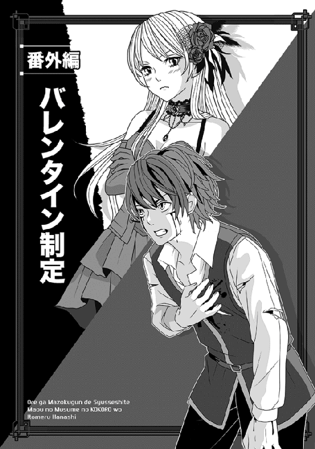
コトの発端は、おそらく大したことではなかったはずだ。
確かアレは、俺が日本からマヤ様と一緒に帰還した直後だったと記憶している。
その夜、俺──というか、俺と仲間を含めた面々は、魔王城の中にある客間で、馬鹿話で盛り上がっていた。
そろそろ寒い季節に入っていたので、ちゃんと暖炉に火も入っていて、シャンデリアだけじゃ足りない明かりを、炎が補っていた。
客間中がオレンジ色の柔らかい光で満ちていて、実によい雰囲気だったね。
いや、みんなが気を遣ってくれて......確かネージュだったかな？ 彼女の発案で、料理やら飲み物やらを持ち込んで、この客間で歓談してたわけさ。
ソファーに座りきれなかった者は、テーブルに着いて話に混じったりして......珍しくボンゴまで来ていて、楽しい集まりだった。
でもまあ、さすがに夜が更けると、一人減り二人減りして、少しずつ人数が減っていく。俺はまだ休暇中みたいなものだったが、他のみんなは翌日の仕事もあるしな。
結局、気付けばエルザとミュウしか残ってなくてさ......俺は一応主賓だから、最後までいるのが筋だろうと思うのだが、この二人がまた、なかなか帰らないのだな。
俺とミュウは同じ部屋なんでまあいいとして、エルザは次から次へと大杯を空け、高い酒をガブガブ飲みまくっている。
そのために残ってるんじゃないかと疑いたくなるほどだ。
俺はまだ中坊に過ぎないわけで、さすがに眠くなってきて、本人に言ってやったわけ。
「なあ、そろそろ明日に備えて寝た方がよくないか？」
──ってさ。
するとエルザは、今まで機嫌よく飲んでたくせに、対面のソファーでキッとまなじりを吊り上げ、俺を睨むじゃないか。
「あたしを追い出して、ミュウといやらしいことしようっていうんでしょ!? わあってるんだからぁ」
......今の語尾、むちゃくちゃ酔ってたぞ。
あと、例によってこのねーちゃんはフリルミニみたいな短いスカートなんだが、盛大に酔っ払っているせいか、今や油断しまくりだ......簡単に言えば、いつも上品に膝を閉じているのに、段々足が広がってきているという。
俺が気にしてチラチラ見ているのを知ってか知らずか、エルザは上機嫌で促した。
「それより、さっきの話の続きよ！ ほら、ミュウが何か訊いてたじゃない？」
「お、おぉ？」
なんだっけとしばし考え、俺は思い出した。
「ああ、俺の世界で、男女が絡むような特別なイベントはないかって話だったな......いや、なんでそんな話になったのか忘れたけど」
俺は首を傾げながら、「それなら、バレンタインってのがあるよ」と教えてやった。
ホントはクリスマスとかもあるんだろうけど、そっちは全く縁が無いからどうでもいいや、けっ。少なくともバレンタインなら、小さいチョコをもらったことあるからな......幼稚園の時だけど。
一人で顔をしかめる俺とは裏腹に、二人の女性はヤケに食いつきがよかった。
「へぇええええ、そんなのがあるんだ？ ちなみに、チョコはこっちの世界にもあるけど、女の子がチョコをあげたら、あんたが好きって告白したことになるの？」
「いやぁ、別にまあチョコじゃないと駄目っていうことでもなくて、他の何かでもいいんだが──問題は、ただもらっただけじゃ駄目なんだな、これが。世の中には、義理チョコっていう、嫌な概念があってだな」
説明したくはなかったが、俺の隣に座るミュウと、正面に座るエルザ──この二人の女性が身を乗り出して聞いているものだから、やむなく詳しく教えてやった。
ああ、どうせ俺が幼稚園の頃にもらったアレは、義理だよ、くそっ。
「へぇええ、そうなの......ふぅん、チョコじゃなくてもいいんだ」
「まぁね」
とろんとした目つきで笑うエルザに、俺は頷く。
このねーちゃんは今晩も胸元が思いっきり見えるドレスを着てて、挑発的に見えるが......もしかしてこれって、俺がうろたえるのを見て楽しむためじゃないのかああ。
......などと煩悩に塗れつつ、さりげなく目を逸らした。
そしたら、熱心に碧眼を見開いて聞いているミュウとばっちり目が合ったりして。
「な、なに......かな？」
「いえ......その......」
ミュウはほんのりと赤くなった顔で、思い切ったように訊いた。
「やはり、男の人としては、そういうのもらうと嬉しいでしょうか？」
「そりゃあんた、異論の余地もなく嬉しいよ！」
魔界産のあまり美味くない紅茶をぐいっと飲み、俺は強く強く断言する。
後から思えば、鈍いのも大概にせーという感じだが、この時は本気で声を大にして主張していた。
「今でこそ諦めているけど、一時の俺は、チョコもらえたら死んでもいいと思ってたからなあ！」
おお、場が静まりかえったぞ......三人しかいないけど。
呆れられたかな？ と心配になったが、全然違っていた。ミュウは、今や完全に身体をこっちに向けてしまい、息せき切ってこう言ったのだ。
「わ、わわたっ」
「......わわた......てなに？」
俺が首を傾げると、ミュウはさらに真っ赤になって言い直した。
「ワ、ワタクシが思いますのに、魔界にもバレンタインがあっていいと思うのです」
大根役者も血の気が引きそうな棒読みで、ミュウがそんなことを言う。
「例えば──そう、三日後......三日後がバレンタインということにしませんか」
「あぁ......そで、いいわねぇ」
泥酔したおっぱい、じゃなくてエルザが、ボンゴみたいなしゃべり方で言う。早い話、もう完全に呂律が回っていない。
「三日後......うん、そのくらいでいいわぁ。割り勘で用意するし」
......なに言ってんだかなぁ、このねーちゃん！
「えええと」
俺はようやく紅茶のカップを置き、へべれけで笑うエルザと、ミュウを見比べた。ミュウはもちろん、軟体動物みたいな姿勢のエルザも、目は結構真剣な気がする。
「......あの」
俺は額に手を当て、そっと尋ねた。
「もしかして、俺に気を遣ってくれてる？」
「いえっ、そんな！」
とミュウは即答したが、エルザは緩んだ笑みで、半分くらい酒がこぼれたグラスを持ち上げた。
「はぁい、知ってます。あーしはナオヤが、いっつもあーしの胸とか腰とか足とか見てるの、ちゃんと知ってますぅうううう〜。あはは〜、今日の下着は白だよ〜」
「そ、そんなこと訊いてないっつんーだ！ あんたの酒はタチが悪いなっ」
動揺しまくった俺は、慌てて大声を出して誤魔化した。
......つか、白なのか！
「あれっ」
そこで俺は、立ち上がってドアのところまで行き、そっと開けて廊下を覗いてみた。
「なーにを誤魔化してるの？」
「誤魔化してるんじゃないっ」
エルザの絡み方に、俺は顔をしかめて言い返す。
「今、廊下に気配がした気がしたんだよ」
まあ、結局誰もいなかったわけだが。おかしいなぁ......勘が鈍ったかね。
俺は首を振りながらソファーに戻った。
○────○
「なに、バレンタインとな!?」
マヤがお気に入りの椅子で身を乗り出すと、メイド頭のジャスミンはしたり顔で頷いた。
「はい、そのようなイベントを三日後に制定されたようで」
「ぬうう」
足を組んで座したまま、マヤは金髪を乱暴にかき回す。
「制定した？ それは誰の許しを得てだっ。次期魔王であるマヤに断りもなしに、そんなイベント日を制定していいと思っているのか！」
そこでむらむらと腹が立ち、すっくりと立ち上がって喚く。
「そもそもっ」
どうせここは十三階のワンフロア独占の魔王部屋だ。ジャスミン以外には聞こえない。
「そもそもマヤを放置して、女二人と夜の密会とは、どういうことかぁーーーっ!?」
タイミングよく耳を塞いでいたジャスミンは、優雅に肩をすくめおった。
「いえ、最初から申し上げた通り、初めはギリアム殿を始め、大勢いたのですけどね......粘り勝ちで、ミュウちゃんとエルザ殿だけが残ったという次第」
「ミュウちゃんとな!?」
いつの間にか気安く呼ぶようになったジャスミンを、マヤは睨み付ける。
「おまえはどっちの味方なのだあっ」
「もちろん、マヤ様の味方ですとも......おおむね。ですからこうして、マヤ様のご命令に従い、日頃からナオヤ殿をさりげなく見守っているわけです。今回のことも、気に入らぬようでしたら、マヤ様のご命令ということで、バレンタイン廃止を命じましょうか？」
「駄目に決まっているであろう、たわけっ」
マヤは即座に却下した。
「禁止して、道ならぬ恋に燃え上がったらどうする......というか、マヤはミュウ以外にエルザまで注意せねばならんのか？ あの胸のでかい女は、さすがに問題外だと思っていたのにっ」
ギリギリと歯を食い縛り、広い部屋の中をうろつき回る。しかし遺憾ながら、マヤは人を斬ったり殴ったりするのは得意だが、喜ばせるという方向では、あまり経験がない。
特にそれが恋愛ごとならば、なおのこと。
そこで、やむなく神妙な表情で立つジャスミンに八つ当たりした。
「ええい、黙ってないで何か妙案を出さぬかっ。こういう場合、先手を打つにはどうしたらいい？」
「......されば、お耳を拝借します」
「うむ」
どさっと元の椅子に座ったマヤに、ジャスミンが近付く。
すぐに、ボソボソと呟き始めた。
○────○
ぴったり三日後の朝、俺はなぜか早朝からマヤ様の襲来を受け、そのまま魔王城の地下階にまで来ていた。
ミュウが後で用事があるとか言ってたから困るんだが......しかし、主君が「大事な用がある故、一緒に地下階まで来るがよいっ」と勢いよく言われると、無下に断ることもできない。なるべく早く用事が終わるのを祈るばかりだ。
「しかし......まさか肉の盾時代の俺達が住んでた階層より、さらに地下があるとは思いませんでしたよ」
機械式エレベーターを降りた後、延々と続く地下への石段を下りつつ、俺は呆れたように呟く。
この城を誰が建てたのかは知らんが、なんつー深い地下だ。
昔住んでた地下階よりかなり下りたと思うのに、螺旋状に続く石段がどこまでもどこまでも下へと延びている。
掘るだけでも大変だと思うがなあ。
「上に建つ城が落ちても、地下に籠もって徹底抗戦ということも有り得る故、なるべく地下を深く広くしたようだ」
カンテラを俺に持たせたくせに、ご自分は先に立っているマヤ様が、教師みたいな口調で言う。
「......それ、マヤ様も賛同してます？」
念のために俺が訊くと、腹の底から哄笑するような笑い声が返ってきた。
「あっはっは！ マヤがそんな地味な戦術を採るものか。最後の瞬間まで、剣を手に敵陣に斬り込んでくれるっ」
「いやいや......臣下の俺としては、その戦術はやめてほしいですねぇ」
呆れて呟いたのを無視し、ようやくマヤ様は立ち止まった。
ちょうど、石段が終わったがらんとした場所で、やたら鉄の補強が入った重厚なドアがある。
「......どこですか、ここ」
「うむ、この向こうの広間には、地下水が流れる川があってな。籠城だけではなく、いざという時はそこから船で逃げられるようになっているわけだ」
「へぇええええ」
さすがに感心して、俺は唸った。
なかなか、よい設備やん？
「それで、我々は一体、ここで何を？」
「うふふ......それは、入ってからのお楽しみだ」
マヤ様は、今度は鼻にかかったような珍しい含み笑いを洩らし、持ってきた鍵でドアを開けると、すぐに中へと滑り込む。
当然、俺もその後に続いた──けれど。
「おろ？」
「なんだ!?」
俺だけならまだしも、マヤ様まで素っ頓狂な声を出して、いささか驚いた。
いや、中に入ると、そこはちょっとした広いドーム状の空間になっいて、確かに微かに水が流れている音がしていたのだ──。
それはいいが、広間の中にはランプというか松明の明かりが煌々と照っていて、二十名くらいの野郎どもがびっしり待機していたんである。
「ええと、なんだか見覚えがあるような、ないような」
「き、貴様っ。俺を忘れたとは言わせんぞ！」
なぜか最初から真っ赤に怒った野郎が、前へと進み出てきた。
傷だらけで押し出しのいい面構えだが、首の辺りに包帯を巻いていたりする......しばらくむさ苦しい顔を見ていて、思い出した。
「ああ、マトリョーシカ......だっけ？」
「違うっ、マトルカスだ！」
盛大に唾を飛ばした。
「忘れてどうするっ」
「いやぁ......だって、正直どうでもいい人だし。だいたいあんた、前に俺が牢にぶち込んだはずなんだけど？」
俺が容赦なく言い返したところで、不機嫌そうだったマヤ様が前へ出た。
「マトルカスを始めとして、全員、マヤも見覚えがあるぞ。しかも、マヤが処罰を下す前に、牢番の一部を買収して脱走した者ばかりだ。......今日はなんの用か？ 今更殊勝になって謝罪しても、もう遅いぞっ」
「寝言を吐かすなあ──ひっ」
集団の後ろの方で威勢のいいことを言いかけた奴が、マヤ様がギラッと睨んだ途端、情けない声を上げた。相変わらず、抜群の眼力だな。
「ふ、ふん、そんな顔をしても駄目だ」
腰が引けてるくせに、マトリョーシカ......じゃなくて、マトルカスは辛うじて踏みとどまった。震える指をマヤ様に突きつけ、後ろの人相の悪い連中にさっと手を振る。
「み、見よっ。おまえに恨みを持つ者が、これだけいるのだ！ しかも、今日はこのような人気のない場所に来るという、絶好のミスを犯してくれたしなっ。今日こそ、貴様の首を刎ねてやる」
「うわっ」
こ、この人、わざわざ自分の死刑執行文書に実印捺すような真似をしてぇええ、と俺は内心でびびっていたが......なぜかいつものマヤ様に似合わず、この時は顔をしかめてマトルカスを見返した。
「待て、どうしてマヤがここへ来るとわかった？」
「それは、独自の情報網が──」
「早く理由を言えいっ」
怒鳴られ、たちまち脂汗を額に浮かべるマトルカスである。
「て、帝都中の菓子職人に命令を出し、珍しい菓子を特注で注文したそうじゃないかっ。その情報が我らの網に引っかかったのだ」
おどおどと説明する。
どっちが脅してる側かわからんぞ。
「しかもおまえは、完成したその菓子を、わざわざこの地下へ運び込ませたと聞く。そこまでわかれば、後は待ち構えていればよい。いずれおまえが来るのは当然だし、現に来たじゃないか！」
そこまで聞いた俺は「うん？」と首を傾げた。
マヤ様が......お菓子を？ それってまさか──
考え込んでいる途中で、マヤ様が不吉な声音で尋ねた。
「......それで、納入されたものはどうした？」
「ふん、馬鹿みたいにデカいあれか？ 一体、何のつもりか知らぬが、復讐の皮切りとして、まず蹴倒して皆でションベンをかけて──」
マトルカスがそこまでしゃべった途端、いきなりマヤ様の右手に例のごつい大剣が出現した。次に、俺が止める暇もなく、猛然と走り出す。
「貴様ぁああああっ」
「──！ まっ」
多分、「待てっ」とか喚く気だったんだろうな、マトルカスは。
しかし......あいにく全然間に合わず、マヤ様があいつの眼前で大きくジャンプして、漆黒の大剣を振り下ろした。
おぉ、ジャンピング斬りとか、ゲームの技かとー。
たまに有り得ないようなことするよな、この人。しかも、当然のクリティカルヒットで、哀れ、マトルカスの巨躯は簡単に真っ二つである。
「全員、殺すっ」
「わあっ、や、やっぱり降参しますっ」
「やかましいっ!!」
あ......真っ先に降伏した誰かが、二番手で斬られちまった。
うわぁと思った俺が、マトルカスの死体に駆け寄る暇もない。
マヤ様の勢いは止まらず、そのまま猛然と敵集団に突っ込んで行く。まさか、マヤ様自ら抵抗するとは思わなかったらしく、こいつらがまた、全然相手にならないんだなっ。
半分は最初から逃げ腰だったし、一応抵抗したあとの半分も、二合と斬り合いに持ち込めた奴がいないっ。片っ端から斬られていく。
唖然と見ていた俺が、遅まきながら加勢に加わった時には、もう七割方、斬られていたというね！
何しに出てきたんだ、こいつらわー。
しかし......全員、（裁判抜きの）ショートカットで処刑されてしまった後も、マヤ様は剣を片手に、肩を震わせていた。
不思議に思った俺が、その視線の先を見ると......なんか、黒い物体が倒れている。
さっきの話に出ていた地下の川か？ そのそばに、ホントにぐちゃぐちゃになった等身大の何かが倒れていた。
連中が足で踏みまくって潰したのか、もはや原型も残っていない。
「......せっかく、ナオヤのために注文したのに」
ポツンとマヤ様が独白するのを聞き、俺はぱっとそちらを見る。
「じゃあ、やっぱりこれって」
「うむ、デモンタイムのチョコレートぞ」
「......いや、デモンタイムじゃなくて、バレンタインですが」
魔王テイスト過ぎるネーミングに突っ込みを入れつつも、俺は実はかなり感激していた。
次期魔王がここまでしてくれたのだ......しかもマヤ様は、半泣きになって剣を構えて──。
「ああ、もう死んでます、死んでますからっ」
涙目になった真紅の瞳で、マトルカスの死体になおも斬りつけようとするマヤ様を、俺は必死で羽交い締めにして止める。
ぐしゃぐしゃになった魔界産のチョコのそばで、死体に斬りつけようと暴れるマヤ様を止める俺──なかなか、常軌を逸したシチュエーションでたまらん。
ただ、ちょうどそこで広間の外の石段を駆け下る足音がして、俺は慌ててマヤ様を放し、また抜刀した。もちろん、マトルカス達の援軍かと思ったからだが......入ってきたのは、警備兵をわんさか後ろに従えたジャスミンさんであり、マヤ様を見て、大きなため息をついた。
「ああ、申し訳ありません......遅かったですか」
「ええと、どういうことかな」
チョコのそばで動かないマヤ様に代わり、俺が尋ねた。
「いえ、城の御用商人である菓子職人の一人が、妙な男達に製作中のチョコのことを訊かれたと話してくれまして......こうして駆け付けたのですが」
「ああ、なるほど」
俺は肩をすくめて、死体の山に顎をしゃくる。
「まあ、そっちは片付いてしまいました」
「もちろん、そちらはさして心配しておりません。私が心配していたのは、マヤ様ご注文のチョコの方です」
ピンク髪のジャスミンはぴしゃりと言うと、マヤ様にそっと寄り添う。
「マヤ様......どうか元気をお出しください。実は──」
そこで、なぜかゴニョゴニョと俺に聞こえないように耳打ちをする。
途端に、マヤ様が息を吹き返したようにジャスミンを見た。
「まことかっ」
「はい。差し出がましいとは思いましたが、こんなこともあろうかと私めが独断で」
「なにその......どっかの時代劇で聞くようなセリフは？」
俺の疑問などどこ吹く風で、マヤ様のお顔がぱあっと明るくなった。
「よしっ、でかした！」
俺は首を傾げて二人を見比べたが、ジャスミンはもちろん、復活したマヤ様も全然気にした様子もなく、いきなり俺の腕を取って歩き出した。
「さあ、上へ戻ろうっ。改めて見せるものがある」
「は、はあ？」
マヤ様に引きずられるようにして、俺はその場を後にする。
ジャスミンが引き連れていた警備兵が後片付けをやるのか、連中は全員がそこに残っていた。
どうでもいいけど、マヤ様は気持ちの切り替えが早いなっ。
○────○
魔王城の最上階に戻った俺達は、ジャスミンによってマヤ様の私室ではなく、その横にあるメイド達が控える詰め所のような部屋へ案内された。
入ったすぐが広い客間のようになっていて、待機中のメイドさんが一斉に立ち上がって低頭してくれたが──それより俺は、彼女達の中心にいる、仁王立ちした黒い物体にぶったまげた。
不敵な笑みを浮かべた口元に、切れ長の瞳......それに、腰に片手を当てて胸を張ったポーズ......もう見るからにマヤ様の彫像そのものなのだが、全身が真っ黒というか、焦げ茶系なのである。
「も、もしかしてこれ、全部チョコ......とか」
俺が喉の奥で唸ると、マヤ様が上機嫌で頷いた......五、六回くらい。
「そうだ！ デモンタイムのために、マヤがわざわざ帝都の菓子職人達を総動員して創らせたのだっ。地下に隠した方はあの者達に破壊されたが、ジャスミンが気を利かせて二体発注していたらしい」
「はぁあああああ」
いやぁ......このチョコすげー。マヤ様がまたもやバレンタインを言い間違えてるけど、そっちはもう、どうでもいいくらいすげー。
大きさも等身大だが、ちゃんとゴシック風衣装みたいな模様も纏っている。スカートのひらひら加減まで、かなり再現されているぞ。
これは思わず、中を覗きたくなるな！
俺のドキドキ感をどう勘違いしたのか、マヤ様はわざわざチョコ像の横に並び、自分の細腰に片手を当て、像と同じポーズと不敵な笑みを作って見せた。
「どうだ、そっくりであろう！ 同じものを作らせるため、マヤも我慢してモデルになったのだぞ」
「へぇえええ」
いやもう......唸るしかないです。
ていうか、ジャスミンを始めとするメイドさんが周囲で輪になって俺達を見ているんですが......すげー恥ずかしい。
こんなところで、マヤ様チョコなんか食えないよっ。
などと俺が思ったのを感じ取ったのか、マヤ様はつかつかと歩み寄り、そっと囁いた。
「案ずるな。ナオヤの細い神経は既にお見通しだ。後で別室に運ばせる故、思う存分食べるがいいぞ......マヤをな！」
い、いやっ。わざとだろうけど、その言い方はなんかえっちぃな！
俺は頭がくらくらしたが、とにかく感激していたのは事実なので、珍しくマヤ様の手を自分から握り、心から礼を述べた。
「あの......ありがとうございます。俺、嬉しいですよ」
「う、うむ。苦しゅうない」
マヤ様も少し赤くなり、そっぽを向いたりする。
「マヤもこのデモンタイムは気に入った故、来年もまた何か趣向を凝らそう。もはや、魔界の正式なイベントとして採用しようではないか」
「ははは」
「──それではほら、まずはナオヤの感謝の気持ちを形にしてみせるがよい」
「えっ」
「えっ、ではないぞ、相変わらず鈍い。──んっ」
マヤ様が目を閉じ、そっと顔を上向ける。
周囲からジャスミン以外のメイドさん達が「きゃーっ」と声を上げるのが聞こえた。こ、こんな大注目の中で、キスですか!?
しかし、マヤ様は当然のような顔をして動かず......やむを得ず、俺はそっと見物人達の前でマヤ様に口付けした。
昼前に私室に戻ると、なぜかミュウがドアの前で立っていた。
さっきのこともあり、俺は思わずどぎまぎしてしまう。
「ど、どうして外にいるの？」
「......いえ、これからナオヤさんは、忙しいだろうと思いましたから」
静かな口調に、俺の焦りはさらに増大した。
確かに昼過ぎから、マヤ様と二人でチョコ食いまくりの約束をしていたからだ。
「い、いやぁ」
「あの......これ、エルザさんとネージュさんが、お金を出し合って用意したそうです」
ミュウは俺の言い訳を遮り、右手に握っていたものを、俺に渡した。見れば、魔界原産のブルーダイヤを使った、ごくごく小さいネックレスだった。
「チョコじゃないですけど、バレンタインの贈り物だそうです......お返しを非常に楽しみにしていると──これはエルザさんからの言伝です」
「むうぅ」
まだホワイトデーのことも教えていないのに、既にお返しのことに言及するとは......さすがエルザというべきか。
一人で感心している俺に、いきなりふわっとよい香りが届いた。
もちろん、ミュウがふいに俺の耳元に唇を寄せたからだ。
「それから、これは私のプレゼントですわ......やはり、チョコじゃありませんけど」
「い、いやっ。そんな気を遣わなくても──」
俺が一人で焦っている間に、ミュウはそっと短い言葉を羅列した。覚えやすいが、絶対にうっかり言わないような単語の羅列をだ。
「な、なにそれ？」
「......今の言葉は、私そのものです」
珍しくドレス姿のミュウは、にこっととろけそうな笑みを浮かべる。
「私の全システムを統括する、管理コードなんです。......それを知るナオヤさんは、もう私自身を手中にしたも同然ですよ」
「えっ」
い、いや......なんか今、凄いことを聞いた気がしたけど。
さすがの俺も、慌てて詳しいことを訊こうとしたが──。
次の瞬間、ミュウに素早くキスされ、質問のセリフが吹っ飛んでしまった。
唇を離した後、ミュウは素早く俺に囁いた。
「今日は仕方ないですけど、近々、私との時間も作ってくださいね」
俺が返事しようとした時には、ミュウはもう踵を返して城の廊下を去って行くところだった。
俺は、マヤ様との騒ぎも忘れ、しばらくミュウのたおやかな後ろ姿を見守っていた。
幸運にも、三巻以降の続編を綴ることができて、嬉しいです。
さすがに初めてこの巻から読む方はいらっしゃらないと思いますが、念のため、遠野空と申します、よろしくお願いします。
なお、あらかじめ申し上げますが──四巻は新規エピソードとはいえ続編であり、一巻から読まれることをお勧めします、はい。
さて、この四巻を始めるに当たり、最初はかなり悩みました。
この辺の事情は以前も触れたかもしれませんが──三巻で一応の決着に至っていたので、そこからまた始めるには、どうしても新たなエピソードが必要となるからですね。
そこでたまたま、ナオヤと似た立場のレージという少年（もう二十歳近いですが）の物語を同じく「小説家になろう」さんに投稿していたのを思い出し、「立ち位置が似た者同士がぶつかった時、どうなるだろう？」と考えて始めたのが、この新たな物語です。
一度発売予定が決まってしまうと、途中で「やはり止めます」とはいかないので、始める前まではだいぶ考え込みましたね。
というか、実は今も考えながら少しずつ進めている感じなのですが......少しでも多くの方達に楽しんで頂ければ嬉しいです。
レージとナオヤは同じ日本人であり、命がけで守ろうとする異世界の女性がいる──という点では似ています。
ただ、細かい部分では随分と差がある上に、俺魔は一人称の物語なので、どうしても当初の主人公であるナオヤに比重が傾いてます。
これも、そのうちレージの視点からも少し事情を書いてあげたいなと思っています......あくまで予定ですが。
なお、俺魔は今回も、上条様の綺麗なイラストが、物語に華を添えてくださっています。毎巻、少しずつ違うマヤ様の絵を、どうぞ堪能してください。
あ、もちろん他のキャラも（忘れてない忘れてない）。
著者プロフィール
遠野 空
Tohno Sora
辛うじて都内と呼べる地域に生息。
物語が延長戦とも言うべき展開に入り、日々唸っているところ。
とりあえず、近所のスーパー銭湯にでも浸かって、少しでも楽しんでもらえるものが書けるようにがんばりたい──じゃなくて、がんばります。
俺が魔族軍で出世して、魔王の（娘の）心を射止める話IV
2015年９月１日発行 ver.1.0
著 者 遠野 空
発行所 TOブックス
〒150-0045 東京都渋谷区神泉町18-８
松濤ハイツ２Ｆ
03-6452-5678（編集）
0120-933-772（営業フリーダイヤル）
Ⓒ2015 Sora Tohno
※無断で複製・複写・データ配信などをすることは、かたくお断りいたします。
本電子書籍は下記にもとづいて制作しました
俺が魔族軍で出世して、魔王の（娘の）心を射止める話IV
発行日 2015年８月１日 発行
本作品の全部または一部を無断で複製、転載、配信、送信したり、ホームぺージ上に転載することを禁止します。また、本作品の内容を無断で改変、改ざん等を行うことも禁止します。
本作品購入時にご承諾いただいた規約により、有償・無償にかかわらず本作品を第三者に譲渡することはできません。
本作品を示すサムネイルなどのイメージ画像は、再ダウンロード時に予告なく変更される場合があります。
本作品は縦書きでレイアウトされています。
また、ご覧になるリーディングシステムにより、表示の差が認められることがあります。